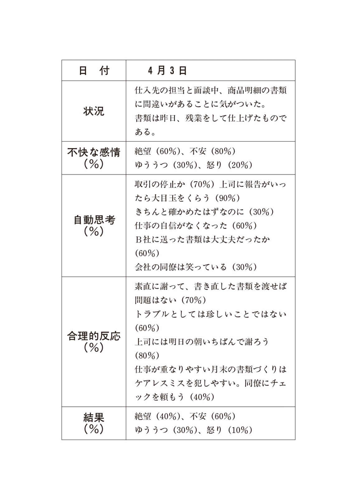

| 「うつ」にならない心のつくりかた (ぶんか社文庫) | |
| 斎藤茂太 | |
| 株式会社ぶんか社 (2005) | |
はじめに
うつ病が急増していることは、多くの方がご存じだと思う。テレビや雑誌、新聞では毎日のように、うつのことが報じられている。推定では、中高年の自殺者の七割がうつ病によるともいわれている。
最近は、いわゆる「うつ病」が減って、軽症うつ病と呼ばれる症状が増えている。そして軽症うつ病は、ほとんどがストレスを原因に発症しているのである。
人はストレスと無縁ではいられない。やはりうつ病に苦しんだ夏目漱石は、すでに明治の時代に「とかく人の世は住みづらい」と嘆いた。その住みづらさは、いまも変わるまい。いや、毎日のストレスは現代のほうが、さらに大きいはずだ。「うつ」にならない心をつくるためには、かわせるはずのストレスに早めに手を打っておくことだ。
ゆううつに悩む人は、とかく一つのものの見方にとらわれがちである。本書では、心のとらわれからどのように自由になるかのアドバイスを紹介した。一つには発想をマイナスからプラスに切り替える方法であり、自分の考え方にゆがみはないかを吟味 する方法である。あるいは、直面した問題に一歩立ち止まって考える自己観察の方法である。
本書には、私の精神科医としての助言もあるし、大正、昭和、平成と三つの時代を生きてきた生活人としての知恵も書いた。
私は、今年八十九歳である。少しは生きる知恵に長 けたのではないかというささやかな自負もある。人の寿命が七十歳なら、私は振り出しに戻って、再び人間の三十年を生きているのだとも考えるのだ。
本書が、あなたのゆううつをいやし、心を元気で満たすことに役立てば幸いである。
齋藤茂太
「うつ」にならない心のつくりかた／目次
サラリーマンの十人に六人、つまり六割がストレスを感じている。
ある生命保険会社の調査(※１ )によると、係長、主任クラス、年齢では三十代後半以降の六割が「仕事でストレスや疲れを感じた」といい、新入社員でも同じく六割が「日常的にストレスを感じる」と答えている。年齢や立場が異なれば、ストレスの中身も異なるだろう。だが、「我慢も給料のうち」という宮仕えの嘆きは共通なのだ。
平成十三年の厚生労働省の国民生活基礎調査でも、仕事や職業生活について強い不安、悩み、ストレスがあるとする人は、五～六割だった。
そして、どの調査でも、ストレスの具体的な原因として筆頭にあげられたのは、人間関係だった。
一日の大半、人生の多くの部分をすごす職場では、人間関係のストレスをどうさばくかで、仕事の負担はもちろん、日々の心のありようもずいぶんと違ったものになる。上司や同僚の支援や理解が得られれば、励まされ、多少の難題は、むしろやりがいを感じて乗り切ることもできるだろう。チームワークのありがたさである。
そのとき人間関係はストレスの原因ではなく、いやしであることも感じるはずだ。本来、人間関係とは人に安らぎを与えるものなのである。
けれど、「三人集まれば派閥ができる」というように、複数の人間が集まる会社では、人間関係で負担を感じずに毎日をすごすことはできない。会社は、業績や成果をめぐってしのぎを削り合う組織であり、そこで働くのは原則として競争原理である。
部下を保護し、意見にじっくりと耳を傾ける上司がいる一方で、部下を自分の出世や保身の道具としか考えていない上司がいる。上司を選べない以上、かかわり方を誤ると職場はつらいものとなる。
職場不適応という症状は、上司や同僚との関係悪化をきっかけに、職場や仕事にうまく向き合えなくなる状態である。入社早々の新人がかかることもあれば、ベテラン社員が起こすこともある。
病気とも健康ともいえない宙ぶらりんの状態で、仕事面では、ポカ休（当日休暇)、遅刻、早退などがたび重なる。能率が落ち、仕事がはかどらない。そもそも仕事に対する意欲がわいてこない。ミスが目立って増えてくる。そんな兆候が現われてくる。
表面だけでなく、体もおかしくなる。食欲不振や不眠におちいり、不安やうつに似た症状が現われる。仕事に手がつかなくなる。出社ができなくなることさえある。
職場不適応は、若い社員の場合は、背景に不安障害や神経症が潜んでいる可能性がある。中高年であれば、うつ病がかかわっていることも少なくない。
原因は職場の環境と、その環境に対する本人のかかわり方との両方にある。双方の問題点を改めなければ、いったん回復しても再発を繰り返してしまう。
うつ病同様、職場不適応にも薬物療法があり、並行してカウンセリングが行なわれる。仕事へのかかわり方の見直し、プライベート生活の充実が求められるが、なにより職場でのコミュニケーションを心がけることが職場不適応では必要とされる。
ここでも人間関係とどう向かい合っていくかという、本人の考え方や生き方が問題となってくるのである。
「ゆううつ」を「うつ」に変える圧力、それがストレスである。
とくに心因性のうつ病は、入学、就職、転勤、昇進、親や配偶者との死別や生別などが強いストレスとなって発症することが少なくない。子どもの教育問題や進路、あるいはその結婚、独立といった人生の節目のできごとが契機になることも多い。
こうした一過性のストレスがある一方で、私たちは会社などで、日常のストレスに日々さらされているのだ。
とりわけ気苦労を強いられるのが、前述したように人間関係に根ざしたストレスであろう。「ゆううつ」を「うつ」に変える慢性的な心の疲れは、多くがここに潜んでいる。
自分しだいで解決できる問題と異なり、人間関係においては、つねに相手がいる。上司、同僚、取引先、あるいは家族。相手も自分と同じように個性をもつ人間だ。こちらの望み通りの人間になってくれはしない。自分の性格さえおいそれとは変えられないのに、他人が性格を変えてくれるはずがない。
突き詰めると、人間は二つのタイプに分けられるだろう。「巻き込む人」と「巻き込まれる人」だ。つまり、自分のペースで押し切る人と、そのペースに押し切られてしまう人である。
巻き込む人は、たいてい押しが強い。おしゃべりで、こちらに話す機会をなかなか与えてくれない。言葉のはしばしに人を見下した感じもするだろう。聞く側はたまったものではないし、押し切られたときの後味は最悪だ。
また、巻き込む人にはこんなずるいタイプもいる。自分の責任のはずなのに、問題が起こるといいわけをまくし立て、責任の所在をすり変えていくタイプである。強面 で理屈を並べるが、腰は引けており、問題は他人に押しつけて身の保全を図る。リーダーシップとは無縁の上司がよくいるが、この典型である。
この手の人間には、一見弱々しく見えるタイプもいるので、油断はできない。頼りないのでつい手を差し伸べると、「結構です」と拒絶してきたりする。けれどこちらは気が気でないから、結局は手を貸してしまう。そうなると、手を貸したのはこちらの責任だから、向こうは悪くない。「手助けはあなたが勝手にやったことだ」と開き直られることもあるだろう。したたかで計算高く、たちの悪い弱さをもっているのがこの「巻き込む人」でもあるのだ。こちらとしては、相手が困っているから手を差し出しただけなのにと、人のよさにつけ込まれた悔しさにほぞをかむことになる。
いま述べたいずれのタイプの場合も、一言「ノー」といえれば巻き込まれずにすむのである。だが、巻き込まれる人は、その一言がどうしてもいえない。心が優しく、思いやりにあふれているからだともいえるだろう。だが、少し考えてみてほしい。こうした気づかいは本当に優しさに根ざしたものなのだろうか。
巻き込まれやすい人にとって、なにより大切なのは、他人に認められることである。誰に対してもいい顔をしたい願望があるのだ。心の底で「そうではない」と思いながらも、責任を押しつけてくる上司に不承不承したがう。Ａさんの話にうなずき、Ｂさんの話にも、もっともだとひざを打つ。
けれど、それが本心からではないのは自分がいちばんよく知っている。はっきりとものがいえない自分に腹が立ち、結果として嘘をついてしまう自分をなさけなく思ったり、八方美人の自分に自己嫌悪したことはないだろうか。
「ノー」といえない本当の理由は、自分の「ノー」に、相手がどう反応するか、それに向き合うのが怖いのではないだろうか？ 拒絶することで相手から嫌われたくない、仲間はずれにされたくない、自分の評価に傷をつけたくない、そんな思いが心をかすめているのではないだろうか。
人に巻き込まれがちな人には、人間関係がストレスの強弱を決めてしまう。
無用な争いを避けることは悪いことではない。だが、波風を立てまいと「自分さえ我慢すれば」と口を閉ざしてばかりでは、ただ自分の腹がふくれるだけである。一方的な我慢は、人間関係ではマイナスに作用しがちなのだ。人間関係が悩みの種としか思えず、ストレス解消となるような良好な人間関係を結ぶことなど考えることもできなくなってしまう。
仕事のおもしろさ、つまらなさは、人間関係と深くかかわっている。「人間関係」「仕事の質」「仕事の量」がストレスの三大要因としてあげられるが、職場の居心地のよさとは、この三要因のバランスである。人間関係のストレスをうまくコントロールできれば、仕事そのものから受けるストレスはかなり軽減できる。
仕事の量が多くても、やりがいと興味がかきたてられるなら、心に及ぶ負担は少ない。むしろ仕事が快いストレスとなって毎日が充実していく。そこに気心の知れた同僚や理解ある上司がいれば、大量のルーティンワークであっても、ストレス負担はグッと軽くなるはずだ。
とはいえ、量・質・人間関係のすべてに理想的な職場など、なかなかあるものではない。リストラという名の人員整理で、一人頭の仕事量は増える一方である。仕事の質と量をめぐっては、いくら会社に訴えても、却下されるのがおちだろう。個人の都合が優先されることは困難な状況であり、あえて異を唱えて変革を強く求めれば、そのこと自体が新たなストレスになりかねない。
それよりも、仕事の質や量のストレスを不快なものとして感じなくなるようにするのが早道である。そのためには、人間関係を見つめ直して、相談できる人、信頼できる人を身近につくっておくことが望ましいのだ。
仕事についても、割り切れるところは割り切るようにしよう。捨てるものは捨て、残しておくものはきちんと残しておくという、踏ん切りをつけるのだ。「うつ」にならない心のつくりかたは、そうしたところからはじまる。
すべてを抱え込まないという見きわめが大切なのである。
実は、私も人間関係で煩 わされてきた。
乳母日傘 の育ちではないが、明治から続く医家に三代目の跡取りとして生まれた。趣味の飛行機は昭和の初年からで、私の飛行機好きは日本の航空史にほぼ重なる。乗り物はすべて好きだから、旅は人生の一部といっていい。
旅好きが高じて日本旅行作家協会の会長である。ちなみに副会長は人気テレビ番組だった『兼高かおる世界の旅』の兼高かおるさん。それに、元ＮＨＫアナウンサーの作家・下重暁子さんだ。名誉会員にはエベレスト登頂の三浦雄一郎さんもいれば、松尾芭蕉や、『西遊記』の三蔵法師もいる。遊び心に富んだ協会である。
おもしろいこと、心引かれることには目ざといほうだ。ふだん通い慣れた道も一本手前で曲がれば旅の始まりと心がけているから、街を歩いていても興味は尽きない。近所のバス停に捨てられたタバコの吸殻を拾い集め、これを分析して「ポイ捨ての法則」の解明に熱中したこともある。
そのせいか、世事には疎 いと思われている節がある。茂太という名前からも、モタさん、モタさんと、通称通りのおっとりとした人柄だと買いかぶっていただける。恥ずかしながら、大人の風格といわれたこともある。歳とともに増した恰幅 のよさに負うところ大なのだろう。「落ち着いた態度で、悩みは柳に風と流していくのでしょう」とか「ストレスとは無縁でしょうね」「人間関係で悩まない秘訣を教えてください」などといわれることもある。ありがたいおほめの言葉である。
けれど、父・茂吉は極端な短気であった。母・輝子もそれに劣らずに気短だ。なんで私だけが気長な大人でいられよう。
私だって、こう見えても結構かんしゃく持ちなのだ。それに加えてものごとに必要以上にこだわる。これは父譲りで、私の性格の一部になっている。筆まめなのは後述する「粘着質気質」の現われであり、これも父譲りである。
好奇心の強さは、母から譲り受けた。母はあきれるほどフットワークの軽い人で、朝に顔を合わせたと思ったら、午後には京都から電話というあんばいである。海外には戦前から出かけていた。戦後は、世界のおもな国はすべて訪れ、その後も八十一歳のときに南極、八十二歳でエベレストに出向いた。異郷で生きるか死ぬかの病に倒れても、家族の心配などよそに帰国後はけろりと次の旅行の計画を立てていた。
母はやんちゃで、世間知らずで、自分の思ったことを人に押しつける人だった。たとえば、旅行帰りに羽田空港に迎えに行くと、母はいつも先頭をきってタラップを降りてきたものだ。機内は狭い。どうすれば、ほかの乗客を押しのけて、毎回一番で出てこられるのか私には不思議だった。母が機内でどんな振る舞いに及んでいるか、深くは考えないようにしていたが。
母は、世間の目から見れば、変わった人であったろう。わがままを押し通すが、けろっとしていて悪意はない。それが並はずれていた。しばらく離れていると妙になつかしく思えるが、いっしょにいると息がつまり、気がむしゃくしゃしてくる。
母のペースに翻弄 されて、私はしばしば心を乱していた。母はまさに巻き込むタイプの人であったろう。その奔放 さに「ノー」といえずに巻き込まれる私は、右往左往のし通しだった。
理解ある上司、同僚に恵まれれば、それに越したことはない。だが、誰のもとで働くかは思い通りにならないだろう。
いやな仕事、いやな上司。「仕事も上司も嫌いだ」とはっきり思ったその瞬間、「いやさ」はさらに増してしまう。
だからこそ、「いやさ」について一度正面から受け止めてみてほしい。仕事がいやなら仕事のおもしろいところを探し、人が嫌いならその人のよい点を考えてみる。見つかっても見つからなくても気にする必要はない。逃れられないものとしてまっすぐ向き合う覚悟ができれば、臆することなく次の一歩を踏み出すことができるようになる。
たとえば、能力はあるものの、その能力の高さから部下に仕事を任せようとしない困った上司がいるとしよう。このタイプは自分が有能なだけに、人の成功を認めない。部下を未熟者扱いする。企画を出してもあれこれ文句をつけ、報告書は朱筆だらけで突き返してくる。なにごとにも自分が一番と信じて疑わないタイプである。
この類の上司は、平均値くらいの人の気持ちがわからないから、部下の得手不得手を考えて組織を調整していくことができない。個人の能力は高くても、管理職としては無能といえる人物である。
こういう、なんでもできてしまう人のハードルは高い。そのハードルを越えられなければ、無能の烙印 を押されてしまう。だからこそ、そんな上司に対しては、自分の努力だけは認めさせておきたい。自分がどれほど真摯 に仕事に取り組んでいるか、どれだけの誠意と熱意を仕事にかけているか、その意気込みを伝えるのだ。
このとき肝心なのは、事実だけを伝えることである。誇張したり嘘をついてはいけない。一つの嘘はさらなる嘘を呼び込むだけだ。甘く見られているからと、見栄を張ってもいけない。見栄を張るための小細工は、あとあとまで負い目になる。能力のある相手だけに、嘘や虚勢はすぐに見破られてしまうからだ。あるがままの自分の仕事ぶりを伝えよう。
上司がそれを聞き届けるかは別にして、とにかく自分をアピールした事実は残る。その事実を大切にしてほしいのだ。上司や同僚との間に理解と信頼関係が築かれると、様々な点で支援になる。ただ一言、自分の気持ちを口に出すだけでも、心はずいぶんと楽になるだろう。
人間関係の緊張に我慢ができなかったり、相手に気をつかって心にもないことを口にしてしまいがちな人には、本心を語ることがまず第一歩なのである。
有能な上司がいる一方で、実力が伴わない上司がいる。
そんな上司に限って、誰が見てもむりなことでも、「この方法が正しい」と自説を曲げない。それとなく間違いを正しても、感情的に反発されてしまったりする。このタイプの人は自信がないから間違いを認めることができないのだ。素直に反論を聞き入れることは、自分の無能さを認めてしまうことになる。だから人間関係にも素直になれない。まあ、ある意味では、理解しやすいタイプかもしれない。
こうした上司の心には、自分が無力な存在だという思いがわだかまっているものだ。それゆえの虚勢なのである。しかしその意識のために、逆に世界を自分中心に回らせたいという尊大な思いにもとらわれている。そのため、人の目が自分の一挙一動に注がれなければ気がすまない。上司という立場もあるから引っ込みもつかないのだろう。
このタイプの上司を無視したり、やり込めたりすると、かえって悪い結果を招いてしまう。むしろ、「信頼しています」という姿勢を示してあげたほうがいい。
「それは嘘をつくことではないか」「ゴマすりだ」と思われるかもしれない。だが、そう思うのは、あなたがその上司を嫌いだという感情が先立っているからである。
嘘も方便だ。嘘が悪いのは、嘘が嘘を招いて自分が追いつめられるときや、嘘によって実際に誰かが迷惑をこうむるような場合などである。実害のない嘘は人間関係の潤滑油ではなかろうか。
むしろ、「嘘はいっさいついてはいけない」という信条のほうが、生きることを苦痛にしていく。のびのびと生きていくことができないなら、それは信条ではなくて、自分の身をしばる教条である。
人間関係に悩む人は、自分自身の価値を素直に認められない人が多い。自分を認められない人は、他人の長所も素直に認められない。だが、相手の価値を自分のために使えないのは、実にもったいない話ではないか。
そりが合わない人、目ざしている方向が違う人ほど、自分には欠けている長所や技術をもっているものである。まずはその長所を認めてみよう。本人に面と向かっていえなければ、それとなく伝わるよう第三者に伝えることもできる。
どんなに無能で嫌いな上司でも、わだかまりを捨てて話してみると、意外に面倒見がよかったり気さくな一面が見つかるかもしれない。それを感じたままに伝えれば、そういわれた上司も決して悪い気はしない。やがては、部下であるあなたのことを素直に認め、強い味方になってくれるかもしれない。そして、あなた自身、人の長所を素直に認め、それをほめることができた自分に余裕を感じることができるだろう。
一つのほめ言葉をきっかけに、いい人間関係が始まったという経験はないだろうか。人をほめて、ほめすぎることはない。「嘘から出たまこと」ということが、人生には確かにあるのだ。
こんなことからも「うつ」にならない心はつくっていけるものなのである。
伝書鳩のような上司がいる。
検討を重ねて案件がまとまった。課長も「これはいいね」という。そして幹部とかけ合うのだが、ほどなく「部長がネックでねえ」などとすごすご部署に帰ってくる。「課長、頑張ってください」と部下一同で励ますと再び幹部のもとへ足を運んでくれるのだが、部長に対しては「部下がもう一度というものですから......」といったあんばいで、どうも頼りにならないのがこのタイプだ。
中堅旅行代理店の主任であるＳさんの上司が、こうしたタイプだった。
不況やテロの影響で海外への客足が激減し、旅行業界が大変な時期だった。Ｓさんは状況打開に、国内旅行の企画を立てた。ありきたりの観光地では喜んでもらえない。格安チケットも簡単に手に入るようになり、サービス慣れしたお客の要求水準は高い。Ｓさんは企画書を書き上げるために、休日も返上し、自腹を切ってツアーの候補地を訪れた。
「大手も国内旅行を強化しています。それだけに企画力が必要です。大手の資金力もなく、小企業の小回りもきかないわれわれにできる企画は、これです」と課長を説得し、自信をもって提出した。しかし、意外にも部長会議で却下されたのだ。納得がいかず、課長に問いただしてみたが、「部長がねえ」で要領を得ない。企画書を書き直して課長経由で再提出したが、結果は同じだった。
情報を集めると、どうやら却下の原因は課長の説明不足にありそうなことがわかった。もともとこういった折衝が得意な人ではなかった。こまかな点を突かれても充分な説明ができず、幹部の不安を募らせたのだ。
一度ボツになった企画の再提出は前回以上にチェックされる。Ｓさん苦心の企画の行方はますます厳しくなった。
そこでＳさんは、「こういわれたら、こういってください」と想定問答集をつくって課長に手渡してから、三度目の会議に課長を送り込んだ。問答集には、原価表から提携先のホテルの紹介記事、はてはお客に渡す手土産の現物も添えられていた。ようやく企画が通ったのは、企画書の倍の手間をかけてつくったこの問答集のおかげだったと、Ｓさんは信じている。
企画書一本を社内の会議に通すために、ここまで上司の面倒を見なくてはならないのかとＳさんは思った。ばかばかしいと感じもした。「組織の壁だ」とあきらめかけもした。
けれどＳさんには収穫もあった。企画書を通すために、上司である課長とのかかわり方を根本的に考えたことである。
いまそこにある仕事の問題に意識を集中して考えるとき、結果や評価はともかく、さまざまな試みが可能であることに気がつくことがある。根回しのために、上司にことこまかく働きかける。上司に使われるのではなく、上司を使い回す。こうしたかかわり合い方もあるのだ。弱い上司は鍛え上げなければだめなのである。
そういって、Ｓさんはこう続けた。「課長を課長にふさわしい器にしてあげる。これも部下たる者の務めなのですね」と。
また、部下が徹夜で仕上げた企画書を、自分が発案者であるかのように振る舞う上司もいる。
会議やプレゼンテーションでも、担当者の名前には一言も触れないで、功績は独り占め。だが、企画が失敗したときは、一転して担当者の名前を連呼し責任を転嫁したりする、人間としても許せないタイプだ。
けれど、タテ社会が基本の会社では、こうしたトラブルが起こった場合、実は手の打ちようがない。「それは私の企画です」といったところで、おそらくほとんどの会社ではこの申し立てを受け付けないだろう。誰が仕上げようが企画は企画。中身さえよければ発案者はとりあえず不問だ。くやしいがそれが現実である。
それだけに、「しかたのないことだ」と早々に割り切って、早く考えを切り替えたほうが、心の健康にはよいものだ。
とはいえ、企画をつくった自分の努力がまったく認められなければ、やる気も失せるだろう。
こんなときありがたいのが、信頼できる同僚の存在である。陰口、悪口、大いに結構。酒の勢いを借りてもいい。いやな気持ちをありったけぶちまけてしまうのが、いちばんの薬である。
「グチは禁物」などという信条は不要だ。不満や怒りに心から耳を傾けてくれる同僚は、疲れた心のセラピスト（治療師）であろう。
吐き出して気がすむなら、吐き出してしまえばいい。いたずらに心に残してしまえば、やがて増殖して、ぬぐい去りようもない怒りと不安で心が凝り固まってしまう。
同僚が黙って話を聞いてくれ、「それはひどい」「大変だったな」と一言あいづちを打ってくれる。気分はまぎれ、怒りがやわらぐ。それだけでいいのだ。
決して根本的な解決ではないかもしれない。だが、力でねじ伏せられた理不尽さ、不快感は、心にためておいてはいけないストレスの典型である。「あれはきみが書き上げた企画書だったのか」と、事実を知っている人間が一人いるだけで気持ちは救われるのだ。
功績横取りの被害者は、決してあなた一人だけではないはずである。相談を重ねるうちに、問題のある上司であることが周知の事実となるし、同じような問題が起きたら共同戦線を張ろうという知恵も働く。その上司のずるさにみんなが気づいて、同じ過ちを繰り返さないように、上司のいったことはそのつどメモし、責任の所在を本人に確認しながら仕事をするというような善後策を講じることもできるだろう。
では、口うるさい上司に対してはどうだろう。
仕事の進め方に始まって、社内外での挨拶や言葉づかい、はては備品のボールペンの使い方までに口うるさく文句をつけてくる上司だ。
このタイプについては、私は上司の肩をもちたい。仕事は最後までやりとげてこそ仕事。手抜きや、いたらない点があればそれを注意するのが上司の役目である。それでも正されなければ部下をたしなめる。管理職の当たり前の義務である。
「いまの若いやつは」と、私はいわない。いわないが、箸の上げ下ろしにまで文句をつけられるのは、その振る舞いが上司の目にかなっていない証拠ではないか。備品を大切に使うことなどにも、私は同感する。
礼儀についてうるさくいわれるということは、礼儀が身についていない証拠である。煙たがるのではなく、話にきちんと耳を傾け、自分を振り返ってみようではないか。見当違いの指摘もあるだろうが、役に立つ指摘もあるはずだ。自分が知らなかった知識を身につけて得をするのは、その人自身である。いいことを教えてもらったという気持ちで上司に接すれば、人間関係もうまくまわっていくことだろう。
会社の人事は複雑で、管理職として適性を疑う人物が昇進を重ねることも少なくない。そういう人物が自分の直属上司になるのは悲劇ではある。
けれど、たいていの上司は異動をしていく。だから、次の異動を指折り数えて待つのが、心を落ち着かせる一つの方法である。期限の切られた辛抱なら、人は意外に我慢できるものなのだ。
仕事を人に押しつけるやいなや、一目散に退社するような調子のいい同僚がいる。押しつけられたほうは、快諾したわけでもないのに残業のはめになり、やり場のない不満と怒りで爆発しそうになる。けれど、頼まれてしまうとどうしても断われない......。
こういう人は、相手を怒らせまいと配慮し、断わったら相手が自分をどう思うかと考えているうちに、断わるきっかけを失なっているのだ。本音をいえば、「ノー」という苦しさに向かい合うよりは、引き受けてしまったほうが気が楽なのである。だから、ついつい仕事を引き受けてしまう。
調子のいい同僚に利用されていることは自分でもわかっているが、どう断わっていいのかわからない。腹立たしさは、ふがいない自分に向かってくる。こんな自分が好きになれない。
だが、「断わることで相手の感情を損ねたくない」という思いは、誰もが多かれ少なかれ感じているものである。断わり方の礼儀があったり、建前として嘘が使われたりもする。「断わること」は、実際はあまり深く考える必要のない問題なのだ。
なのに断わり切れないのは、「嫌われたくない」「無視されたくない」という恐れが強すぎるからだ。相手の機嫌を過剰に深読みして自分をなくしてしまっているのである。
断わらないのは、よい子を演じることで緊張した場面を切り抜けようとする反応だともいえる。自分の満足より、争わない安全を買ってしまうのである。厳しい親、怒りやすい親に育てられた人によく見られる性格傾向であるといっていい。
確かに、仕事を押しつけてくる同僚は図々しいものだ。無理な頼みは一度限りかと思えば、その後も平気でいってくる。
だが、向こうだって平気でいってくるのだから、こちらも気軽に断わってしまえばいいのだ。「まっぴらだね」などと正面きっていえなければ、「予定が入っている」「こっちも仕事がたくさん残っている」などと、「嘘も方便」を使おう。それで険悪な雰囲気になることなどめったにない。怒り出すような同僚なら、まさしく人を利用しているだけで、そんな人物に好かれる必要があるだろうか。
上司に残業などを頼まれたときも同じだ。必要な仕事なら残ってでも片づけなければならないが、その必要がなさそうなら、「申しわけありません。今日はすでに予定を入れております」などと言葉を選んで意思を伝えればいい。
それでも負担を感じるなら、三回に一回くらいは引き受けてもいいだろう。そうやって、「断わる自分」を少しずつつくっていくのだ。
断わるときには、誠実に断わることに努めよう。理を尽くした誠実さは無言の力でもある。味方を増やし、いざというときの力も自分のなかに育 んでくれる。「うつ」にならない心はそうしてつくられていくのだ。
仕事ができるからこそ、頼まれもするのだ。けれど、それも程度の問題である。抱え込みすぎてつぶれてしまったら、本来の自分の仕事にも影響が及ぶ。引き受けるなら、負担にならない程度に受けよう。助けたい同僚がいればその仕事には無条件でかかわり、そうでなければ断わるという一線を引いておくことも大切である。
「人に優しくする」ということは、まず「自分を大事にする」ことが身についていないと本物の優しさにはならない。
思いやりや優しさは、自分を犠牲にすることではない。心の底からわき上がってくる感情なのである。
そうでない優しさは「優しくしなければならない場面だから優しくする」という義務となってしまうのである。はき違えないように心がけよう。
巻き込まれるつらさを知っているので、巻き込まれる人は、他人の好意や援助を受けることが苦手である。同じつらさを相手に強いるのではないかと考えてしまう。
だから、たとえば納期を目前に控えた仕事、締切が迫った報告書の提出、翌日の会議の資料の準備などにてんてこ舞いでも、「手伝って」という一言をどうしても口にすることができない。
時間が刻々とすぎていって、見かねた上司や同僚が手を差し伸べても、遠慮をしてしまう。弱さを強調して人を巻き込んでいく人たちとは正反対だ。義理固さが、救いを求める本心を裏切って、差し出された好意を拒んでしまうのだ。
義理固すぎる人は、助けてもらうと、すごい負い目を抱え込んだ気分になってしまう。頭にこびりついた負い目が日ごとにふくらんでいくことも知っているので、援助の受け入れが恐ろしいのだ。
だが、この場合の遠慮は慎 みではない。自分の行動を相手がどう思うか、自分の評価を考えて素直な欲求を押し殺しているだけだ。本人は遠慮しているつもりでも、その煮え切らない態度がまわりをイラつかせていることもある。慎み深さも程度の問題であろう。
ここは、明るく「ありがとう」「恩にきます」と助力を受け入れてしまうことだ。まわりが手を差し伸べてくれるのも、それに値する人だと認めているからである。こうした場合の遠慮は、そういったよい評価を裏切ることになる。人の評価を第一に考えるのなら、援助を素直に受けたほうがいいのである。
受けた援助は返す機会があれば返す。そうすれば、負い目に感じることもない。ギブ・アンド・テイクが世の習いだ。テイクに対するギブの機会など、長い会社人生には数え切れないほど待ち受けている。
信頼関係は、もちつもたれつで結ばれていく。かたくなな遠慮は、信頼関係に水を差すものである。「人に頼るのはよくないことだ」「頼らず生きていける自立した人間こそすばらしい」という考えにしばられて、悩みを抱え込んでしまうのはよくない。
世間で許される以上の甘えや、求めるばかりで人に与えない甘えはもちろんよくない。だが、他人をあてにすることに負い目を感じる必要はない。上手に甘えられることも、適切な人間関係を築くためには欠かせない潤滑油なのである。
むしろ、小さなわがままをいえる関係こそが成熟したおとなのつき合いであるともいえる。この甘えの効用を説いたのが、土居健郎先生の大ベストセラー『甘えの構造』(弘文堂）だった。
人生は長い。サラリーマン生活も長い。自分一人ではどうしようもない壁がいくつも立ちはだかっている。乗り越えることも、打ち破って突き進むことのできない壁もある。「もはやこれまでか」と思ったそのとき、思いがけず差し伸べられた救いの手。それまでの苦境が一瞬のうちに姿を消し、新たな展望が鮮やかに目の前に広がる。
こんな体験は人生のなかで誰しもおもちのことだと思う。そのとき自分が救いをどのように感じたか思い返してみてほしい。泣きたくなるほどの安心と喜びが体の底からあふれ出したのではないだろうか。そして、この喜びを誰かに伝え、今度は救う側になりたいと思わなかっただろうか。
もしかしたら、あなたにはまだその機会が訪れていないかもしれないし、訪れていてもそれに気づかなかったかもしれない。
けれど、それでもいいのだ。手を差し出したその瞬間、あなたの心はすでに自分がどう見られているのかを忘れ、ただ助けたいという思いだけにかられて体を動かす。心のままに動いたとき、自分を苦しめてきた頑なな自意識の殻は開き始めるのである。
Kaizen と記して kah ee zen と発音する英単語がある。日本語の「カイゼン」(改善）のことだ。トヨタ自動車が有名にした言葉で、安くて優秀な商品を期日通りに納める品質管理の手法である。品質管理という考えはもともとアメリカ生まれなのだが、日本に輸入されるや、たちまち本家のお株を奪って、日本のお家芸となってしまった。
細部にまで徹底してこだわり、小さな改良を地道に積み重ねる品質管理の発想と現場主義が、日本人気質になじんだのだろう。
一方、品質管理については、それを草の根で支えたのが、会社帰りに寄る「赤ちょうちん」だったと指摘する説がある。
同僚や上司との会社帰りの一杯では、話題は自然と仕事のことになる。その日の職場や工場でのトラブルやできごとなど、ここで話し合われた問題点が後日改めて検討され、やがて提案という形に実を結ぶ。そして会議にかけられて品質管理の向上に一役買ったというのである。
ところで、カイゼンされていったのは、商品だけではなかったと私は考える。
仕事帰りに会社の仲間と酒を飲む習慣は、日本独特のものである。酒が入れば仕事で疲れた重い口もやがて開いて、話題は悪口やグチになる。グチは傷ついた心を立て直す妙薬でもある。黙って聞いてもらうだけでも、心に残るわだかまりが少しは軽くなる。たとえ嘘でも、上司が一言、「昼間は叱ってすまなかった。あの場ではきみに怒られてもらわなければおさまりがつかなかったんだ」とでもいってくれれば、心が休まるというものだ。
アメリカでは、会社帰りに同僚と一杯という習慣がない。ホームパーティーに会社の仲間がくることはあっても、会社のグチはご法度 である。グチをいうことは自分の弱さ、すなわち負けを認めたことになってしまうのがアメリカ流なのである。仕事の不満やトラブルは自分一人で抱え込んで悪戦苦闘しなければならない。だから、高い料金を払ってカウンセラーのもとを訪れることになるのだ。
アメリカ人が心の問題の相談にカウンセラーを訪れるように、日本人は赤ちょうちんで同僚や上司に話を聞いてもらうのである。気心の知れた上司や同僚との酒席は、心の品質管理にも役に立っていたのだ。
適度な酒は、ゆううつを払う格好の手段なのである。
大人数で飲む酒なら依存症の心配も少ない。依存症が怖いのは、一人で飲む酒だ。一人になりがちな人が、一人で酒を飲み続けると、ゆううつが積もって、心がふさぐばかりである。
楽しく酒を飲んで、心の問題処理に役立ててほしい。
やみくもに仕事に取り組み、いたずらに時間をかけても、仕事の能率は上がるものではない。緩急のリズムをつけ、集中して一つずつ片づけていけば、仕事はやりとげられるものである。
それでも毎日の予定に追われているのなら、時間管理に問題があるケースが多い。
そんな場合、あれこれ考えすぎるとかえって冷静に判断できなくなる。一日にどれだけの仕事をこなすべきか、スケジュール帳にあらかじめ記して、細かく時間を割り振っておくといい。あとは計画通りに仕事をこなし、負担を少しでも減らす段取りをしていこう。
仕事は優先度にしたがって割り振っていく。納期や締切などの順にしたがってスケジュールを埋めていくのである。
抑うつ状態におちいると、この優先度が感覚的につかめなくなり、判断力が極端に低下していく。未決と既決の書類の違いが区別できず、どの書類に印鑑を押せばいいのか考えているうちに一日が終わることも珍しくない。
優先順位の感覚は、「うつ」にならない心をつくるためにも、日ごろから鍛えておいたほうがいいのである。
予定のスケジュールをすべて消化する必要はない。すべてをこなそうとするとむりが生じる。七割か八割でかまわない。時間がきたら、そこで仕事を切り上げよう。最初に決めた優先順位さえきちんとしていれば、重要な仕事はすでに終わっているはずだ。
その日のうちに計画通りにすべて終わらせようと、自分をかりたてなくていい。それでは、優先順位を決めて割り振った意味がなくなる。かえって「計画通り」というスケジュールに自分が振り回されてしまう。完璧主義はご法度である。
うつ病になりやすい人には、他人の倍以上の仕事をすることを自分に課してきた人が少なくない。完璧どころか、毎日が一二〇パーセントなのである。七掛け、八掛けでようやく世間の一〇〇パーセントだから、負い目を感じる必要もなければ、うしろ指を差される理由もない。人によっては、私は六掛け主義に徹しなさいと諭すこともあるほどだ。
ところで、時間には四つの時間があるがご存じだろうか。
時計が示す時間。太陽の運行が示す自然の時間。そして、生理的に体を支配する体内時間。もう一つ、心理的時間と呼ばれる心で感じ取る時間である。
好きなことに没頭しているとたちまち時間はすぎていくが、退屈でくだらない会議の最中には時間は遅々として進まず、何度も時計を確かめる。「一年などあっという間」というが、これが心理的時間である。
時間を上手に使うとは、この四つの時間に折り合いをつけることである。
時差ぼけは、この四つの時間に齟齬 が生じた端的な例だ。社会生活が時計時間を中心に回っている以上、この時間を軸に生活や仕事を進めていかないと、仕事にも心身にも負担がかかってくるし、大きな事故にもつながりかねない。
体内時間は一日を波となってすぎていくので、その波に乗って仕事を進めれば一日にリズムも生まれる。そのリズムを崩してしまうと、ストレスが生じてミスも目立ってくる。
生活習慣もあるから、体内時間には個人差がある。午前と午後でどちらに波がくるのか、自分の体内時間のリズムを把握しておくのもいいだろう。
体内時間に心理時間を組み合わせれば、体調のいい午前に重要な仕事をこなして一日を快調にスタートさせ、疲れが見える午後三時以降は、適当に休息をとりながら比較的単調な書類整理で一日を終えるといったスケジュールも組み立てることができる。
仕事がストレスの原因となるのは、仕事に対するはっきりとした手ごたえが欠けたときである。手ごたえを、達成感といい換えてもいい。仕事に振り回されているのではなく、仕事を自分でコントロールしている感覚でもある。
仕事に「おもしろい」「好きだ」という気持ちで向かい合うとき、主人公は自分になる。達成感が満ち、仕事を通して成長や自信を培 える。
もし、いまの仕事にやりがいを見出せず、時間だけを消費しているのなら、やがて仕事にかかわること自体が負担となっていくだろう。
また、仕事がストレスとなるのは、目標があまりにも漠然としている場合も少なくない。はっきりとした達成のイメージを描き出せないとき。「売上三〇パーセントアップ」とか、「経費二割削減」とかのかけ声だけで、どこから手をつけていいやらわからないとき。仕事が自分の力に見合うものか、自分の能力がどの程度発揮されるのかがわからないとき。そんなとき、心もとなさに腰が引けていく。
ある工場で、ＡとＢの二グループに分けられた見習工を対象に、こんな実験が行なわれた。熟練工の作業水準とされる目標値を、二つのグループがどうやって達成するかを十四週間にわたって調べたものだ。
Ａグループには最終目標のみが示され、Ｂグループには同じ目標が伝えられるとともに、週ごとに中間目標が設定されていた。
十四週間後の結果は歴然としていた。最終目標だけのＡグループでは、十四週がすぎても作業水準は目標の六六パーセントしか達成されていなかった。それに対し、中間目標が設定されたＢグループでは、毎週の中間目標達成を繰り返しているうちに目標値を超えた。そればかりか、最終的には熟練工の作業水準すら上回る達成度を示していたのである。
自分の仕事能力について考えるとき、中間目標を立てることがいかに有効で大切なものかが、この実験からわかってくる。
明確な目標は潜在的な力を引き出す。仕事に対する能力を植えつけ、満足感や充実感を与えてくれるのだ。
いまの仕事に「好き」が見つけられないなら、目標の立て方が適切ではないのかもしれない。あまりにも過大な目標は、一時的に気分を高揚させても、持続する志を養ってはくれない。「今日はあの仏頂面の取引先を笑わせてみせる」「今度の納期はスケジュールの一日前倒し」というようなささやかな目標でいいから、間違いなくできることから始めて、達成感と自信を繰り返し自分の心に注ぎ込んでいこう。満足をもたらさない目標は、ただのノルマなのである。
この実験はまた、適切な方法で適切な時間をかければ、人の能力はかならず向上するということを教えてくれる。
よく「三日、三月、三年」という。仕事を続けるかどうかを悩む節目だ。好き嫌いで考える三日目、向き不向きで悩む三か月目、そして将来の自分を考える三年目である。
人がなにかに習熟するまでには、五百時間、千五百時間、五千～一万時間の三つの壁があるとされている。三日目はともかく、この数字は不思議なことに三月、三年とも一致している。初心者卒業には五百時間がかかり、千五百時間をかければまずまずの腕となる。そして本当のプロとなるには数年に及ぶ訓練が必要となる。
逆にいえば、日々の仕事を地道に続けていけば、その道のプロになれるのである。たゆまずに働き、休むときは休んで力を取り戻す。そうして繰り返される毎日の一歩一歩が、習熟へのステップなのである。
逃れられない仕事なら、まずは仕事に正面から向き合って、そのよい点を探し出してみようではないか。人間関係の場合と同様だ。そして、よい点が見つかっても見つからなくても、正面から受け止める覚悟を決めなければならない。中途半端な逃げ腰では、どこへ行っても仕事に対する不快感からは逃れることはできないだろう。
失敗したことをそのままにしておくと、失敗はただの不快な体験、思い出したくもない、いやなできごとで終わってしまう。そして、忘れ去りたいという思いとはうらはらに、いつまでも頭から離れない。思い返すたびに自己嫌悪におちいって、再び同じミスをしたときには、ふがいなさと情けなさに立ち尽くす。
失敗したときには、原因を正面から受け止め、見すえたほうが心の健康にはいい。今後の仕事に生かす知恵を得ることもできる。
会社も一度の失敗は経験のうちだと認めてくれるが、同様の失敗を二度、三度と繰り返すようでは適性まで疑われてしまう。
失敗の「なぜ」が見えてくれば、次に同じような状況におちいったときの、手の打ちようを考えることができる。
失敗は経験として悪いものでない。失敗は、許されるうちに経験しておき、自分なりの対処のしかたや心がまえを学んでおいたほうがいいのである。
失敗すると動揺する。その感情のコントロール法も、実際に失敗してみなければわからないものである。痛い思いをしなければ身につかない知恵というものがあるのだ。
失敗のあまり自信までなくしてしまわないように、心を鍛えていただきたいと思う。
「失敗した」ときちんと自覚したとき、自分の弱点が見えてくる。その弱点が意識化されて克服できれば、苦手は得意に変わる。筋肉を増やすためにバーベルの負荷を高めるように、心にも適度な難題を与えようということだ。だから、経験が必要だし、「若いうちの苦労は買ってでもせよ」という昔からの教えが生きてくるのである。
うつ病にかかりやすい四十代は、失敗したらあとがないという思いにかられる年齢でもある。新入社員のように失敗を笑ってすませるにはつらい立場と年齢である。それだけに失敗の重みが違う。
だが、結果はともあれ、そのままにしておいては失敗耐性というしたたかさを手に入れることはできない。「うつ」にならない心は失敗とのつきあい方でも培われるのである。
「三人寄れば文殊の知恵」とか「三人寄れば公界（表向きの場所)」「三人虎を成す（嘘も本当になる)」などといわれるように、人間関係では「三」という数字がキーワードであるようだ。
初対面同士でも三人だと、雰囲気もなごみ、会話にもやがて弾みがついて冗談の一つも口をついてくる。けれど、これが一人欠けると、顔見知りでも会話は途切れて言葉に詰まり、緊張が高まるような気分になってくる。とくに重要な取引先や苦手な上司のまえでは、そうであろう。
なにか話さなくてはと焦るのだが、即妙の話題が出てこない。ともかく話し出してみても、支離滅裂のとりとめのない話になる。ときには口にすべきでない話題に及んで、ますます気まずくなることもある。
人を追い込むこの緊張は、向かい合った関係が一対一に固定されるとき発生する。三人だったら二対一、一対二と、組み合わせがしじゅう変わるので、意識はたえず外に向かっていく。だが、一人欠けたとたん、人間関係は固定する。すると自意識が頭をもたげ、自分の言動がどう思われているか、どう評価されているかが気にかかる。本音で向き合いにくくなる。
そんな状況に臆することなく、自信をもって自分を語る話し上手になるために、相手の出身地を聞く、趣味について質問する、おもしろい話をふだんから集めておくなどの秘訣を説く人もいる。だが、実際はどうだろう。秘訣によってきっかけはつくれても、あとが続かないことが多くないだろうか。とっておきの話題を話そうとしてもタイミングをはずして使えないこともあるだろう。
会話は、あまりテクニックに走らなくていい。
会話が苦手なら、聞き上手に徹するのがいちばんである。話し上手になるには時間もかかるし、向き不向きもある。
だが、聞き上手にならすぐになることができる。
口下手な医師も、世の中にはいる。それでも問診が成り立つのは、医師が聞き上手に徹しているからである。患者の苦しみや悩みを受け止め、心から共感しようとしているからである。聞くことが患者の心を楽にすることを知っているので、即断に走らず相手の立場に身を置き換えて患者の苦しさを体験しようと努めるのだ。
なにも難しいことをいっているわけではない。よしあしといった自分の判断はひとまず棚あげして、ゆったりとした気持ちで相手と向かい合い、「つらかったでしょう」「なるほど、そうだったのですね」とあいづちを打ちながら話を進めていくだけである。むりに目を見て話す必要もない。ただ、うなずくだけでいい。
相手が言葉に詰まれば、話の筋を自分の言葉で確かめて話を促す。
「それは、〇〇〇のようなものですね｣。そうやって、相手の立場に身をおいて考えたとき、浮かんでくる疑問や質問を口にするのだ。
「どうして？」「それからどうなりました？」と率直に聞くだけでいいのである。
医者はこうした会話を通して診断を下していくが、相手に思いのままに話をさせ、こちらがその邪魔をせずに聞いていると、不思議に話す側の心も落ち着いてくるものなのである。
会話が苦手な人、人間関係につらさを感じてしまう人は、人と面と向かって話すときに無意識のうちに身がまえている。それは守りの意識にほかならない。そのとき関心は話し相手ではなく、自分に向かっている。
会話とは自己主張ではなく、互いの心のやり取りだ。必要なのは相手への思いやりなのである。じっくり自分の話を聞いてもらえたとき、人は向かい合った相手を身近なものと感じ、その感じはやがて好意や好感へと変わっていく。
「賢さは聞くことに由来し、後悔は話すことに由来する｣。格言はそう教えている。
自分の思いを人にうまく伝えることができない。よかれと思ってやったことが、そうとは受け止められずに誤解ばかりされている。職場の人たちとはどうもうまくかみ合わず、心から打ち解けることができない。仕事で難題に直面しても、誰にも相談できないまま、一人で悩みを抱え込む。自信がもてないばかりか、自分がこの場にふさわしいのか、その手ごたえが感じられない。
そんな人は、コミュニケーションをどう図るかが大切になる。
相手になにかを伝えたいなら、相手の価値観や考え方に合わせて、わかりやすいように話を工夫する必要があるだろう。「あなただったらどうする？」「この判断で間違いはないだろうか？」などとそのつど聞くようにすれば、相手がどんな価値観をもっているかも見えてくる。
人間は自分の価値観でものごとを見ている。なにかいわれると、それを自分の価値観に照らし合わせて判断する。価値観は人によって千差万別である。だから、誤解が生じてくるのは避けられない。コミュニケーションとは、双方が抱くこうした誤解を乗り越えていく技術でもある。
厳格な親のもとで育ってきた人には、年長者と話すことを恐れる傾向がある。同僚や部下からの信頼を傷つけることより、年上の人の好意を失うことを恐れる。そういう人は、立場も年齢も上の人と話すときには、どう口火を切るか準備をしておくといい。イメージトレーニングを重ねておいてもいいだろう。
こうしたタイプの人こそ、聞き役に徹してみてはどうだろう。
自己中心主義であふれる時代だ。誰もが話したがるのは自分のことばかりである。だからこそ、聞き役に回れる人の評価は、結構高い。うなずくことで図れるコミュニケーションは前述したが、親密感が深まれば、やがてこちらからも話題をもち出すことができるようになる。
話すたびに盛り上がる関係が深まれば、やがてなにも話さなくても気持ちが通い合う瞬間がかならず訪れる。これを気持ちが通じたというのである。このときの沈黙は苦ではない。
ゆううつにおちいる人は、他人に認められたい、ほめられたいという気持ちにいつも駆られている。孤独に弱いのである。その一方で他人を容易に信じようとはしないので、いよいよ自分をもてあまし、意識はさらに自分へと向かっていく。
過剰な自意識にとらわれてしまうと、無関係のことでも自分と関連づけて考えてしまい、周囲のうわさやひそひそ話はすべて自分のことで、仲間はずれにされていないか、嫌われているのでは、とたえず耳をそばだてるようになる。こうした思いが高じ、本人の意識をさいなむほど激しくなったのが、関係妄想だ。うつ病患者特有の妄想の一つである。
あなたが四六時中、ほかの人のことを考えてすごしているわけではないのと同様、人もあなたのことなど考えてはいない。まず、その当たり前の事実に気がつかなくてはならない。「うつ」にならない心の持ち主は、このことをよくわかっている人だ。
確かに他人の一言が自分のことだと思い込んだとき、たいていは否定的に自分と関連づけてしまうのが人のつねである。しかしこうした思い込みは、誤解することでしか成り立たない。
それでも気になるのなら、こうたずねてみてはどうだろう。おととい、いや昨日でもいい。あなたがどんな服を着ていたか、周囲に人に聞いてみてほしい。ことこまかに答えられる人など誰もいないはずだ。あなたが他人の服装を覚えていないように、他人もあなたの服装には注意を払ってはいない。
人とは他人に対しては無関心なのである。
人とのかかわりをめぐる心の負担に、いまも昔もそう違いがあるわけではない。その意味では、人間関係のストレスは古典的なストレスと呼んでもいいのかもしれない。
それに対して、時代には時代特有のストレスもある。テクノストレスは、その最たるものだろう。
テクノストレスが登場したのは昭和五十九年（一九八四年）である。アメリカの心理学者クレイグ・ブロードが唱えた。当時コンピューター産業の一大中心地であったシリコンバレーで、早産、月経異常、アルコール依存症や薬物依存、うつ病、自律神経失調症などが増加していたのだ。その背景にコンピューターが深くかかわっていることを、ブロードは見抜いた。
テクノストレスは、「テクノ不安症」と「テクノ依存症」(ネット依存症）という、正反対の二つの症状をいう。
テクノ不安症は、パソコンになじめない人が発症しやすい。むりに使いこなそうと悪戦苦闘するうちに、操作に強い不安を感じ、肩こりやめまい、動悸などの自律神経失調の状態におちいることをいう。ひどくなると抑うつ気分が現われて、仕事そのものが手につかなくなってくる。機械オンチの中高年に多く見られる。
けれど、そうそうパソコン嫌いといってはいられない。必要な技術なら覚えなければならない。パソコンといっても会社では限られたソフトしか使わないし、専門知識などまず不要である。習熟にもそれほど時間がかかるものではない。キーボードに慣れてしまえば、意外に便利なものだという刺激と発見があるかもしれない。
パソコンは、アナログ人間には理解できないブラックボックスの不気味さをもっている。だが、その不気味さにためらうことなく手を伸ばし、仕組みはすべてわからなくてものめり込める者がいる。
テクノ依存症は、そういうパソコンにのめり込める人が発症しやすい。パソコンに没頭するあまり、パソコンなしでは不安を感じ、人とのつき合いに支障をきたす。生身の人間よりは、仮想の現実にリアリティーを感じるようになる。やがて、バーチャル（仮想）と現実の感覚が曖昧になり、パソコンのようにオン・オフ式の対話しかできなくなっている。こうした状態におちいったのがテクノ依存症だ。
依存症という意味では、酒やギャンブルと同じである。深みにはまってしまうとやっかいだ。自分のパソコンに名前をつけて呼ぶようになったら危ない。
会社でパソコンを使ったら、自宅のマシンのスイッチは入れないとか、休日は半日だけ使うなどの決まりをつくり、それをかならず実行しよう。
もちろん、パソコンだけが現代のストレスではない。
現代では、「暇すぎ」がストレスとなる。ストレスレス・ストレスだ。
暇すぎるという状態も、「会社から評価されていないためではないか」「会社が経営不振になったから仕事がないのか」と心配の種になるのである。「会社の仕事が暇すぎる」ことが、仕事の量やノルマといった負担のかかる労働が及ぼす以上のストレスを与える。その結果、高血圧患者を増やしているという調査もある。
リストラ・ストレスや失職ストレスも増えている。
海外赴任での生活が影響を与える異文化ストレスという言葉も使われ始めた。
核家族化をめぐっては、育児ノイローゼがある。高齢化社会は、在宅介護による新たなストレスを生み出している。携帯電話の普及も、便利なのだが、人とのかかわり方を変え、自宅にも仕事の話が容赦なく飛び込んできてくつろげず、知らず知らずのうちにストレスになっていることが少なくない。
便利さと引き換えのように募っていくストレス。豊かさとはなんだろうと考えたくなる時代である。
米の自給率が一〇〇パーセントに達したのは昭和三十二、三年ごろだと記憶している。数字上のこととはいえ、ようやく日本人のすべてが飢えることなく米の飯を食べられるようになった。そのとき戦後は過去のものとなって、高度経済成長が始まった。豊かさの実現を私は目の当たりにしてきたが、その一方で、登校拒否の子どもたちが病院を訪れ始めたのも、ちょうどこのころからである。
大学に入りたての学生が、五月の大型連休明けごろにかかる五月病。
五月病とは、ちょうど団塊の世代が大学に入った高度経済成長たけなわのころに現われた症状である。昭和二十二年（一九四七年）から昭和二十四年（一九四九年）のベビーブームに生まれた八百万人にも及ぶ子どもたちがひしめく大学受験は、いまの入試とは比べられないほど過酷なものだった。「三当四落」といって、四時間以上を睡眠時間に当てるようでは、受験は失敗だとまことしやかに語られていた。だから、受験戦争をくぐり抜けて希望の大学に入った学生のなかには、ほっとした連休明けの五月に、うつ状態におちいる者が多かったのである。五月病は、学生がかかる「荷下ろしうつ」だったのだ。
だが、いまでは五月病で悩む学生はいない。七〇年代のなかばごろを境に、五月病は姿を消してしまった。代わって登場したのが、スチューデント・アパシーである。「学生無気力症」と訳される。
現代の学生は、大学入学のまえからすでに無気力の状態にあるようだ。入学試験と気分の落ち込みには、あまり関係が認められなかった。スチューデント・アパシーは時代の新しい病理である。
この現象は、学生ばかりか、その上の二十代から三十代のサラリーマンにも広がりつつある。
とくに新入社員に、アパシーが見られる例が増えてきている。新人研修が終わって仕事を始めた六月ごろに症状が出ることが多いため、「新五月病」あるいは「六月病」とも呼ばれている。もちろん医学用語ではないので、きちんとした定義はまだないが、医学的には適応障害と診断される。
新しい生活に夢中でいる間はいい。けれど、それが一段落する五月から六月ごろにかけて、知らず知らずにため込んでいた疲れが出てくるのである。新しい環境や人間関係にどうしてもついていけない。会社という初めての組織のなかで、友だち気分でいられた学生時代とまったく異なるタテ型の人間関係に面くらい、新しい人間関係が思うように結べない。
それらが大きなストレスとなって、やる気が出ない、いらいらする、わけもなく落ち込むといった気分に襲われる。なにごとにもおっくうになって、仕事に対する関心がわかない。判断力も落ちてくる。朝起きるのがつらいし、布団から出られなくなることもある。起き出してもそのたびに吐き気や腹痛に襲われ、遅刻や欠勤を繰り返す。
発症は、六月だけとは限らない。人によっては夏休みを終えた九月ごろにかかることもある。
六月病は、性格的には、まじめできちょうめん、内向的な人がかかりやすいといわれる。
こうなったら、現実をあるがままに見つめ、そこに素直に溶け込んでいくことが大切である。「仕事とは失敗をしながら覚えるもの」と考えるぐらいがちょうどいい。肩から力を抜いて毎日をすごすようにすれば、少々のストレスならかわすことができる。そのためには、周囲にいる経験豊かな上司や同僚の温かい助力が欠かせない。
自分でかかったかなと思ったら、まずは自分をほめてやろう。新しい環境や人間関係にしっかり向き合い、奮闘してきた結果が六月病なのである。自分の弱さを恥じる必要などみじんもない。焦らない、考えすぎない、悲観しないという原則は、この病気でも同じである。
新しい環境に臨んで気持ちははやるだろう。だが、飛ばしすぎない、頑張りすぎないことが大切である。
同じ仕事をしても、ふだんからのんびり屋のＡ君はほめられて、ふだんから頑張り屋のＢ君にはまだまだだと叱責が飛ぶ。そんなことはないだろうか。これは「役割期待」と呼ばれる現象である。周囲の人たちが暗黙のうちに抱く期待値の高低によって、同じ仕事をこなしても、Ａ君、Ｂ君に評価の大差がついてしまう。
会社勤めのように長丁場の仕事を続けていくコツは、背伸びをせずに自分のペースを維持していくことだ。役割期待を高くするとつらくなる。入社直後からの全力投球は、その後の仕事でも全力投球を続けることを強いてくる。むりをしてまで人に好かれようとせず、目立とうともせず、つねに自然体でいることが大切なのだ。
寄せられた期待に応えることのできない自分に直面したとき、人は激しい落ち込みに遭遇する。その落ち込みが極度に高まった状態が、「昇進うつ」の引き金となる。
六月病の症状が重い場合は、心療内科や精神科を訪れるといい。抗うつ剤、抗不安定剤などで症状を緩和させることもできる。「うつ」にならない心をつくるには、早めの対処が肝心である。気分の落ち込みが尋常でなければ、早めに医師に相談してうつ病対策を講じるようにしよう。
一般に、男性に比べて、女性のほうがうつ病にかかりやすいとされる。
女性はホルモンの影響を受けやすく、生理による気分や体調の変化を日ごろから感じている。そのため、体や心の変化に敏感だからでもあろう。
会社などでの人間関係をめぐるストレスは、男性より女性のほうがはるかに強く感じている。男女雇用機会均等法、男女共同参画といいながら、企業社会はまだまだ男性社会の論理で動いている。女性の受けるストレスは、想像以上に過酷である。
リストラ、裁量労働制、目標管理と会社は矢継ぎ早に経営の合理化、効率化を打ち出す。新しい変化は新たなストレスを生み出す。男性すら降りたくなる男性社会である。だが、男性は、長いサラリーマン生活を送っていれば、忙しいさなかでも、息のつき方、手の抜き方ぐらいは自然に身につけているものだ。
けれど、女性にはなかなかそれができない。女性特有のこまやかな心づかいときちょうめんさが手を抜くことを許さないのだ。また、男性社会のなかで働く気負いが、すきを見せることを自分に許さない。男性優位のなかでキャリアを積むために、男性以上の目標と成果を自分に課してしまう。その働きぶりが、ますますストレスを招き寄せてしまう。
女性の管理職が増えていることは結構なことだ。ただ、女性管理職の出現が仰々しくニュースとして報じられてしまうこと自体、働く女性がどういう立場に置かれているかを物語っているといえよう。
女性にも門戸が開かれた総合職は、いま、第一世代が四十代を迎えようとしている。会社人として最も脂の乗り切った年代にさしかかっているわけだ。それはまた、乗り越えなければならないキャリアの壁、環境の壁が立ちはだかる時期を迎えつつあることも意味している。
女性の結婚に対する決意と決断は、男性の比ではない。仕事を選ぶか結婚を選ぶかという人生の大問題を、限られた選択肢のなかから選ばなければならない人も少なくない。いっときは共働きもできるだろう。だが、子どもが生まれ、育児が現実の問題となったとき、仕事と家庭の両立ができるのかどうか。男性の意識も変わって、頼りにならないまでも分担ぐらいはしてくれる。けれど、子どもが大きくなれば教育、家計のやりくりといった問題にも直面する。
あるいは、たとえば派遣社員の女性が、派遣先の正社員から交際を迫られ、断わったことを根にもたれていやがらせが始まるなどというセクシュアル・ハラスメントも要素としてはある。そういったことが、うつ病発症のきっかけになった例も少なくないのである。
そう考えると、まだまだ日本の企業社会では、女性の社会進出に対して不備な点が多い。その環境のなかで悩んでいるとき、上司や同僚の「結婚はまだ？」「彼とはうまくいっているの」という心ない一言がきたりする。そのつもりはなくとも、やはり配慮を欠いた発言である。
相手が上司なら、「やめてください」ともいえないだろう。こういうときは、聞く耳をもたずに無視するのがいちばんである。いった当人には迷惑をかけたという意識は薄い。親近感の表われくらいに考えているものだ。こんなはき違えたなれなれしさを避けるには、ふだんから一定の距離をとっておくことも必要だろう。「です、ます調」を崩さず、「よくやった」とほめられても、「どこがよかったのでしょうか」「いままでとどこが違いましたか」と理詰めでものをいう習慣を続ける方法もある。
けれど、こんな対応を心がけなければいけないこと自体、すでに心の負担となっているのである。肩から力を抜いて生きることも知っておかなければ、キャリア志向の生き方が自家中毒を引き起こしてしまう。
多くの男性社員は、なんらかの挫折を一度は味わっているものである。やり手で通る男性社員に改めてたずねてみれば、意に染まない転勤や異動を経験した者の多さに驚くだろう。苦しんだろうし、悩み抜いたはずである。
けれど、彼らはそれを失敗や挫折としてとらえずに、キャリアとしてとらえて仕事を続けてきたはずだ。そして知ってか知らずか「うつ」にならない心をつくってきたことは確かだろう。
男性優位を説くわけではない。会社人としての男性の経験に学ぶべきは学ぼうということである。今後、総合職の女性社員が何世代にもわたって登場したとき、男女にかかわりなくもたざるを得ない共通の心がまえである。
自分に求める水準が高いのは、長所といって差し支えない。けれど、手を抜くと怒られるのではないかという恐怖心からきている思いなら、キャリア志向という檻から自分を解放しなければならない。
甘えられる人がいれば、思いっきり甘え、だめな自分を素直にさらけ出そう。少々の失敗ぐらい大丈夫だと思えるようになれば、手を抜く自分も許せるようになる。それが心のゆとりというものだ。
学歴やいまの地位に満足できず、それが悩みの種になっている。コンプレックスに根ざした悩みや負い目だ。度をすぎていなければ、コンプレックスを抱えることは、むしろ歓迎する状態である。これをバネに力を伸ばしてきた人間はたくさん存在する。
子どものころに読まされた偉人伝をふりかえってみればいい。自分のコンプレックスとうまくつきあい、それを克服してきたからこそ、彼らは偉業を成し遂げることができた。身長の低さに引け目を感じていたナポレオンなどはその好例だ。
自分が人よりなぜ劣るのかを知ることは、なにごとかをなしとげようとするときに格好の動機づけとなる。
ただし、その見きわめができないと、向上心が自分を苦しめることになる。歌手のマイケル・ジャクソンは整形手術を繰り返しているといわれるが、もしそれが本当なら、完璧がない美醜の世界に完璧な美しさを求めてしまったからであろう。一カ所を整形すれば、別の欠点が見えてくる。美しさとは比較の問題だから、これではいくら手術をしてもきりはない。
昇進を目ざすのは、サラリーマンなら当然の願望である。地位が上がればそれに見合った力と自信、報酬を手にすることができる。けれど、「昇進うつ」は、ポストに見合っただけの働きが自分にできるだろうかという苦悩によって発症する。
知り合いの編集者は、編集長になったとたんに心身症を患った。スポンサーに広告をお願いする挨拶に行くことは苦痛以外のなにものでもないという。仕事量は、編集時代の現場のほうがはるかに多く、厳しかった。昼も夜も関係なく締切に追われ続けの毎日で、胃痛が持病にもなっていた。けれど、彼はそれでも現場の仕事のほうが楽しいというのだ。
うつ病に苦しむ人には、リーダーシップを発揮する地位につくより、こつこつと地道に成果を積み上げていく調整役的な仕事を得意とする人が少なくない。それを、「サラリーマンだから出世をしなくては」「せっかく会社が評価してくれているのだから」と考えて、苦手の管理職の道を選び、それまでの仕事で感じていた喜びを封印してしまうなら、昇進は心に相応の負担となってくる。
もし「自分にリーダーは合わない」と強く感じるのなら、管理職への昇進の返事は、断わることも含めて決断したほうがいいだろう。不安を克服してまでリーダーになろうとする努力が、すでに激しい苦痛となっているのだから。名プレーヤーがかならずしも名監督となれないのは、スポーツの世界だけではない。
こういう人は、性格にそぐわない仕事を「これも鍛錬の機会だ」などと考えないほうがよい。特定の分野に精通した、スペシャリストを目ざす生き方を考えればいいのである。
仕事を自己実現の場として考えるのなら、仕事を楽しむことから始めるべきではないか。自分の地位や性格を肯定し、しかもそれを笑いとばせるくらいのほうが、人からも信頼されやすい。「うつ」にならない心をつくるうえでも有効だ。こつこつと積み上げる地味な仕事でも、そこに成長が実感できれば、それを自信として前に進むことができる。
仕事を競争の場と考え、成功か失敗かでしか受け止めることができない人がいる。目ざすのはつねに百パーセントの勝利である。それ以外は敗北だと信じているのだ。
こうした人は、子どものころから、勉強やスポーツ、習いごとと、なんでも一生懸命やってきたのではないだろうか。そして、いつも一番でなければ気がすまなかった。負けたくはないし、負けた自分を認めたくもなかったのだろう。
勉強やスポーツは、結果が確認しやすい世界だ。だから目標も立てやすい。望む結果が得られれば、自分の勝利と努力に満足もできた。
けれど、ちょっと思い返してもらいたい。
勉強はともかく、スポーツや習いごとを、本当に楽しんでやってきたのだろうか。楽しむことを犠牲にして、勝つこと、一番になることだけで、自分が認められたと考えてはいなかっただろうか。たとえばピアノを弾くこと自体を楽しみ、腕前が上がっていく自分に誇りをもって満足することはあっただろうか。
完璧主義の人には、子どものころから人よりすぐれていること、競争で勝つことによって自分が認められたと思い込んでいる人が少なくない。負けた姿は人に見せたくないし、敗北した自分、目標を達成できなかった自分には、存在する価値はないと思い込んでいるのだ。
だが、そこで求められている価値とは、「他人の目に映る」価値である。本当に求めていたのは勝つことではなく、勝つことで得られる「他人からの承認」なのだ。あるいは、その承認で安堵できる自分である。
勝たなければ、承認という自分を守る盾は手に入らない。たえず自分を守ろうとしているから、なにをやっても心の底から楽しめない。向上を自信の糧にできないから、負けを認める心の強さ、しなやかさが育めなかったのである。
うらやむべき能力と学歴の持ち主が、ある日、突然の自殺を図ることがある。ささいな失敗を苦に、ついには自殺にまで追い込まれてしまったのだ。彼らには、単なるドジやヘマは存在しない。あらゆる失敗が、自分の価値を否定する。失敗の軽重は問題ではなく、なにより怖いのは、敗者になることである。
完璧主義の人は、人にすきを見せることを好まない。素直でない人といえるかもしれない。非難の余地のない状態をつくることによって、自分の安全を図ろうとする。
その裏にあるのは、人に対する不信である。なにごとにおいても人と比較してしまうのが習慣で、無意識のうちに人と張り合い、必要もない見栄も張ってしまう。だから、仕事は競争である。
職場は競争原理が支配する。だが、競争と勝負とは似て非なるものだ。勝ちか負けかでとらえてしまうと、負ければ次がなくなり、失敗した自分を激しく責め立てるしかなくなるのである。
この世には失敗や負けと無縁な人はない。だが、良好な人間関係を築き、心の安定を得るには、勝ち負けにとらわれないことだ。「うつ」にならない心も、そこからうまれてくる。
少々うろ覚えであるが、ロシアがまだソ連と呼ばれていたころ、こんな話を雑誌で読んだことがある。
北方領土の問題がさかんに報じられていたころで、漁場を求めて日本の漁師がわずかでも国境線を越えてしまうと、しばしばソ連の国境警備艇に拿捕 されていた。ソ連の警備艇は、日本の漁船に容赦はなかった。漁師は有無をいわさず捕らえられ、北の島の収容所に送り込まれた。収容所では、労働教育という名の強制労働（懲罰）が課される。その一つに裁縫工場での作業があった。拿捕された漁師たちは、慣れない手つきでミシンを操っていた。
日本人とはつくづく競争好きで、完璧主義の国民性らしい。強制労働だというのに、漁師たちは、ほかの収容者より一枚でも多く縫い上げようと意地を張り、競争に没頭していたという。
一日のノルマを縫い上げても、北の海で生死をともに働いてきた仲間同士で、さらに枚数を競い合う。ロシア人収容者が巧みに手を抜く一方で、日本人は競争心にあおられ、置かれている立場を忘れてミシンを踏む足を止めようとしなかったというのだ。
競い合い、互いの能力に白黒をつける。これは日本人の病理かもしれない。力を誇示して和を乱す本性があるから、「和をもって尊しとし」が古代よりの国是となったのかもしれない。
仕事はつねに白黒がはっきりするとは限らない。対人能力という数字では計れない力も働いてくるから、負けることが次の取引の条件になることもある。こうなると、いよいよ勝ち負けの判別はつけにくくなる。
だが、予定の六割か七割が実現してまあまあ、八割近くできたら喜ぼうではないか。白黒の発想からみずからを解き放ち、中間のあいまいな部分がきちんと評価できるようになったなら、気持ちはずいぶん楽になるはずだ。
いたずらに勝負にこだわる完璧主義を休むのだ。
仕事とは、自分なりの熱意と工夫で取り組むものである。一所懸命に取り組むことが尊いのである。「仕事のできが悪いと自分の存在そのものが否定される」という思い込みも捨てよう。
肩の力を抜いて素直に生きる。
完璧主義の呪縛から抜け出すために、まず、そこから始めてみてはいかがだろう。
ストレスの受け止め方には、性格が大きくかかわっている。では、性格を変えない限り、自分を苦しめる環境から逃れることはないのか。
私は、性格を変える必要はないと考える。
うつ病になりやすい性格とは、人の模範とされ、尊敬もされる性格だ。どうして変える必要があるだろうか。第一、その性格は、生まれてきてからこのかた、あなたとともにあり、あなたを守ってきてくれたものではないか。
性格とは人が生きていくうえで身につけてきた、世間との折り合いの結果だ。心理学でいうところの「適応」である。
確かに、ストレスを過剰に受け止めてしまう傾向は、性格に根ざしている。だが、だからといって性格を変えようとしても、簡単にできることではない。へたに変えようとすれば、かえって不安を募らせることになってしまいかねない。
また、その日の体調や気分、置かれた状況によっても変わるのが性格である。変えようとしても、自分自身に振り回されてへとへとになるのがおちだ。
自分に対する最も意地の悪い評論家は、実は自分自身だ。自分が自分を評価するとき、どうしても長所より欠点に目が向いてしまい、その視線は辛辣になる。そして、自分の視線から逃れられなくなる。
では、どうすればいいのか。
難しいことではない。あるがままの自分を認めてしまえばいいのである。好きな自分も嫌いな自分もすべて受け入れるのだ。自分の悪い点ばかりを見つめることに費やしてきた努力と時間を、楽しいこと、本来の自分を成長させるやりがいと達成感のある活動へと向ければいいのである。人に巻き込まれて自己嫌悪を感じても、自己嫌悪を感じる自分をそのまま認めてしまえばいい。
そして、素直に人と接しよう。
ほかの人といると、つい本心とは別な行動をとってしまうことがある。だが、それでもいいのだ。それを嫌悪する自分を含めたすべての自分を受け入れてしまうのである。
人間関係にストレスを感じてしまう人は、過度に潔癖すぎるところがある。自分の心の葛藤に、必要以上に敏感に反応してしまう。「いつも本当の自分でなければならない」「自分に正直であらねばならない」というのが信念となっている。
その信念そのものに間違いはない。けれど、人前では誰でもいいところを見せようとするのが人間であるし、多かれ少なかれ演技をするのもまた人間である。「こうあらねばならない」という考え方をまず捨て、好きも嫌いもどちらも受け入れようではないか。それを含めたすべてが自分だと認めてしまえば、気持ちはずいぶんと楽になる。
実は、こうした考えは私の専売特許ではない。
この考えに基づいて、あるがままの自分の気持ちを受け止めることで心の病の治療に役立てたのが森田療法である。
森田療法とは、大正十年に精神科医・森田正馬氏が提唱した神経症の精神療法である。当時、治療が困難とされていた神経衰弱の治療法だった。森田氏は、自分自身が神経症に苦しんだ体験から、そのころ欧米で行なわれていた安静療法、作業療法、説得療法などさまざまな療法を試み、二十年の試行錯誤の末に森田療法を生み出した。
その眼目は、不安や症状をあえて取り除こうとするのではなく、それを増幅させる考え方、生き方を修正させることにある。
森田氏は、不安とは病気ではなく、「周囲から評価されたい」という健康的な欲求の裏返しだと考えた。
こうした欲求があるから「失敗したらどうしよう」という不安が生じる。その不安だけを取り除こうとすると、逆にますます不安にとらわれるという悪循環になる。悪循環を打ち破り、本来の欲求を建設的な方向に向けさせるように治療は行なわれる。
つまり、不安を含めてありのままの自分を認め、それとつき合うのだ。葛藤やジレンマを抱えながら自分を生かしていくのである。
森田療法が自己実現のプロセスだともいわれているのも、こうした考えからである。
自分を受け入れてしまえば、自分が見えるようになる。人に巻き込まれても、巻き込まれた自分を笑い飛ばす余裕が生まれてくる。
自分には信念が欠けている、なにごとにも動じない強い心がほしい、と人は願う。だが、揺らいでこそ人の心である。「うつ」にならない心とは、完璧な心を指すのではない。揺らぎのない信念で固まった心を理想とするという間違いにおちいらないでいただきたい。「あるがまま」が森田療法の中心なのである。
あるがままの自分を受け入れるというのは、自分を責めないことでもある。
責任感が強くてまじめな性格の人は、「問題は変わらなければならない自分にあり、自分が変わらないのは自分の努力が足りないからだ」と、ついつい自分を責めてしまうかもしれない。だが、「自分を受け入れる」とは、そうやって自分を責めてしまう自分を含めて、まるごと「自分」を受け入れてしまうことである。
短気な自分、だらしない自分、不器用な自分、どんな自分であれ「それもまたよし」と許してあげよう。そして、いまおちいっているつらい状況がいつまでも続くものではない、ということを理解してほしい。
人の心には年齢に応じた変化の波があるものだ。激しく自分の内面ばかりを見て、自分で自分をもてあまして疲れてしまう時期と、逆に、心が外の世界に向かって、見るもの聞くものすべてに興味を引かれる時期の二つの波のことだ。この波が交互に押し寄せて、人は成熟していく。
小さなころは見るもの聞くものすべてに関心を示し、じっとしてはいなかっただろう。けれど、そんな活発な子どもが中学生になったとたん、親と満足に口もきかなくなる。けんか腰で向き合うこともある。とくに理由があるわけではない。これが思春期の到来である。
このころから青年期まで、人の意識は内へ内へと向かい出し、自問を繰り返す。将来のこと、恋愛のことで悩むのはもちろん、性格や人生の意味といった答えようもない問題に悩む一方で、姿かたちといった解決しようのない問題にまで自意識の針を突き立てる。これほどつらい時期もあるまい。
けれど、その時期をすぎると、心は再び外の世界へ向かっていく。ちょうど社会に出たばかりの年齢であり、仕事が少しおもしろさを増してくる時期である。体力はもちろん、好奇心も旺盛だ。独身であれば仕事一辺倒のむりもきく。これが高じて仕事中毒になる人がいるほどだ。
この年齢をすぎると、再び心は自分自身に向き始める。家庭をもち、子どもがいるなら、子どもも難しい年ごろを迎えているころだ。仕事ではそれなりの自信はついてきたが、そろそろ限界が見えてくる。
これまでを振り返り、「このままでいいのか。別の生き方もあったのではないか」という疑問が頭をもたげ、行く末には漠然とした不安と自問を抱く。これが「ミドル・エイジ・クライシス」だ。中年の危機と呼ばれる状態である。それまではあまり意識することのなかったささいな問題が、このころからひどく苦痛に感じ始めてきたりする。
このように、心も年齢に応じた波に乗って、つねに揺れ動いていることを知っておこう。やがて時間がたち、心の視線が外の世界に向かい出したとき、人間関係と、それに関する自分の悩みが負担にならなくなる時期が再びやってくるのだから。
うつ病の好発年齢は四十歳前後に大きな山を描いているが、その時期がこうした心の波の変化の時期とも重なる。思春期ならぬ思秋期である。
この年齢は厄年でもある。大厄は男性で四十二歳、女性は三十三歳。食生活が向上して、保健が行き届いた現代では、人は昔ほど早く老け込まないから、実質的な厄年はもっと先の話だという説もあり、そもそも厄年など迷信にすぎないとも思われる。三十三歳は「さんざん」に、四十二歳は「死に」に通じるといわれるが、これは単なる語呂合わせだ。
だが、女性の場合、三十二歳前後で乳ガンと子宮ガンの発生率が高くなり、また、ほかの年代と比べ、離婚率が二割も高まるのが大厄のころである。男性は男性で、大厄の四十二歳のころには、大腸ガン、喉頭ガンを発症しやすい。
こうした経験則が「大厄のころには身を慎め」という言い伝えになったのかもしれない。厄年とは、肉体的にも精神的にも変わり目の年だから気をつけろという警告でもあるのだろう。再び自分自身に向かい合わなければならない精神的な節目の時期である。この年代を襲う心の危機を昔の人は経験的に知っていたから、厄年という考えはすたれもせず、今日まで生き延びてきたのではないだろうか。
地方によってさまざまな厄落としの儀式が行なわれている。大厄の年、私は母のすすめにしたがって夜の四辻にふんどしを落としてきた――といいたいところだが、そんな恥ずかしいことはできなかった。しかし、やはり厄年には入院もしたし、過労だともいわれた。そこで、主治医のすすめを素直に受け入れて、タバコをやめた。父もやはり大厄の年にタバコを断った。
厄年が気になるのならお祓いもいいだろう。それで心が軽くなるならむだではないし、祈ることで生活に襟を正すこともできるだろう。
ストレスという言葉は「外力によるひずみ」という意味で、元来は工学用語である。ゴムボールを指で押すと、ボールはへこんでゆがみを生じる。この現象がストレスだ。現在のような医学用語として使われるようになったのは、一九三五年にカナダの生理学者ハンス・セリエが生体に当てはめてこの考えを紹介してからのことである。
ストレスとはボールがへこむ現象そのものをいい、ボールを押す指、つまり刺激物はストレッサーと呼ばれている。だから、正確にいえば「ストレスを感じる」というのは誤りで、「ストレッサーを感じる」となる。
世間ではストレスがストレッサーの意味で使われたり、単なるプレッシャーの意味でいわれたりして混乱しているが、本書もストレッサーのことをストレスと表記している。
ストレスは、寒さというストレッサーで寒気を感じる体に「ホメオスタシス（恒常性）を保つ態勢をとりなさい」という調整サインを出し、体の均衡を整えようとする動きなのである。だから、ストレスは人間だけのものではない。命あるものはすべてストレスとともに生きている。
暑さ寒さは物理的ストレスと呼ばれ、痛みや睡眠などは生理的ストレスと呼ばれるが、高度な脳をもつヒトという生きものにとって、ストレスの多くは職場や家庭、学校などで感じる悩みであり、嘆きや悲しみから生じる心理的ストレスである。
ストレスは、さらに快ストレスと不快ストレスの二つに分けることができる。
適度なストレスは交感神経系を目覚めさせ、判断力や行動力を高めてくれる。セリエ自身、「ストレスは人生のスパイスだ」といっている。この適度なストレスが快ストレスである。それに対して心に負担を強いる慢性的なストレスが不快ストレスである。
毎日をメリハリつけて明るくすごすためには、この快ストレスを生活のなかに取り入れることが大切だ。生きていく以上、ストレスは避けられない。ストレスをなくそうとするのはむだなことだ。悪いストレスをよいストレスに変えていくように工夫することが重要になってくる。
ストレス軽減法はあっても、ストレス完全解消法はないのである。
とはいえ、すべてのストレスを快ストレスに変えることは不可能である。とくに生理的、物理的なストレスは、軽減する方法を教えてくれといわれても、とりあえず我慢することくらいしか答えようがない。
そういう自分の力ではどうにもならないストレスは、下手にごまかすよりも、素直にストレスを認めたほうが、気持ちは楽になる。「満員電車はいやだなあ！」と嘆いたり、「暑い、暑すぎる」と不快をいい合ったりすることでも気はおさまるものだ。
不快ストレスは、快ストレスに変えられるのだ。
それは、マイナスからプラスに考え方を切り替える発想法である。また、自分の考え方にゆがみはないかを吟味する技術である。しくじって「もうダメだ」と思ったとき、「まてよ。本当にダメなのか」と一歩立ち止まって考える自己観察法である。
人はストレスに振り回されるために生まれてきたわけではない。自分をしっかりともってまわりを見渡してみれば、ストレスの多くが周囲によってつくられたものであることが見えてくる。それを見すえるためにも、まずは「ストレスは避けられない」という考えを、「自分でコントロールできるものだ」という認識に改めることが必要だ。
ストレスから逃げるのはなく、ストレスを受けている自分を素直に認める。ストレスから「意味」を見つけるのだ。
その点で、私は「四割の人」のことが気にかかる。働く者の六割が「ストレスを感じる」と答えた調査（※１ ）で、「ストレスを感じていない」と回答した四割の人たちのことである。
この人たちは、本当にストレスを感じていないのだろうか。そうではなく、自分のなかで起きているストレス反応に気づいていないだけではないかと考えられる。
これまでに触れてきたように、昇進や成功なども、場合によってはストレスの原因となる。うつ病という病名から、悲しいこと、苦しい事件をきっかけに起こるものだと思い込まないことだ。思い込めば、自分のストレスに気がつきにくくなる。
昇進や栄転、家の購入、子どもの結婚など、うつとは無縁に見える慶事も、新たな環境の変化への適応を人に強いるという点では、心の負担となってしまう。表面的にはよい出来事も、過剰なストレス反応を起こす火種となりかねないことを忘れないでおこう。
米国サンフランシスコの病院に勤務する心臓医マイヤー・フリードマン博士の待合室のいすは、ほかの待合室のいすに比べると傷むのが早く、しばしば修理の職人を呼んでいた。とくに、ひざの内側が当たる前の部分の傷みが激しい。呼ばれた職人も「先生のところの患者はずいぶんせっかちな座り方をしているのですね」という。
職人のこの一言がきっかけで、フリードマン博士とレイ・ローゼンマン博士の二人は患者の生活スタイルを調べ始めた。そして、狭心症、心筋梗塞などの虚血性心疾患を起こしやすい患者の行動パターンを「タイプＡ人間」として発表した。いまから四十年以上もまえの一九五九年のことだ。その後も二人の調査は続いて、タイプＡは非タイプＡに比べると虚血性心疾患の発症率が約二倍も高いことが明らかにされた。
タイプＡの行動はこうである。
強い競争心と攻撃心をもち、仕事には精力的なこだわりを示す。負けず嫌いの頑張り屋で、仕事は人生そのものである。せっかちでいつも時間に追われ、たえず時間を気にして時計を見ている。くつろいだ時間は敵で、限られた時間内に少しでも多くの仕事をこなそうとするし、仕事がなければ仕事をつくってしまう。
理想と現実とのギャップが大きく、つねに「もっと頑張らなければ」と考える。「私は、私は」が口癖で、自己主張が強い。正義感も強く、自分が正しいと思ったら目上の人にも反論する。休日でもゆっくり休めず、疲れもため込みやすい。「今日できる仕事は明日に延ばすな」が信条で、昼夜関係なく働き続ける。当然、家族からの不満も多い。
欧米や日本の管理職にはタイプＡの人が多いといわれ、管理職の六割がこのタイプとされている。もともとアメリカで提唱された説だから、自己主張の強さ、攻撃的などの点では、日本人の管理職にはそのまま重ならない部分もある。だが、仕事中毒という点では日本のほうがむしろ重症かもしれない。
仕事を精力的にこなすから管理職に抜擢されたとも考えられるが、管理職という立場がこのタイプの人間を生み出したという側面も否定はできない。卵が先かニワトリが先かの議論になってしまうが、こうした上司のもとでは部下も過労死に巻き込まれかねないから、迷惑な話である。
ちなみに、タイプＡのＡは、「攻撃的」「積極的」「押しが強い」という意味の英語、アグレッシブ（aggressive）のＡである。
職場のストレスは、「仕事の要求度」「裁量の自由度」などによっても左右される。
仕事の要求度とは、ノルマや納品といった時間にかりたてられる切迫感のことだ。ほかにも役職に伴う責任の重さ、仕事で求められる完成度などがあり、それぞれの要求がどの程度の強度をはらんでいるかでストレスの度合いは違ってくる。
裁量の自由度は、仕事に伴う決定権のことだ。裁量権が広ければ、責任は負うものの、判断は個人の裁量に委ねられるので自由がきく。
私の仕事から例をあげれば、看護師さんが直面しているストレスである。医師に比べて二倍以上の看護師さんが、燃え尽き症候群や神経症を患っている。不規則な勤務のうえ、病院で問題に直面したとき、医師は解決する権限の幅が広いが、看護師さんはそうではない。限られた権限で判断して患者に接するもどかしさに逃げ場はない。患者さんの要求を聞くのも仕事のうちだからと自分を抑え込み、ストレスをため込むのだ。
ターミナル・ケア（終末期医療）の看護師さんともなると、状況はさらにしんどい。どれだけ尽くしても最後には死に向かい合わなければならない看護だから、仕事の達成感は死を超えたところに求めるのが宿命だ。一般には、患者さんが元気になった姿が看護師さんの喜びである。けれど、ターミナル・ケアでは穏やかな死が仕事となるから、仕事の終わりには尋常でない落ち込みが看護師さんを襲う。
決定や責任はストレスの原因となるが、責任がまったくなくてもストレスレス・ストレスとなるのだ。また、能力を超えて負わされた責任はストレスとなるのが普通だ。とりわけ管理職では、仕事の量より質がストレスの原因となる。仕事の量で悩む非管理職とは対照的である。
一九七三年のオイルショックのときには、心筋梗塞で倒れる人が急増した。バブル経済のときには管理職の多くが過労死で倒れた。経済や社会状況が急変するとき、管理職には的確な状況判断と対応策が求められるが、その要求度の高さがストレスとなって心臓発作や過労死を招いたのである。管理職の方は注意していただきたい。
しかし、タイプＡとは正反対のタイプＢの人は、ストレスの影響をあまり受けない。うつ病にも、ストレスに由来する心疾患や心身症などの病気とも、縁は薄い。Ｂはバランス（balance）のＢ、「調和・均衡」「心の平静」である。
タイプＢの人は、人生の楽しみ方を知っている人といってもいいだろう。一つのことに心がとらわれることがない。自分の長所と短所をわきまえており、野心にかられて仕事に追い込まれるようなまねはしない。「明日に延ばせる仕事は明日に」と考えるのだ。
タイプＢは、上司や同僚から自分がどのように見られているかもそれほど気にはしない。気負わずに生きるため、高望みをしないかわりに、劣等感や自己嫌悪にさいなまれることもない。「人は人、自分は自分」である。攻撃的なタイプＡと異なり、自分を押し通してまで人を意のままに動かそうとはしないので、人間関係でもトラブルは少ない。
純粋に自分の楽しみのために時間を使うことができるから、心の底からリラックスできる。目的は楽しむことで、趣味のスポーツでも勝敗にはあまりこだわらない。ゲームで勝つことは優越感を確認するためではないのだ。
不測の事態に臨んでも決してあわてない。一歩引いて向き合える。情緒が安定しているからだ。過剰に反発したり、落ち込んだりするようなことはない。だから、長生きもできるといううらやましい性格である。
だが、これは望んで得られる性格ではない。充分な親の愛情を受けてのびのびと育てられた結果として育まれた性格だ。
人の性格は七歳から八歳で決まるというが、この時期をすぎた者には無縁の性格なのだろうか。これについては章を改めてくわしく説明したい。
ちなみに私は、誰でもタイプＢ的な性格になれると考えている。
それは性格そのものを変えるということではないし、悩みをなくすことでもない。お教えできるのは、こうした性格でありながら、その性格に悩まない方法であり、その負担を少しでも軽くする方法である。人間関係や仕事で傷つきながらも、なおも生きていくのが楽しいと感じられる方法である。その方法なら少しはお教えすることができるのではないかと考えている。
事実、心臓病で死期を宣告された患者が、タイプＢの行動パターンを模倣するようにカウンセリングされて実行し、寿命をかなり延ばすことができたという報告例はいくつもあるのだ。
背筋を伸ばしていすに腰をおろしたら、体から力を抜き、次のようにしてひと息ついてみよう。
まず、舌先を上歯の裏側と歯茎の境目あたりに軽く当て、「ふーっ」と音を立てて口から息を吐き出していき、体に残った最後の息まですっかりと吐き出す。出し切ったら、口を閉じて鼻から静かに息を吸いながら、一、二、三、四と数える。
そこで息を止め、そのまま七まで数える。再び「ふーっ」と口から息を吐きながら、一、二、三と今度は八まで数える。これを三回繰り返す。
どうだろう、こわばった体から少しは力が抜けただろうか。
ゆったりとした呼吸を手に入れる。呼吸の重要性は東洋では古くから認められてきた。それが調息であり気功である。
心に負担をかけるストレスは、一方で体にも大きな影響を及ぼしている。ストレスがもたらす疲れは、ただの疲労ではない。慢性頭痛や肩こり、胃痛、動悸などさまざまな症状をもたらす。ストレスが長引けば、胃潰瘍、十二指腸潰瘍を病み、呼吸器系、循環器系にも特有の症状が現われてくる。これが心身症だ。
心身症も、ストレスの多い生活を見直し、食事や運動、休養といった毎日の習慣から見直さなければ再発を繰り返す。
うつ病は心の病という印象が強いためか、感情面や心のありように目が向かいがちだ。だが、この病気でも症状は全身に及ぶ。深夜に目が覚めて朝まで眠れず、食欲や味覚に変化が起きて、体は目に見えてやせていく。疲労感が募り、布団から出ようとしても起き上がることさえできなくなる。
ダイエットしているわけではないのに、ひと月に何キロもやせてしまった若い女性がいる。あまりの体重の減り方に摂食障害ではないか、拒食症ではないかと驚き、診察を受けてみるとうつ病だった、という例もある。不思議なことにうつ病が回復するにつれ、体重ももとに戻っていくのだが、その原因はまだよくわかっていない。
頭痛、肩こりなども現われてくる。とくに頭痛については被帽感という独特の痛みがある。頭に帽子をかぶったような感じである。いや、お釜をかぶっているようだとたとえる人もいる。昔は鉄のかぶとであるといった患者も多かった。
ストレスは体にも不都合をもたらすのだ。疲れたと感じたら早めの休養をとるようにしよう。ふだんと違う自分に気がついたら、心身両面からチェックを欠かさないことが毎日の生活では大切なのである。
疲れたら息を整える。大きなあくびをすることで、肩から力を抜くことができる。あくびなら、会社でも、自宅でも、通勤電車のなかでもできるし、思いっきり体を伸ばすだけでもいい。これはイライラしてしまいがちな人にはとくに効果がある。イライラが爆発するまえに息を整えよう。伸び一つでも高ぶった感情はおだやかにできる。感情にとらわれてしまうまえに、体からよぶんな力を吐き出してしまうのである。
なにかをいうまえのひと呼吸は、考えを一度リセットさせ、心を落ち着けてくれる。ひと息つくことを習慣にしておこう。その間がとれないまま問題に突き進めば、自分を客観的に見ようとする視点も忘れがちになる。
一日に十分間でもいいから、なにも考えない時間をつくることを日課にしておくのもいいだろう。たとえば早朝、窓を開け放ってすがすがしい空気を吸い込み、そのまま十分ほどからっぽの時間を作る。一日のはじまりに刻む、心の深呼吸が「うつ」にならない心を育んでくれる。
作家の司馬遼太郎さんは千葉県の習志野で終戦を迎えられたと聞く。私も同じ千葉の市川の陸軍病院が配属先だったから、当時、出会うことはないまでも、すれ違う機会ぐらいはあったのではないかと考えている。
司馬さんは、『歎異抄 』を雑嚢にしのばせて入営した。『歎異抄』は親鸞上人の教えを弟子がまとめた書だ。なぜ戦争に行かなければならないのか、どうして戦争で死ななければならないのかという自問が、司馬さんに、この本を選ばせた。だが、せっかく持ち込んだのにページを開いてもどうしても内容が頭に入ってこず、これでは自分は救われないと司馬さんは思ったそうだ。
ところがある日、『歎異抄』の一文を声に出して読んでみると、これがまったく違ったという。本のリズムがわかったばかりか、筆者の唯円の心の高鳴りまで響いてきた。黙読しているときはつまらなかった部分がいきいきと踊り出し、行間からリズムを奏でながら出てくる感じだったというのだ。
これはもっともなことである。
文字とは無縁の人が多かった昔、本とは読むものではなく、語られるものだった。『太平記』もそうだし、『平家物語』も琵琶法師たちが語り継いでいまに伝わっている。語り継がれるごとに、文の調子は整えられ、語り手や聞き手に心地よいリズムが磨き上げられていった。本には声に出して読むために書かれたものがあるのだ。
ストレスや疲れで体から力が抜け落ちたように感じるときは、声もハリや力強さを失なっている。声ひとつ満足に出せない自分に呆然とすることもあるだろう。
だが、心が晴れ晴れとしないときこそ、お気に入りの一冊を声に出して読むことをおすすめしたい。
文章のリズムや調子の高鳴りが、声に出して読むことで体や心にじかに響いてくる。黙読では決して得ることのない快感だ。言葉の意味を頭ではなく心で感じとろうではないか。
知り合いの青年Ｔ君は、仕事が終わると芝居の稽古に余念がない。普通の会社員として一日をすごすと、平日の夜や休日は所属する小劇団で舞台に立つ。
「人見知りが激しいほうでしたから、僕が舞台に立っていることを知った友人はみな驚いています。殺人鬼を演じるときなど、すごんだ自分に僕自身びっくりすることがあります。こんな役が続くときには、ふだんの生活でも強気に振る舞えることがあります。舞台の仮面をそのままつけている感じです。役の影響とはいえ、自分にもそんな一面があったのですね」という。
芝居を始めたころのＴ君は、まず自分の声に驚いた。張り上げているつもりでも、力がこもってなくて、か細い。「腹から出せ」と稽古のたびに演出家から罵声を浴びせられた。だが、張り上げようとすればするほど、自分の声が体から遠ざかっていく。声を出すという簡単なことが、自分でコントロールできない。そのもどかしさにしばらくは自信も喪失したという。
人は自分の体に全能感を抱きがちだが、自分の声さえ思い通りに出せないときがあるのだ。大きな声を張り上げて自分の体の調子が感じられるのなら、これは格好のストレス発散法だ。
声が与える印象は、当人が思っている以上に大きい。
悪口や陰口をいうときなど、聞かれたくない話をするとき人は声をひそめる。だから、大きな声で話す人に悪人はいないといわれる。その真偽は別にしても、大きな声ではっきりしゃべることは、積極的で明るい印象を与えるのは間違いない。なにより、話す本人の自信が相手に伝わる。
カラオケで大声を張り上げることは、私も大いに賛成である。好きな歌を歌ってその世界にひたることができるのなら、これは立派な音楽療法である。クラシックが苦手という方が、むりしてモーツァルトを聞く必要はない。
絵画療法は、精神分析のイメージが強いかもしれない。患者に絵を描かせて、無意識のうちに感じる悩みの原因を探り当てる、という印象がもたれているようだ。だが、これは絵画療法の一面であって、本来は絵を描くことによって患者がとらわれている悩みを軽減することが目的である。
たとえば画用紙に向かって絵を描くよりも、窓辺の風景に心がひかれたら、その風景を眺めているだけでもいい。それが本来の絵画療法である。肝心なことは、いかに心を楽にするかということだ。
音楽療法も、絵画療法も、要は心を穏やかにすることが目的なのである。
抱えているストレスが「快」であろうと「不快」であろうと、ストレスには疲労がつきものである。高揚した気分で体が上機嫌に反応する快ストレスでも、疲労はやがてかならず訪れてくる。
過労死は、この疲労がたまりにたまったときに起こる。人間の体はそうなるまえに警告のサインを送ってくるものだ。それが疲労感である。「仕事をやめて休め」という体のメッセージである。
体から送られる疲労のサインにはいろいろある。
先述したストレス疾患もそれだ。そこまではっきりとした症状にいたらなくとも、だるさ、無気力、ゆううつ、思考力や集中力の低下など、漠然とした倦怠感が体に残る。
数年前から注目されている慢性疲労症候群では、休息や睡眠をとったにもかかわらず、異様な疲労感に見舞われて、仕事や家事ができなくなる。悪化させると日常生活が重荷にとなって、寝込むほどの状態が半年以上も続く。微熱やのどの痛み、筋肉痛、頭痛などの症状も現われてくる。
風邪のあとに発症することが多く、ウイルスの感染が原因だとする説もあるが、本当のところはよくわかっていない。慢性疲労症候群にかかると、その後に心身症やうつ病を引き起こすことが少なくない。症状にもうつ病と重なるところが多いため、医者泣かせの診断に苦しむ病気である。病気を正確に見きわめるためには、半年以上経過が必要である。
疲労については世界各地で早くから熱心に研究が行なわれてきた。そのエキスパートが産業医だ。労働環境の改善という産業界からの要請に応じたものでもあろう。
疲労を専門的に診療する「疲労外来」が開設されたのは、日本では平成五年のことだった。立川市国家公務員等共済組合連合立川病院の神経科に設けられ（現在は新しい体制づくりのため中断)、続けて大阪大学医学部でも開設された。訪れる患者は引きもきらない。
疲労外来の開設は日本ばかりではない。二〇〇八年にオリンピックを控え、好景気にわく中国でも、働きすぎが原因で体の不調を訴える人が増えている。かつての日本を見るようだ。北京友誼病院で、中国初の疲労外来が開設されたのは、つい最近のことだった。
「快」「不快」で分けられたように、ストレスはまた「急性」「慢性」の二つに分けることができる。
家族や友人の死、思いがけないケガ、離婚や失職のような急激な環境の変化に伴うストレスが急性ストレスだ。一方、慢性ストレスとは、日常的な残業、リストラなどへのおびえや不安、家庭内の問題などである。慢性的ストレスは、数か月、数年間の単位で心や体に重荷を負わせてくる。
怖いのは、慢性ストレスで疲れがたまっているときに、突然、急性ストレスが追い打ちをかけることである。慢性ストレスにさらされ続けると、免疫力が低下したり動脈硬化を起こすことが多くなる。そこに急性ストレスが加わると、急激な血圧上昇や血液の凝固などの変化が起こり、急性心不全や心筋梗塞の発作につながりかねない。
これが突然死（発症して二十四時間以内に死亡するもの）である。成人の死の八人に一人は突然死を含む急性死（発症して一週間以内の死亡）である。日本では年間十万人以上が突然死で亡くなっている。
一方、過労死は、正式な医学用語ではないが、過労により人間の生体のリズムが破壊されて、生命維持の機能が破綻をきたした生命状態と定義されている。これが過労自殺となると、そこにうつ病がかかわっているのはほぼ間違いない。
ストレスは人生のスパイスにたとえられるが、疲労は人生の塩にたとえられる。塩味は適度ならおいしく体に悪くないが、ききすぎると感覚を麻痺させ、体を悪くさせるものだ。
次の小話を肝に銘じておいてもらいたい。グリム童話の『死に神』という話だ。
――昔、一人の若者がいた。ある日、大通りを歩いていると、道端に男が倒れている。気の毒に思って介抱をしてやると、その男は実は死に神だった。
死に神は、助けてもらった礼に、一つの約束を若者にした。「限りある命が定めの人間に、不死を授けるわけにはいかない。だが、私（死に神）は、おまえだけには不意打ちを食わせない。自分が迎えにいくまえに、何度か使いを出すことにしよう」と。
それから若者の上機嫌な日が続いた。使いはまだまだきそうにない。若者はぼやぼやとした毎日を送った。けれど、若さと健康は長続きするものではない。やがて体のあちらこちらが病気で痛み出してきた。夜は夜で不眠が続くようになった。
だが、それでも使いはやってこない。「死ぬことはないぞ。病気さえ治ればなんとかなる」と若者は安堵した。体はその後回復したが、それでも若者は自堕落な生活を改めようとはしなかった。そんなある日、若者の肩をたたく者がいた。振り返ってみると、死に神がうしろに立っている。いよいよお迎えにきたという。若者は怒った。
「約束が違うではないか。使いなど一人もこなかったぞ」
「だまれ」と一喝したのは死に神だった。そしてこう続けた。
「使いなら、たくさん行ったはずだ。熱が行かなかったか。めまいが行かなかったか。耳鳴りがしなかったか。目の前がくらむことはなかったか。なにより、私の弟の眠りが毎夜毎夜おまえをたずね、兄の私のことを告げていたはずだ。おまえはまるで、もう死んだかのように寝ていたではないか」
ストレスや疲れを軽視してはいけない。「うつ」にならない心は、ストレスや疲れをためこまない生活から生まれるのだ。
人は夜、物思いにふける。
悩みを抱えたまま遅くまで起きていると、考えはどうしても悲観的なものになってくる。夜に考えごとをしても、いいことなどめったに思いつかないものだ。早々に床につくのが賢明である。早起きして改めて検討したほうが頭もすっきりとして考えもまとまりやすい。
疲れたら眠る。これが疲労回復の基本であり最善の方法だ。
だが、ストレスや疲労は眠りをさまたげるから、疲れすぎて眠れない夜もある。加えて二十四時間社会である。夜と昼の境は曖昧になって生活のリズムが乱れて、寝つけない人も多い。寝つきの悪さは新たな疲れを呼び込む。
うつ病になると、かならずといっていいほど睡眠障害が現われる。ほとんどは不眠だが、なかには過剰睡眠の人もいる。
特徴的なのは早朝覚醒だ。睡眠の前半はいいが後半が悪い。午前三時か四時ごろには目が覚めて、再び眠りにつこうとしても、どうしてもできない。「午前三時症候群」と呼ばれる症状で、明け方までの冷え冷えとした時間を一人で悶々と苦悩し、ゆううつ感にさいなまれる。これほどつらい時間はない。事実、うつ病患者の多くにとって、早朝が最もつらい時間帯である。
そこで、どれだけ眠ればいいかという問題になる。
個人差や環境の違いはある。ナポレオンや発明家のエジソンは短時間型の代表だ。物理学者のアインシュタインは長時間型で知られている。年齢差も大きい。若いときには眠くてたまらず、一日中眠って、気がついたら明後日に起きていたという笑い話のようなことも起こるものだ。加齢とともに眠りは浅くなっていき、中年以降になると、心地よく眠れた夜は一年で指折り数えるほどという例も珍しくはない。
実は、睡眠には「これくらい」という目安がないのである。
だが、疲れをとるにはやはり深い眠りが必要だ。熟睡とはつまり、眠りの深さをいうのである。あるいは、起床後の気分がさわやかかどうかということで、睡眠の質のよしあしが決まってくるといってもいい。
「朝刊シンドローム」という症状が、うつ病にはある。朝、新聞を読むことを習慣にしていた人が、新聞を読むのが苦痛になり、その習慣を失うのだ。「身づくろいシンドローム」という症状もある。朝の身じたくや、女性であれば化粧への関心が薄れていくものだ。
睡眠には、脳の眠りであるノンレム睡眠と、眼球の動きや手足の軽い痙攣 を伴うレム睡眠があり、二つの眠りが交互にやってくる。
深い眠りとはノンレム睡眠のことで、夢は浅い眠りのレム睡眠のときに見る。
眠りにつくと最初に現われるのがノンレム睡眠で、七十～九十分するとレム睡眠が訪れる。この繰り返しが二～三回あって、最後のレム睡眠で起床できればさわやかな目覚めとなる。だが、うつ病の場合、最初にレム睡眠が現われるから、なかなか眠れなくなってしまう。
このため、午前〇時までには床につくようにしたい。この時間を逃すとノンレム睡眠から入っていくことができず、良質な眠りが遠くなる。
また、日中は日差しをよく受けて体を適度に動かし、就床と起床の時間は一定のリズムを乱さないようにしておくのも必要だ。眠れないことをあまり心配しないで、「放っておいても自然に眠くなる」と開き直っていただきたい。
こと睡眠に関しては、アルコールに頼らないほうがいい。肝臓へのダメージが大きいし、酒量が徐々に増えてアルコール依存症におちいる人が少なくないからだ。
睡眠障害があまりに激しいようだと、病院を訪れたほうがいいかもしれない。うつ病の可能性もあるし、睡眠薬の服用を考えた対処を講じることもできる。睡眠薬に抵抗を示す人も多いが、医師の管理のもとで服用するなら心配はいらない。薬にもいろいろなタイプがあり、寝つきをよくするもの、睡眠を持続させるものもあるので、症状に応じた処方も可能である。
「快い眠りは一生のうち数えるほどしかない」と、ソクラテスの時代から眠りは人間の関心事だった。生きていくうえでこの基本中の基本がこれまであまり研究の対象になってこなかったのは不思議といえば不思議なことだ。
平成十六年の春、社会問題化した睡眠時無呼吸症候群や不眠症を体系的に研究しようと、滋賀医科大学で日本初の睡眠学講座が開講したと聞き、私は喜んだものだ。
まじめできちょうめんな人が抑うつ状態におちいると、その性格に拍車がかかる。なにもしないで休むことが罪悪のように感じられ、自分が無能であるという思いにもかられる。休む自分を許すことができず、働き続けて、ついには休日でも会社に向かってしまう「休日神経症」が現われる。
当たり前のことだが、疲労を感じたら休むことだ。十分な休養で体をいたわるのだ。遊んだり、楽しんだりして気分転換を図ろう。
だから、自分の時間をもっと大切に考えてみてもらいたい。
ふだんとは少し違う自分を確認するためにも、自分の時間は必要である。会社と自宅の往復の毎日に、非日常的な時間と場所を割り込ませよう。
繰り返される毎日を静かに見つめ直すために、思い切って旅行に出かけてみるのもいいだろう。
見知らぬ土地ですごす時間は、自分を客観的に見る機会を与えてくれる。雄大な自然のなかに身を置くと、自分の存在の小ささに気づく。いかにささいなことで他人と競い合ってきたかを知るいい機会だ。
自然の無限の時の営みに比べると、自分が抱えている悩みや疲れが、とるに足らないものであることに気づかされるだろう。
月並みなようだが、自然には疲れた人の心を回復させる力がある。自然という絶対の存在に畏怖 することは、無力な自分を受け入れることである。心地よい敗北感である。
そんな余裕がないという人もいるだろう。けれど、時間はつくろうと思えばつくれるものだ。そして、つくろうと思わない限りつくれないのも時間だ。
いまでは東京からなら、福岡や札幌はすでに日帰りの出張となった。けれど、事情が許すなら、自腹を切ってでももう一泊してほしい。出張を旅行としても楽しんでいただきたい。
一日にメリハリをつけることもなく、寝ても覚めても仕事では、ストレスや疲れがたまって当然なのである。
どうしても時間がつくれないなら、自分の仕事の進め方を見直すことが必要だ。
明日できる仕事を今日中に終わらせようとしていないか。仕事は終わっているのに、帰ろうとしない職場の仲間につき合って残業をしてはいないか。
毎日を振り返ってみれば、一日に三十分なり一時間ぐらいの時間はひねり出せるものである。その積み重ねた時間を自分のために使ってほしい。
そして、空いた時間は好きなことに使おう。
一日に一つ新しい発見をすることを目標にしてもいい。
たとえば帰宅の道順を変えて遠回りして帰るとか、お気に入りの映画を見る時間にあてる。それがむりなら、いつもより三十分早く家を出て、散歩がてら近所を歩いて出勤するのもいいだろう。ちょっとした散歩でも五感が刺激され、長い間忘れていた季節感がよみがえる。
気持ちに余裕ができれば、好奇心が一日に彩りを与えてくれる。
あわただしく働いて、予定を時間通りに消化していくのは日本人の特長である。外国から帰ってくると、日本人がいかにせわしなく歩いているかに、改めて気がつくものだ。帰ってきた直後など、歩調を合わせることにしばらく時間がかかることもあるほどである。
日本では、列車は一分のズレもなく運行し、人もそれを当然のことだと受け入れている。けれど、列車の遅れが日常茶飯事なことは、海外に行ったことのある方ならすでに経験ずみだろう。もちろん、列車は遅れるぐらいがいいなどとは思ってはいない。
日本の伝統的な教えは、「せいては事を仕損ずる」であり「急がば回れ」なのである。急ぐことをいさめているのだ。なのに、なぜこれほどまでせわしなく動き回るのか。疑問がわいてくる。
かつてこんな話を聞いたことがある。
高度成長期が始まったか始まらないかのころに、一人の日本人がアメリカを訪れた。用事をすませ、明日は別の町に移動だという日の夜、現地のアメリカ人が集まってお別れのパーティーを開いてくれた。
そこで、日本人が明日には違う町に行ってしまうことを知ったある客が、「その町ならこのルートで行くのが最短だ」と教えてくれた。それを聞いたもう一人が、「こちらのルートならもっと早く着く」と応じた。そのあとは誰もが口々に「いや、こっちのほうなら一時間は早く着く」「いやいや、このほうが二時間はかせげる」と話し出し、より早い道順をめぐって応酬が続いた。
日本人は、そのようすを黙って見ていた。そして、最後にこういったという。
「話はよくわかりました。ですが、みなさんは、なんのためにそんなに急いでいるのですか。そうやってつくった時間を、いったいなにに使うおつもりなのですか」と。
こんな悠々とした日本人は、時代のどこに消えていったのだろう。
日記が私の「好物」である。日記帳のほかに、手帳はふだんからもち歩き、心にとまることがあればそのつど書き記す。スケジュール表もかねた手帳で、当日の予定は鉛筆で書き込まれている。その日の夜、すませた用件については鉛筆の上からボールペンでなぞっていく。あとは消しゴムを当てて、鉛筆の残った部分を消していくのだが、これがなかなか楽しくて、私の一日の終わりの儀式となっている。戦前から続く習慣だ。
いま手元に残るのは、残念ながら戦後からの手帳である。それ以前のものは、青山の家が空襲で焼け落ちたときに灰になってしまった。
戦後間もなくのころの手帳を読み返すと、自転車をくじ引きで当てたこと、続いて長靴まで引き当てたことが書かれている。物資が底をついていた当時のことである。この自転車と長靴で、品川あたりまで往診に出向いたことをまざまざと思い返す。
筆まめは父譲りだ。日記を書くことも父からすすめられた。書くこと自体が好きだから、医業のかたわらこうして文筆の仕事も仰せつかる。忙しいときの締切はやはりしんどいが、原稿に限らず、書くことそのものが私の救いになったことは一度や二度のことではない。わがままな母への口には出せない怒りを日記や手帳にしたためて、怒りを発散させていたこともある。
「恵子（私の長女）ハムエッグスを作る。母曰く、私そういう物いただきません」
「恵子再びハムエッグスをすすめる、母厳然として曰く、私は一切いただきません」
日記の効用は、過去のできごとを振り返れることにあるが、加えて、その時々の感情を発散し、吐き出した思いを冷静に振り返れることにもある。
「同じような問題は以前にもあった。そのとき自分はどう考えたのだろう」という視点をもつことができれば、「十年後の自分はこの問題をどう考えるだろう」「友人の〇〇が同じように苦しんでいたら、自分はなんと助言するだろう」などと考えが広がる。その目で問題を見直してみれば、より具体的な解決策が見えてくるものである。
書くこと自体に、ものごとを客観的に見つめる目が宿っているのだ。怒りにかられて日記を書いていても、筆が進むにつれて、「どうして自分はそう考えたのか」「では、その結果どうなるのだ」「別の考え方はないのか」などと自問が始まる。一つの感情にとらわれた自分を、もう一人の「書く自分」が客観的に見直しながら、言葉をつづっているのである。
日記は自分と向き合う格好の手段である。だから私はうつ病の患者に日記を書くことをすすめてきた。自分の性格に悩む人にも同じアドバイスを繰り返してきた。
一つの考え方にとらわれたときは、「別の考え方ができないか」「本当にその考え方は正しいのか」といったことに思いをめぐらせてみよう。そのうち自分の考えに違和感のようなものが生じてくる。そうなると、こだわっている自分の矛盾点も見えてくる。さらに考えを進めていけば、問題解決の糸口が見えてくるのだ。
そうなれば、悲観していた自分に気づく。そして、打開の可能性を考え始めたとき、心はかなり楽になっているはずだ。具体的な解決策が思い浮かばなくても、別の可能性を考えようとすることで気持ちが外に向かうのだ。
日記の効用とは、「もう一人の自分」という視点を自分のなかに築くことにほかならない。「うつ」にならない心をつくるためにもこの方法は有効だ。一つのことにとらわれがちな人は、自分を客観的に見る心の手鏡のように、日記を書く習慣をもつといいだろう。
大手建設会社に勤務するＦさんは、四十五歳のとき営業職から広報部に異動した。バブル経済崩壊直後のことだ。
Ｆさんは工学部出身で、設計を希望して入社したが、配属は国内営業部。望みがかなわず一度は落ち込んだが、営業に向いていたのか、仕事には積極的に取り組むことができた。技術面の理解力は文科系出身が多い同僚のなかで群を抜いており、その自信が励みになった。「営業一筋でいこう」と仕事に向かい、連夜の接待も苦にはならなかった。
そこに突然、異動の内示である。
子どもも高校受験を控えているし、もう失敗は許されない年だ。転職は考えず、とりあえず承諾した。だが、広報の仕事は、すべてが面くらうものばかりだった。社内報の仕事かと思いきや、中心はむしろ社外折衝である。隣接する広告課と打ち合わせを重ねながら、マスコミへの対応も準備しなければならない。バブルがはじけた直後だけに、ゼネコンに対する世間の批判が強く、その仕事はＦさんに重い負担をかけた。予算も削られ、人手も不足していた。
体の異変に気がついたのは、異動した年の夏である。
疲れが抜けない。食欲があまりない。熟睡できない。体重が落ちる。なにより異様な倦怠感が長く続く。ゆううつな気分が抜けない。見かねた奥さんの忠告にしたがって重い腰を上げて検査を受けたのは秋だった。結果はガン。かなり進行した胃ガンで、即日の入院。二日後には胃の全摘手術が行なわれた。
会社に復帰したのは四か月後だ。仕事は控えることを医者から厳重に申し渡されていた。同僚たちも気はつかってくれる。だが、忙しさに変わりはないから、むりをする。やはり体に響いた。気も晴れず、仕事にも自信を感じることはできなかった。
そんなある日、社内報の担当者が特集ページで東洋医学を扱うから、取材に行かないかと誘ってくれた。Ｆさんは気晴らしをかねて同行した。
目の当たりにする東洋医学の治療は驚きの連続だった。西洋医学とはまったく異なる人体の考え方。医学とは内科、耳鼻科、脳神経科というように人間をパーツに分けるものだと思っていたが、ここでは人体は一つの小宇宙と考えられている。試しに鍼 を打ってもらうと、ちくりとはしたが痛くはない。いわれてみれば気が通ったような気がしなくもない。
その週末、買い込んだ東洋医学の本を、Ｆさんは熱心に読んだという。読めば読むほど興味がわいてくる。興味が高じて翌春には鍼灸師専門学校の門をくぐっていた。
「ガンにならなかったら、東洋医学にのめり込まなかったと思います。父も兄もガンで倒れたから、宣告を受けたときは覚悟しました。けれど、受験を来年に控えた子どもが、父親の暗い顔を心配しているようすを見て、頑張らなければと決心しました。いまは死ねないなと。体については人一倍気になっていたときに取材に誘われたんです」
専門学校は夜間部で、卒業までに三年かかる。出社を二時間早め、定刻の一時間まえに退社する約束を職場に取りつけた。そんな生活が一年続いている。大変だが、勉強は楽しい。好きなこと、興味があることだから、苦労も楽しみのうちである。幸い職場の理解が得られ、お礼に、肩こりや腰の痛みで悩む同僚や上司のツボを押したりして評判は上々だ。人柄が明るくなったといわれ、仕事も以前より負担に感じなくなってきた。
「ガンが見つかるまえ、ひどくゆううつな日が続いていました。仕事がおもしろくないから体も疲れる。あれは、ようすが変だ、仕事が大変なら休めよ、と体が教えてくれていたんだと思います。この病気で一つ利口になったとすれば、体のいうことにきちんと耳を傾けることの大切さを知ったことですね｣。そうＦさんは語る。
ガン患者に見られるうつ状態は「警告うつ病」と呼ばれることがある。ガンの種類によっても頻度は異なるが、とくに膵臓ガン、咽頭ガンなどに多い。高齢者の場合、うつ病の治療中にガンが見つかることも少なくない。まさにＦさんのいう通り、体から発せられたメッセージである。
けれど、驚くのは東洋医学という興味の対象を見つけたあとのＦさんの生活だ。仕事に加えて夜間学校に通い、それが楽しいというのだ。生活に「好き」を見つけた人の強みなのだろう。
自分の好きなこと、興味あることを追うのは楽しいことである。一日が濃密になる。人間関係に無意味なエネルギーを使わず、日々を充実させるためには、自分がこれだと思うものに熱中することがいちばんである。
私は執筆や講演など、機会があるごとに趣味の効用を訴えてきた。好きなことに時間を費やせと唱え続けてきた。だから、「また、モタ先生の趣味のススメか」と思う方がいるかもしれない。それを承知で、趣味をもつことの意義を再び説明したい。Ｆさんがとてもいい例ではないか。
趣味は、仕事で固まった心をやわらげる。好きなことに没頭し、時間がたつのも忘れて集中することが、仕事一辺倒の毎日の緊張を取り、心の疲れをいやす最高の方法である。さらに、趣味は人生の喜びそのものでもある。利害関係に巻き込まれることもなく、その喜びは人の評価とはかかわりのない無償のものである。少々のゆううつなら、こうした心の余裕が追い払ってくれる。
趣味には心をいやす以外にも、心を成長させるという一面がある。自分に向けられた激しい自意識をなだめ、とかく過小評価をくだそうとする自分に、自信を植えつけてくれるのだ。
仕事は成果で評価されるが、趣味は自分の満足が評価の基準である。時間を忘れて没頭できたかがなにより大切なのである。好きだから熱中でき、好きが高じれば得意になる。得意になればさらに好きになって、ますます力を傾け、やがて卓越した実力になっていく。
力の実感は自信につながる。自信とは他人の目や評価を気にしないということである。他人の評価は意味をもたなくなる。自分のなかに「これだけは」の一つが育まれたとき、人には自分の価値観にしたがった自信と余裕が生まれるのだ。
自信ができれば、人間関係から自分を守ろうとする必要がなくなる。人と接するつらさは消えていき、自分の生活に関心が向いていく。その生き方が自分の原則となったとき、目的は今日や明日のことではなく、その先になる。それを生きがいといってもいい。
前述のＦさんはその好例だ。三年間の課程が終わったら、今度は国家試験である。これに合格したら晴れて念願の鍼灸師にもなることができる。
「それからあとのことは決めていません。でも、これでも食べていけるなと思ったとき、会社を一歩引いて考えられるようになりました。そうすると仕事にも余裕ができました」
「好きだ」の積み重ねが、やがて心に変化を及ぼしてくれるのである。
人の心は、生まれながらにして、人間との触れ合いや人間関係に快感を覚えるように仕組まれている。心の成長についても、同じことがいえる。健康的な心を発達させていく本能が人間の心には組み込まれているのだ。
前述したタイプＢの人とは、その本能にしたがって育ってきた人たちのことである。
生まれた赤ん坊は体を動かすことを覚えていく。ハイハイ、つかまり立ち、次は歩き出す準備。この一連の体の動かし方を、赤ん坊は誰にも教わらず、本能のおもむくまま、自発的になしとげている。それは人間が本来もつ力である。
赤ん坊を歩かせるのは動く喜びであろう。心のまま動くことが楽しいから、赤ん坊は足を踏み出そうとする。手足の使い方、必要な筋肉と神経の使い方は、動き回りたいという意欲があと押しをしている。「好き」をめぐる好循環と同じ意欲である。
心の成長もこれと同じだ。
人生は、本来、苦しさやつらさとは無縁の世界だと考えることもできる。まえに進むことが楽しいから、ただひたすら進んでいるだけなのである。おとなになることで、この本能は死んだわけではない。こうした本能的な成長力にしたがって自分の能力を伸ばしていく限り、その成長は喜びに満ちたものとなる。苦しみや忍耐ばかりが必要なら、それは苦行であって自信のある成長とはならない。
大切なのは、「好きだ」という思いである。それさえあれば、ある程度の困難は挑戦心を刺激して、成長に必要な努力と忍耐をもたらしてくれる。
本来なら人の心に安らぎをもたらすはずの人間関係が、苦痛に満ちることがあるように、心に組み込まれていた成長、発達の本能を、人はおとなになる過程で曇らせることが多い。原因はさまざまだろうが、やはり成長期にどのようなしつけを親から受けてきたかということになってしまう。
心の成長期に人との不自然なかかわり方を覚えてしまうと、成長意欲は出口をはばまれ、心のエネルギーは外へとは向かわず、安全を求める方向へと流れていく。
だから、好きなことを、繰り返し自分の体と心に教え込むのである。「好き」を通じて本来の心の流れを外の世界に向けてやるのだ。それが力となって実感できたとき、実感は自信へと変わる。「うつ」にならない心も、こうしてつくられる。
私がつねづね趣味の効用を説いてきたのも、趣味のもつこうした効用が、自信回復のよりどころとなると感じてきたからである。おそらく相応の経験を積んできた精神科医なら、やはり同じ理由で「趣味をもちなさい」と繰り返し患者に語っているはずである。
うつ病は誰もがかかる可能性のある病気だ。そして治る病気でもある。
うつ病の医学的な研究が進み、発病にストレスが密接にかかわっていることがわかってきた。そして、ストレスが生きていくうえで避けられないものだとわかったとき、うつ病は医学界が独占的に研究する対象ではなくなった。
職場や家庭に問題が起きたとき、うつ病におちいりやすい人は、どのような考え方やものの見方にとらわれるのか。それが心理学、とくに社会心理学の研究対象となって調査されるようになった。
ゆううつがうつにいたるのを防ぐには、とにかく一つの考えにとらわれてはならないこと、頑張りすぎてはならないことが大切だと、これまで繰り返し述べてきた。心悩ますものから身を引くことを、戦略的に学ばなければならない。
逃げ出すことは、とてもいいことなのだ。失敗や負けることに、過剰にとらわれすぎてはいけない。
抑うつ傾向にある人の心のとらわれ方について、社会心理学者の立場から明らかにしたのが米国アリゾナ大学の心理学者ジェフ・グリーンバーグだった。グリーンバーグは、人が失敗に遭遇した際、自分をどう意識するかということを、抑うつとの関係において調べた。
興味深い実験なので簡単に紹介しておきたい。
実験に参加する学生たちには、あらかじめ性格テストを受けさせ、抑うつ傾向の強い者とそうでない者の二つの性格傾向をもつ学生たちが選ばれていた。
第一のテストはアナグラムである。アナグラムとは英単語のつづりの順番を変えて別の単語をつくる言葉遊びである。たとえば、live からは evil（悪魔）や vile（下品）などの単語ができあがる。こうした問題が二十問。制限時間は十分間である。このとき、被験者に失敗感と成功感を植えつけるため、学生たちは成功組と失敗組の二つのグループに分けられた。成功組には簡単な四文字つづりの問題が出題され、失敗組には難題の五文字単語と、あらかじめ正答のない単語が九つ含まれている問題が与えられた。解答が簡単な成功組は、正解して、当然得意になる。だが失敗組は、あまりのできなさにショックを受ける。こうした反応を引き出すようにしくまれた実験だった。
第二のテストは文章完成法である。文章完成法とは、「私は（ )」「私の父は（ )」といった書き出しの刺激文を示して、思いつくままに文章を完成させる心理テストである。書き出しは全部で六十項目。個人の全体的な人間像を把握できるように工夫されている。
文章完成法のテストで調べようとしたのは、アナグラムでの失敗を、抑うつ傾向にある失敗組の学生は、どのように受け止め、どの程度まで失敗した自分にこだわるかということだった。
グリーンバーグは、うつ傾向にある学生はそうでない学生に比べると、失敗をはるかに強く意識し、その失敗体験に自分の意識を集中させるはずだと考えた。だから、実験の真の狙いはアナグラムではなく、この文章完成法にあった。
結果はどうだったか。
結果はグリーンバーグの予想を裏切るものだった。確かに、抑うつ傾向にある学生は失敗した自分にこだわり、強く自分を意識していた。だが、それは抑うつ傾向を示す学生だけではなく、非抑うつグループの学生たちも同じだった。失敗した自分に対するとらわれやすさに関して、抑うつ傾向の強い人とそうでない人の間に顕著な差を認めることはできなかったのである。
わかったのは、失敗に直面したあとでは、抑うつ傾向のあるなしにかかわりなく、誰しもが自分の失敗に対して意識が集中してしまうことだった。
グリーンバーグの調査はこれで終わりではなかった。グリーンバーグは、なぜ自分の予想がはずれたのかを考え、再びある推論を立てた。そして、引き続き行なった実験によって、抑うつ傾向にとらわれた学生が、失敗にどのような反応を示すかが、今度こそ本当にわかったのである。
二度目の実験は前回同様の手続きを経て、アナグラム、文章完成法と続いた。今回は、そのあとで学生たちに文章の朗読をさせた。読み方にとくに注文はつけなかった。好きに読んでもらう。
朗読が終わると、再び学生たちの自己意識が調べられたのである。
今度は両者の間に明らかな違いが現われた。非抑うつ傾向の学生たちの自意識のレベルが目に見えて下がっていたのである。非抑うつ傾向の学生たちは、朗読による気分転換で、アナグラムの失敗が引き起こした自己注視の目はすでに外に転じていた。不快な失敗を過去のものにしていたのである。
だが、抑うつ傾向にある学生は、自意識を依然高いまま持続していた。朗読で気をまぎらわすこともできず、アナグラムでの失敗を正面から受け止めたままだったのである。
本来、人には不快と感じるものから目をそらそう、逃げてしまうおうという自然の反応がある。だが、抑うつ傾向が認められた学生たちは、失敗した事実から逃げ出そうとはせず、高い自意識にとらわれたままだったのである。
グリーンバーグは、失敗に対するこうした直視と自意識の高まりが人をうつ状態に落とし込むと考えた。
抑うつ傾向にある人は、失敗を自分が乗り越えるべき壁だと考える。この壁を越えて理想の自分になろうとするから反省が生まれる。そして、その反省がまた抑うつ傾向に拍車をかける。こうして、いつまでたっても失敗に引きずられてしまうのだ。
実験には、さらにおまけがある。四文字つづりのアナグラムで成功体験を味わったグループの文章完成法の結果である。抑うつタイプの学生とそうではない学生の比較だが、どちらも成功したのだから、両者ともに成功した自分に意識が向いていたのではないか。そう考えるのは当然である。
確かに両タイプとも成功にうかれて、自意識は高まっていた。だが、朗読後、成功組では非抑うつ傾向の学生たちが長く成功体験に酔って、高い自意識を維持できたことに比べると、抑うつ傾向の学生たちは、早くも成功に対する意識のレベルを落としていたのである。失敗組とはまさに正反対の結果を示していたのだ。
失敗してはそれにとらわれ、成功してもそれに長くは酔っていられない。損といえばこれほど損な性格もあるまい。
だから、ほめるべきところでは自分をほめ、それを大切に心のなかで暖めておくことが、抑うつ傾向にある人には大切なのだ。つまずいたときには成功体験を繰り返し思い出し、自慢できる自分、評価できる自分をたえず確認することがゆううつにおちいりやすい人には欠かせない。深刻に反省などせず、すぐにあきらめよう。私のいうプラス思考とは、そういう考え方も含んでいる。
ごちそうが目のまえに出されたら、あとの楽しみにとっておくのではなく、まっ先にメインディッシュから楽しもう。先憂後楽でなく、先楽後憂という生き方もあるのだ。
意欲はどうやって奪われていくか。無力感はどうやって植えつけられていくのか。
その解明に犬を使って取り組んだのが、ペンシルバニア大学の心理学者マーティン・セリグマンである。電気ショックを使って犬に条件づけをしようとした際に思いついた実験だった。
実験の初日、犬を無気力な状態にするため、ハンモックで犬の動きを封じ、数十回に及ぶ電気ショックが繰り返し与えられた。予告なく襲ってくる電気ショックなので、いつ痛みに襲われるか犬にはまったく予想もつかない。たとえわかったとしても、犬はそのショックから逃れることはもちろんできない。
次の日、犬は実験箱のなかに移された。ここでも電気ショックが与えられるのだが、今度はショックに先立って信号となるランプが点灯する。信号が発せられると十分後に電気ショックが襲ってくる。だが、箱のなかは柵によって半分に仕切られ、柵を飛び越して向こうにいけばショックを避けることができる。電気ショックは箱の半分で交互に繰り返されるので、ランプがついたときに箱の反対側に移ってしまえばいいのである。すでにハンモックの束縛からは自由になっている。犬は好きなように動き回ることができた。
セリグマンは約百五十匹の犬にこの実験を繰り返した。その結果、五十匹の犬については、最初は戸惑っていろいろな行動を示すものの、やがて柵を飛び越えることで安全が図られることを覚えていくのが観察された。実験に慣れた犬はやがて柵のそばに立ち、ランプがつくとさっさと反対側に移っていった。
だが、三分の二にあたる百匹の犬は違った。電気ショックに右往左往してしばらくは箱のなかを動き回るが、すぐにあきらめ、身動きもせずひたすらショックを我慢するだけだったのである。
百匹もの犬がこうした反応を示したのは、電気ショックを与えすぎたからではないかということも考えられる。それを反証するため、セリグマンはさらに実験を続けた。
次の実験では、犬は三つのグループに分けられた。
第一のグループは、やはりハンモックに拘束されたが、ショックを受けたとき、鼻で板を押すとショックを犬自身が止められるしかけになっていた。第二のグループの犬も第一グループと同じ条件下に置かれたが、電気ショックを止める装置はない。第三のグループは比較群で、拘束はされるが電気ショックは与えられない。
三つのグループの犬に前回同様の実験箱による観察が行なわれた。柵を飛び越えることができなかったのが、第二のグループの犬たちだった。つまり、自分の行動とショックからの回避に関係を見出せないグループである。無気力に襲われていっさいの行動を放棄し、ひたすら電気ショックに耐えてそれがやむのを待つだけ。元気だった犬はうちひしがれていた。一方、第一のグループと第三のグループは柵を飛び越えた。電気ショックの痛みを受けることはなかった。
ショックがどれほど長く続くか、そしてそのショックに自分の行動がなんらかの変化を起こせるか、それを知っている限り、経験は犬に悪影響を残すことはない。
だが、こうしたストレスに自分の反応や行動がなんの効果も及ぼさないことをいったん学んでしまうと、それは犬を無気力におとしいれていった。同様の実験はねずみや猫についても行なわれ、いずれも犬と同じ反応を示した。
犬が無力感におちいったのは、そもそも実験初日のハンモックの拘束段階である。そして、この段階で無力感を植えつけられた一群の犬は、場所を変えた実験箱のなかでも同様な反応を示していた。つまり、ひとたび無力感にとらわれてしまうと、異なる場面でもその無力感は現われてくるのである。木に登ることでショックから逃れようとしたねずみが、それを邪魔されて無力感におちいると、今度は水のなかから泳いで脱出することが不可能になった。無力感は一般化されやすいのである。
実験の結果をセリグマンはこうまとめた。逃れようのない苦痛や刺激に繰り返しさらされていると、三つのマイナスが現われる。まず、環境に対してみずから積極的に反応しようとする意欲が失われる。第二に学習する能力が低下する。そして、第三に情緒に混乱を起こすということである。
セリグマンの研究は、発達心理や教育心理の面でも高く評価されているが、心理病理学においても、抑うつ状態の研究で大きな貢献をはたしている。
この実験に使われた犬はおちいった無力感から救われたのだろうか。
その後、犬に対して、柵の反対側に移ることが強制的に教え込まれた。実験箱の柵が取り払われ、すくんで動こうとはしない犬を強引にこちら側につれてくる。これを数十回、数百回と繰り返すことで、やがて犬もみずからの意思で動き始めたのである。柵を戻し、それを徐々に高くしていった。こうした繰り返しの経験で犬はやがて無力感を克服していったのである。
臨床家でもあるセリグマンはその治療法も講じた。
予防法も考えられた。ハンモックに拘束されて、逃れられないショックを受けるまえに、十回だけ実験箱でのテストを行ない、電気ショックをみずからの行動で対処できることを学ばせておく。ショックから逃れることを学んだ犬は、ハンモックにとらえられ、その有無をいわせない電気ショックを浴びても無力感にとらわれることはなかった。
手に負えないと思われた電気ショックというストレスに、免疫が植えつけられたのだ。
心の健康を取り戻す手段として、「三つのＣ」が唱えられている。コントロール感覚（control）と、コミュニケーション（communication）と、認知（cognition）の三つのＣだ。
コントロール感覚とは仕事や置かれている状況に対する実感で、それを自分で把握し、みずからが采配している手ごたえを感じることである。コミュニケーションとは人とのかかわりあい方や触れあいのことだ。これら二つについてはすでに説明をしてきた。
三番目の「認知」とは、ものの見方、考え方のことである。
普通、人は生活や仕事をよくしようと、無意識のうちに考えて行動をしている。多少のトラブルが起きても、それをどう乗り越えようかと柔軟に考えているものである。だが、強いストレスを受け続けていると、つらくなるのはもちろん、ものの見方がおのずと狭くなり、全体を見渡すことができなくなっていく。一つのものの見方にとらわれて、本来、問題に向けられなければならない視点が自分に向かって自分を責めるようになっていく。この状態が病的なまでに高まったのが、うつ病特有の「自責念慮」にほかならない。
こうなると考え方や行動にふだんの柔軟性が失われ、ものの受け止め方、考え方にゆがみが生じて、事実に反した考えにとらわれていく。これが「認知のゆがみ」と呼ばれる状態である。身もふたもなくいってしまえば、自分でつくった色眼鏡でものごとを見て、その色眼鏡を通して見た世界の光景に、自分自身が振り回されている状態だともいえるだろう。
うつ病患者には「自動思考」という独特な認知のゆがみがある。自動思考とは、マイナス思考の悪循環である。
たとえば、仕事で失敗をした。上司に激しい叱責をくらった。失敗は別の仕事でカバーできたが、それからというもの上司からしばしば注意されようになった。「あのミスはそれほどひどかったのか」と気落ちする。失敗した部下に注意を与えるのは上司の仕事だという簡単な事実に気づかないまま、「これまでの努力も水の泡だ。だから自分はなにをやってもだめなのだ」と考え、自分を責め続けてさらに落ち込み、ものごとをより悲観的・否定的に受け止めていく。
「部長が呼んでいるぞ」といわれれば、「なんの用件だろう」と普通は思うだけだが、自動思考にとらわれていると瞬間的に思い浮かべるのは、「クビの宣告だ。ついにきた」であり「また失敗したか。怒鳴られるのだな」である。根拠はまったくないのにもかかわらず、条件反射のようにそう考えてしまう。そして、そう思い込んでいる自分に気づこうともせず、考え方がおかしいと疑うこともしない。
もしかしたら、昇進の話かもしれない。失敗した仕事のカバーが最適だったからそれをほめるために呼ばれたのかもしれない。
だが、本人にそう考える余裕があるわけはない。すっかり萎縮しておどおどといいわけばかりする相手に、呼んだ部長もやがて不快になり、気色ばんで当人が願った通りの叱責が飛んでくる。
そうなると「やはりそうか」となってますます自動思考が強まっていく。
悪いことばかりを考えていると本当に悪いことが起こってしまうというが、その理由はこんなところにもあるのだ。
ストレスが高まれば高まるほど、自分自身の認知と現実とのギャップはその口を広げていく。すると悩みはさらに募って自動思考は強化されていく。精神的なつらさが高まると、現実の変化に応じた素早い対処もできなくなる。「ゆううつ」はますます「うつ」に引き寄せられていく。
自分で勝手にこしらえた考えにしばられ、一歩まえに踏み出してその悪循環を断つことができない。電気ショックにおびえて身をすくませていたセリグマンの犬と同じ状態だ。
だが、セリグマンの犬は、電気ショックを受けない場所へと強制的に動かされていくことで、そのストレスを克服する方法を学んだ。同様の方法は人間の場合にも使えるはずだ。まず、自分の色眼鏡で世界を見ていることを悟り、そのレンズが結ぶ像を正しいものへと調整していく。
この一連の作業が認知療法である。
認知療法は、一九七四年にペンシルバニア大学の精神科医アーロン・ベックが提唱した。この療法は、うつ病患者のものの見方や受け取り方が、独特のゆがみを示しているという考えからスタートした。
きっかけとなったのは、うつ病患者の見る夢をベックが調べているときだった。
うつ病患者の見る夢は悲観的で、眠っていても自分を苦しめる夢を見ることが多い。なかでも有名なのが「間違い電話の夢」である。
深夜の田舎町に一人でいる。急に電話をかけなくてはならなくなった。夢のなかの話だから、とくに理由は示されてはいない。町中を探し回ってようやく一台の公衆電話にたどり着く。だが、ポケットには硬貨が一枚だけ。その貴重な硬貨で電話をかけると、相手はまったく聞き覚えのない声だった。間違い電話だったのである。「また失敗してしまったのか」と、失敗ばかりの自分と不運を嘆いて夢は終わる。そして、目が覚めても夢の失敗を思い返しては自分を責め立てる。
たとえ夢のなかでも対処法はあるはずだ。硬貨がないなら、電話口の人に連絡をつないでもらうこともできるし、近所の家で電話を借りることもできる。深夜だから断わられるかもしれないが、「だめもと」と考えればできないことはない。
けれど、考えが悪いほう、悪いほうへと傾いていくのが抑うつ傾向にある人である。想像できるのは、頼んでも断わられ続ける自分なのだ。
この夢からわかるうつ病患者たちの考え方はこうだ。
まず、自分の失敗と不運を嘆くばかりで、マイナス感情で心がいっぱいになっている。確かにつらい状況であるが、つらさだけにとらわれても、問題はなに一つ解決されない。問題を見きわめて対策を考えようとせず、「もうだめだ」と自分の不運を嘆くばかりで、問題を解決するための一歩が踏み出せない。そればかりか、「いつも失敗ばかり」と自分の可能性さえ否定していく。
夢のなかの特別のできごとが、「いつも失敗ばかり」と、自分の性格問題のように一般化されて決めつけられている。
そして、自分の能力や価値を認めようにも、自分そのものが逃げ場のないまま否定されている。だめな自分、救いようのない自分という考えである。
色眼鏡が悪いというわけではない。人はなんらかの認知のゆがみをもっている生きもので、心の問題で悩んでいない人もそれは同じである。
そのゆがみが生きていく励みになるようなら、プラス思考となる。同じ問題に遭遇しても、ある人はそれを乗り越えることに喜びを見出し、ある人はその問題に押しつぶされて、心に傷を負っていく。
人は現実をありのままに見ているのではなく、自分の心のなかにつくり上げた現実を通してものを見ている。そして、その心の現実を生きていく。
問題は、世界を見ている心の目にあるのだ。
こんな女性のうつ病患者がいた。ご主人は学者だ。莫大な収入はないが、ぜいたくさえしなければ普通の生活はできる。なのに彼女は「こんなわずかな収入では、とても生活ができない」と不満だ。夫の健康もしだいに衰えるから、収入もどんどん減っていく。それを考えると不安でならない。今年は亡父の法事があるが、いまの経済状態ではとても出席できない。親類にも顔向けできないし、このままジリ貧になるくらいならいっそ死んだほうがましだというのだ。いわゆる貧困妄想におちいった患者である。
認知療法では、こんなふうに患者と話し合う。
「本当は先生（認知療法のセラピスト）のところに診察にくるのも、お金がないからできないのです」
――貯金はどのくらい？
「三千万円ぐらいです。家は亡くなった主人のお父さんに買ってもらいました。でも、こんなお金、あっという間です」
――では、一か月にどれくらい生活費がかかるの？
「子どもも家を出て、夫婦二人だから、二十万円でお釣りがきます」
――だったら、単純計算でも十四、五年はもつはずですね。それに、ご主人の退職金やお二人の年金もこれからでしょう。
こうやって、根気強く患者と話し合い、相手の認知がいかにゆがんでいるかを理詰めでわからせようとするのが、認知療法である。
患者のものの見方が直されていくにしたがい、感情面の症状は改善されて、うつ病そのものの症状も好転していく。本来、うつ病は感情的な症状が表面に強く現われてくる。だが、認知という「知」の面からかかわっていくことで「情」の症状が治まっていくのだから不思議である。
「また仕事で失敗をしてしまった。自分はだめな人間なのだ」(自己に対する否定）
「失敗ばかりでは上司の目の敵になるし、同僚も軽蔑しているのに違いない」(周囲との関係に対する否定）
「こんな失敗続きでは、次にリストラがあれば、まっ先に候補となる。仕事を失なったらもう終わりだ」(将来に対する否定）
自己、世界、将来。この三つの領域に対する悲観的、否定的、絶望的な考え方を、ベックは「否定的認知の三徴候」と呼んだ。一つの失敗をすべての失敗ととらえ、ささいな失敗を一生かけてもあがないきれない失敗だと考える心の反応である。よいことがあっても、その喜びと高揚に安住できず、やがて「あれは悪いことだった」とすり替えていく思い込みもある。
認知のこうしたゆがみが生じるプロセスには、次の七つのパターンがあるとベックは考える。
①恣意的推論
根拠がないこと、あったとしても、わずかなことに勝手な思いをめぐらせ、否定的に反応して、「それに違いない」と決めつけてしまうこと。上司がたまたま目を合わせてくれなかったら「無視されている」と思い込んでしまうようなケースである。
②二分割的思考
あることに失敗すると、すべてがだめだと思い込んで疑わない。曖昧な状態に耐え切れず、つねに白黒のいずれかの決着をつけたがる。試験では百点満点しか認めず、九十点も五十点も〇点と同じだと考える。
③選択的抽出
自分の思い込みにかなった事実にしか目を向けず、そこから結論を導き出してしまう。相手に嫌われていると思い込めば、相手の厳しい面しか目に入らず、だから嫌われているという思い込みがさらに強化されていく。たとえば、同僚の立ち話は自分の陰口に違いないと考えてしまう。
④拡大視・縮小視
いいことがあっても満足できず、「まだまだ」と考えてしまう。関心が失敗する自分に向けられていると、心は失敗したことに占められ、自分の考えや予測に合わないできごとに対しては過小評価をしてしまう。
⑤過度の一般化
一つの例でこうだから、同じようなことはすべてこうなると考える。一度失敗してしまうと、その失敗をすべての失敗と考える。だから「自分はなにをやってもだめな人間だ」と思い込み、それが法則のように自分を支配していると考える。
⑥自己関連づけ
「すべての原因は自分にあり、自分さえいなければ」と、責任や非はつねに自分にあると考える。一人の仕事のときでも、チームで行なうプロジェクトでも同じで、別な原因が明らかな場合でも、責任を自分に引き寄せてしまう。激しくなると「不況も自分の責任だ」と考える。
⑦情緒的な理由づけ
現実を客観的に見ることができず、自分の感情のままに判断してしまう。たとえば会議での発言中、上司は押し黙ったまま、一言も口を開かなかった。「無視されている」「嫌われたのだ」と思い込む。上司は疲れでただうとうとしていただけだったのである。
こうした七つのパターンを生み出しているのが、先ほどの自動思考である。
自動思考は、ある状況に置かれたとき、本人の意思とはかかわりなく、自然とわき上がってくる考え方やイメージのことだ。また、「スキーマ」という、本人がもって生まれた素質や、育った環境によって育まれてきたその人なりの確信やものの見方も、認知のゆがみにかかわっている。
だから、自分の自動思考を知り、それが本当に適切なものかどうかを検証することが、認知療法ではまず第一歩となる。自動思考にこそ考え方を修正するヒントが隠されているわけで、そのずれを意識することができれば、ゆがんだ認知のかわりに柔軟性のあるスキーマを植えつけることが可能となる。先に説明した「趣味が心の成長を育む」という理屈と同じである。
治療の現場では、医師や臨床心理士が患者と向かい合って話し合い、患者の考えを聞き、それが本当に正しいかどうか証拠を探りながら検討し、ゆがみが認められれば別の考え方を模索していく。
また、患者に悩みを紙に書き出させ、問題が起こった具体的な状況、そのときの自分の感情や自然にわき上がってきた考えを記させる。それに反証を加えて、別の考え方はできなかったかを検討する。
書き出すことで問題点や自分自身を客観的にもう一度見つめ直し、徐々に、いいものの見方ができるように患者を慣らしていくのである。
また、日々の暮らしでは、行動面からゆがんだ認知を修正していく。難しいことではない。その日、何時に起きたか。新聞は読んだか。朝食はとったか。布団はたたんだか。散歩に出たか。花に水をきちんとやったか。何人の人と話をしたかということなどである。こうした毎日の計画を立て、記録にとどめ、改めてその達成感や喜びを確認するとともにそれを数値として書き込んでいく。「生活スケジュール法」と呼ばれるものだが、その基本は「書く」ということにつきる。
生活スケジュール法のなかでも、最も一般的なのが「五つのコラム法」である。なかなか役に立つ認知療法だから、うつ病患者だけではなく、ゆううつに悩む人にも、ぜひおすすめしておきたい。
用意する紙は白紙ならなんでもいい。
紙に線を引いてあらかじめ五つの欄に分けておく。左端から、「状況」「不快な感情」「自動思考」「合理的反応」「結果」と、五つの欄ができる。
第一の「状況」欄には、自分が不快に感じたときの状況を、５Ｗ１Ｈ（いつ・どこで・誰が・なにを・なぜ・どうやって）の原則にしたがいながら、なるべく具体的に書いていく。
第二の「不快な感情」には、心に浮かんだ「不安だ」「悲しい」「くやしい」「いやだ」といった感情をいくつも書く。同時にその感情の強度も記す。これまでに最も強くその感情にとらわれた状態を一〇〇パーセントとして、百段階評価で書き添えていく。
第三の「自動思考」の欄には、そのとき生じた自動思考、つまり感情に対して瞬間に思ったことを書いていく。感情に乱れた心にその人の考え方、ものの見方が宿っているのだ。ここでも、どの程度その考えにとらわれたか百段階評価で書き添える。
人の語彙 能力などたかが知れたもので、とくに取り乱しているときは感情表現も限られてくる。とかく「絶対」「いつも」と極端な言葉で表現しがちである。だから百段階評価によって客観的に判断しようというわけだ。
最も重要なのが第四の「合理的反応」である。
第三で書き込んだ自動思考に反論を加え、さらに理にかなった考え方はないかと検証していく。「なぜ、自分はそう考えたのか」「その証拠はあるのか」と自動思考におちいった根拠を探り、たとえその自動思考の反応が正しいものだとしても「その結果としてどんなひどいことになるのだ」「それによって自分がどんな不利益をこうむるというのだ」と結果についても思いをめぐらせる。
そして「別の考え方はないのか」と自分に質問してみる。どんなバカバカしいことでもいい。思い浮かんだことを書き連ねておくことが大切だ。いちばん動揺した瞬間、ものごとが冷静に見ることができなくなっている状態である。役に立つ考え方でもその意味に気がつかないまま、無用だと判断している可能性があるのだ。そして、ここでもその反証をどの程度信じているか百段階で表示しておく。
第五の「結果」欄には、この作業の前後で気持ちや感情がどの程度変化したかを書き込んでいく。気持ちが楽になっていれば、自動思考に対する反論が役に立ったということが実感でき、その感覚や考え方を今後の生活のなかで育んでいけばいいのだ。また、あまり変化が見られず、あるいはまったく変化していなければ、もう一度「合理的反応」の欄に戻って別の考え方、感じ方を検討してみることをすすめたい。
日記については効用を説明したが、つねに客観的な視点でものごとが見られるのなら、日記にも、この「五つのコラム法」と同じ効果が期待できる。
要は自分の自動思考に気づいたら、それに対して反論を加え、認知のゆがみをいかに正していくかである。日記の見開きの一方にその日のできごとや、そこで感じたことを記し、もう一方のページにその反論を書き記すという方法もいいだろう。原理は「五つのコラム法」と同じである。
心弾む日がある一方で、毎日はこまごまとしたトラブルの積み重ねである。いやなこと、気がめいることを数え上げればきりがない。そんな思いを押し殺し、気を取り直して会社へ、学校へ、あるいは家事へと向かうのが、おおかたの人の日常だろう。
そんな漠然としたいやな気分は「ゆううつ」とか「おっくう」といわれるが、実は心のまっとうな反応なのである。
自分で原因がわかっていれば対策を考え、問題をすみやかに取り除こうとするだろうし、不測の事態に備えて心の準備もできなくはない。考えてもしようがなければ、成り行きを見守るしかないと腹をくくるときもある。
逆にゆううつを感じることもなく、寂しさ、わびしさに反応しない無感動の状態におちいるほうが危ない。早発性の痴呆の心配があるし、やみくもに高揚する一方なら躁うつ病など別の病気を疑わなくてはならない。
ゆううつを感じるということは、心が健常だという証拠でもあるのだ。
では、日々のゆううつと、それが病的にまで高まったうつとは、どこが違うのだろうか。まったく別の状態を意味するのか。あるいは、はっきりとした一線が引かれているのだろうか。
現在の定義では、うつ病がもたらす抑うつ感は、日々のゆううつな感情の連続した線上にあり、そこに差は認められないとされている。正常と異常を分ける一線を画すことはできないのが現状だ。
正常と異常を隔てる境界は曖昧なのである。
病気としてのうつ病は、気分障害の一つに分類されている。
気分障害には、うつ病のほか、躁うつ病と呼ばれる双極性障害、また気分変調症（抑うつ神経症）などがある。「気分」という言葉は漠然として、病名としてはそぐわない感じがしなくもない。だが、ここでいう気分には、一時的な泣き笑いではなく、変化が日単位、週単位で続く、体全体の調子という意味がこめられている。そのため、うつ病かどうかを判断する場合、週単位で症状が続くということがとても大きな鍵となっている。
また、うつ状態を引き起こす病気は、うつ病だけではない。
躁うつ病はもちろん、強迫神経症、パニック障害、ヒステリー、統合失調症、精神遅滞、心身症、痴呆など、多くの精神疾患にうつ症状が現われる。また、パーキンソン病のような脳の病気、ガンなど内分泌系の病気でも、抑うつ状態は出現する。更年期の不定愁訴でも抑うつ感はよく見られる症状だ。高血圧の薬やホルモン剤も、うつの症状を引き起こすことがある。
だから、うつ病は、うつ状態を症状としてもっている数多くの病気の一つにすぎないという見方もある。
こういったことから、うつ病の場合、表面に現われた症状を軸に分類していくのが一般的だ。たとえば、燃え尽き症候群、出社拒否症候群、サンドウィッチ症候群（上司と部下のはさみ撃ちで落ち込む）など、一群の「～症候群」という命名がそうだ。これらの呼び名は、時代や社会の様相を表わすとともに、青年期のサザエさん症候群（日曜夕方のテレビアニメ『サザエさん』を見ると、もう休日が終わる......とゆううつになる)、中年期の帰宅拒否症、高年期の上昇停止症候群、あるいは女性の空の巣症候群（子どもの独立後に空漠感を感じる）といったぐあいに、世代別、性別の違いも色濃く反映している。
だが、これらはいずれも正式な医学用語ではない。うつ病という病気を、契機となったストレスや、患者が示す特有の症状から命名したものだ。本体はあくまでうつ病、とくに最近急増している軽症うつ病という病態である。
異様な気分の落ち込みを感じるからといって、ひとくくりにうつ病と決め込むのは早計である。うつ病にはさまざまなタイプがあるので、その見きわめがつかなければ、治療を始めることはできないのだ。
私は「うつ病の治し方を教えてください」と何度も聞かれてきた。だが、安易に答えることはしない。うつ病には、患者の性格や人生が強く影響するので、一般論にはあまり意味がないのである。
肝心なのは、一般論を差し引いてもなお存在する個々の症例である。治療の成否は、ひとえにそれを見抜くことにかかっている。
うつ病の発症率を男女で比べた場合、男性に比べると女性のうつ病患者は二～三割多いといわれている。
確かに生理や出産、更年期など、性ホルモンの違いが女性の体をより敏感なものにしているし、社会的にも不利な立場に置かれていることが多いことから、女性の場合、うつ病発症のストレスに遭遇する機会は、男性に比べて少なくないのは事実である。
ただ、うつ病を原因に自殺したと思われる者の多くは男性である。もし、女性の発病者が上回るのであれば、自殺者に男性が多いという現象はつじつまが合わなくなる。女性にうつ病が多いといわれるのは、受診者数による統計の結果である。うつ病の発症については生物学的な性差はないのかもしれない。
一般に、体の不調を感じたとき、女性はすみやかに医者のもとを訪れてくれる。だが、男性はなかなか思い腰を上げない。「男は強くあらねばならない」は、ある年齢以上の男性にとっては抜きがたい信条である。うつ病にかかった自分を素直に認められないまま、状態を悪化させていくのは圧倒的に男性の患者である。
うつ病については周囲の者はもちろん、本人でさえそれを気づくのが難しい面があり、症状が軽ければ軽いほど、病気であると認めるのは困難になってくる。うつ病もほかの病気と同じで、早期発見が早期回復につながる。早ければ早いほど苦しい症状の出現を未然に防ぐことができるので、毎日の生活のなかでいつもと違う状態が続いているようだったら、確かめることがとても重要なことになってくる。
「ゆううつ」が「うつ」に移行した場合、それは本人の意志では治すことはできない病気となる。プラス思考で乗り越えようとしても、「こうでなければいけない」という思いが、自分を追い込んでいく。病気なら医師による薬物療法を中心とした治療が欠かせない。そのことはくれぐれも忘れないでいただきたい。
昔から、うつ病に傾きやすい性格があるということが指摘されてきた。
精神疾患と体質、気質の関係を最初に研究したのが、ドイツの精神医学者Ｅ・クレッチマー教授である。クレッチマー教授は、精神病患者の体型を観察し、その結果を、①肥満型、②細長型、③闘士型の三つのタイプに分類して、それぞれに精神病の特徴との関連が認められると考えた。それをまとめた『体格と性格』は一九二一年に発表されている。
①肥満型（躁うつ気質）同調性気質
社交的で善良、面倒見がいい。過去にとらわれず、現実にしたがった考え方をする。気分が高揚しているときは陽気で行動も活発だが、その反動から周期的に抑うつ状態に落ち込むことがある（循環気質)。考え方が状況に左右されるので、一貫性に乏しく軽率といった印象はあるものの、理解は早い。自分を過大評価しなければ、社会的な成功をもっともおさめやすいタイプといえる。ユーモアに富んで人には好かれやすい。
②細長型（分裂気質）内閉的気質
内気で人なかに出るのが嫌い。まじめで冗談をあまりいわない。実際より理想を重んじ、永遠にあこがれる。融通はきかず、他人は他人、自分は自分と割り切る冷たさもあるので社会的適応性は低い。だが、決められたことはきちんと行なう。観察力と分析力に富む一面もある。才能に恵まれればすぐれた企画を考えつき、独創的な仕事をなしえる。第一印象は扱いにくい人という感じ。
③闘士型（てんかん気質）粘着質気質
隆々とした筋肉と骨格をもつ、ギリシャ彫刻のような体型である。きちょうめんで礼儀正しい。引き出しのなかはきちんと整理されて、手紙の返事を忘れたことはない。不義理は許さず、目上にも礼を尽くし、精神的な向上を心がけている。忍耐強いが、ストレスをため込んで、こらえきれなくなると猛爆発を起こす。頑固で意志を曲げようとしないが、地道な努力で手がけた仕事は最後まで粘り強くやり通す。信頼はおけるが、窮屈で、おもしろみには欠ける。
要するに、肥満型は外向的、細長型は内向的、闘士型はきまじめでお堅いということである。
以上の三類型のなかで、クレッチマー教授がうつ病になりやすいと指摘したのが、①の肥満型である。
このタイプは、一般に「循環気質」と呼ばれるが、開放的な性格だけに、人の気持ちを先読みしてサービスに努め、気疲れしてしまう。八方美人だから、まわりの反応や思惑に先んじて気をめぐらせる。こうして、ついには身動きがとれなくなってうつ病を招き寄せてしまうというわけだ。
クレッチマー教授の循環気質に異を唱えられたのが、精神医学者の下田光造先生（亡父茂吉と同級生）だった。いまから六十年以上もまえのことである。先生は、クレッチマー教授の循環気質説は、ヨーロッパ人には当てはまるかもしれないが、日本人には向かないと反論された。そして「執着性格」説を提唱した。
執着性格とは、どんな性格か。
熱心で凝り性、きちょうめんで強い義務感と責任感にあふれている。ごまかしやずぼらができない。与えられた仕事は徹底してやり抜く正直な完璧主義者である。職場や学校、家庭では優等生、模範生と評価の高い人も多い。一度生じた感情がなかなか消えず、頭にこびりついて離れないので、疲労を感じても仕事や勉強、家事をやめることができず、くつろいで休むこともできない。また、人に頼まれるとはっきりと断われないため、いよいよストレスをためることになる。そして、疲れがピークに達したころに、躁病やうつ病を発症する。
下田先生が、躁うつ病七例、躁病五例、うつ病八十例の計九十二例の患者を調べてみると、八十六例が執着性格だった。
執着性格は、クレッチマー教授の粘着気質に、神経質ともいわれる過敏性性格が合わさったようなものだと思われる。うつ病患者にはまじめ人間が多いという臨床医の手ごたえとも、この説は一致している。
下田先生の執着性格説から三十年後の一九六一年、ドイツの精神科医Ｈ・テレンバッハ教授は、うつ病におちいりやすい性格を、「メランコリー親和型」という名で論じた。
メランコリー親和型の性格を簡単にいうと、仕事は綿密で正確、勤勉で献身的でもあり、責任感の強い性格をいう。ただし融通がきかず、人に頼まれるとイヤとはいえない。
ここまでは、下田先生の執着性格と共通点が多く認められる。
下田説と決定的に違うのは、ルールに対する態度である。
メランコリー親和型の人たちは、原理原則があってこそ、はじめて心が安定し、自分の存在が保証されたと考える。だから、人間関係では、衝突を避けて人に尽くそうとする。他人と対立した場合でも、自分のほうから折れていく。親和型というだけあって、人との一体感がなにより大切なのだ。自分は他者のためにあるから、他者からの評価はとても重要であり、評価によって自分の位置が定まる。なにごとも秩序ありきだ。道徳的でもあるし、ルールに対しては良心的でもある。
このタイプが危機にさらされるのは、安住できる秩序が崩れたときである。
近親者の死や、近親者との別れを強いられたとき。重い病気にかかってそれまでの生活スタイルが維持できなくなったとき。転職や失職や定年で日々の生活が激変するとき。そんなとき、この人たちの心は激しく動揺する。
それまでの生活が変わるという意味では、昇進や新居への引っ越しといった、本来なら晴れがましいできごとも、メランコリー親和型の人には脅威なのである。
頑張り屋だから、ストレスに強いと周囲は思いがちで、本人もそう信じている場合が少なくない。だが、本当は実際以上にストレスを感じ、うつ状態におちいりやすいもろさが秘められている。
実はこういった性格は、古くから日本で模範とされてきた性格である。
典型的日本人、ごく平凡に地道に生きていきたいと願う日本人にとって、模範的かつ尊敬されてきた性格が、うつ病に最も傾きやすい性格とされているのだ。
まず言っておくが、前述した執着性格やメランコリー親和型といった性格は、生きていくうえでかけがえのない資質である。日本人の美徳そのものである。だから、むりに直す必要などはないし、自分の性格が悪いのだ、などと深刻に悩む必要はない。
うつ病が寛解する（治る）とは、いまの性格のままで日常生活が支障なく送れるようになることが、うつ病が寛解したということなのである。それを忘れないでいただきたい。
それに、このタイプの性格だからといって、かならずうつ病を発症するわけではない。うつは、ストレスにさらされ続けてきた脳が引き起こした反応であり、そこにさまざまなことがからんで、うつ病が発症するのである。性格が主因となる病気ではないのだ。
疲れた脳の病気だからこそ、薬物療法が確立されてもいる。実際、うつ病のほとんどは投薬治療によって回復する。
要は、自分の性格をよく知ることである。むりな仕事や気苦労が重なりそうになったときには、許せる範囲で手を抜くとか、心と体を休めることにもう少し時間をとるようにしよう。そして、休むこと、人生を楽しむことを自分で認めよう。自分を許す考え方やものの見方を、心のなかにきちんと育んでほしいのだ。
うつ病は、性格よりもストレスの影響を大きく受けて発症するのが大きな特徴である。だが、それでも自分の性格が気になるのが、執着性格やメランコリー親和型の人たちだろう。
しかし、改めるのなら、性格ではなく、疲れはてていてもそれを認めようとしない自分のかたくなな心を改めていただきたい、と切に思う。
繰り返すが、うつ病にはストレスがいちばんの大敵である。ストレスに対して柔軟な自衛策がとれれば、この病気はずいぶん取り組みやすいものとなる。
さて、これまでストレスや疲労を原因にして、人の心がいかに「ゆううつ」から「うつ」に傾いていくかを説明してきた。
こうしたストレスを原因として発症するうつ病は心因性うつ病と一般に呼ばれている。仕事をめぐる人間関係のトラブルや過労、失職、また配偶者や肉親の死といった心理的あるいは精神的な事件に伴うストレスを直接の契機としている。
心因性のうつ病と異なり、これといったきっかけもなく発症するのが内因性のうつ病である。体質や遺伝などがかかわっていると考えられているが、正確な仕組みについてはまだ解明されていない。脳内の生物学的な理由で引き起こされた病気と見られている。
内因性のうつ病には、うつ状態だけが現われる「単極性うつ」と、うつ状態と躁状態が時期を違えて交互に現われる「双極性うつ｣、いわゆる躁うつ病がある。
内因性と心因性のうつ病の症状は似ており、見きわめるのはなかなか難しい。とくに発症のきっかけはないとされる内因性だが、ストレスと決して無縁とはいえず、なんらかの関与があるとされているから、はじめは心因性と診断されたうつ病がのちに内因性に由来するものだと判明することも少なくはない。
外因性うつ病は、身体因性うつ病とも呼ばれる。
名前が示すように、体の病気や薬物など、外部からの影響によって引き起こされるうつ病である。甲状腺機能低下症、副腎皮質機能低下症などの内分泌疾患や糖尿病、慢性腎不全などの循環器系や消化器疾患、さらには一部の脳の病気でも一症状として抑うつ状態が現われてくる。また、降圧剤や副腎皮質ホルモン剤、インターフェロンの服用でもうつ状態が誘発されるので、外因性の症状についてはうつ病の分類からはずして考えるのがいまでは一般的になりつつある。うつ状態をもたらした病気が回復するか、あるいは薬の服用をやめれば改善されていくうつ病だからだ。
医者がうつ病を診断するときには、まず原因を考え、外因性のうつ病でないか確認する検査が行なわれる。その結果、外因性のうつ病で、重大な身体疾患によって引き起こされているものなら、うつ病の治療はひとまずおき、病因となった当の病気の治療を優先させる。うつ病の治療はその経過を見ながら開始されていく。
うつ病を以上の三タイプに分けて考える方法は、スイスの精神科医キーホルツの分類法と呼ばれている。いまでも十分に有効な手法なのだが、現在、主流となっているのがうつ病の分類をその原因に求めるのではなく、その症状に基づいて分類しようという方法である。
うつ病のそれぞれの障害は、障害状態の強度や経過期間によって細分化されているが、用語の解釈などに医師によって微妙な差があるので、ここでは次のような八つの分類にしたがって抑うつ状態について紹介しておきたい。
①正常な抑うつ状態、悲嘆
愛する人との死別や別れ、仕事のトラブルや失恋といった悲しみやつらい状況におちいったときに示す反応。寂しさ、無力感、絶望感に見舞われる。一時的な不眠や食欲不振を示すことはあるが、その感情は正常な反応の範囲内にとどまり、日常生活に大きな破綻は生じない。また時間がたつとともにいやされて長続きはしない。
②抑うつを伴う適応障害
正常の抑うつ状態がさらに激しい状態に進んだものだが、まだ病的なうつ状態にはいたっていない。仕事のトラブルや人間関係の悩みから会社を何日か休むことがあり、また配偶者との死別などのような強い悲しみから眠れない日が続くこともある。だが、ストレスの原因を取り除くことができれば再び正常な毎日をすごすことができる。
③軽症うつ病
うつ病急増の背景にある症状が軽症うつ病である。大うつ病ほど重症ではないが、比較的軽い慢性の抑うつ状態が二年以上続いている状態をいう。抑うつ神経症とも呼ばれる気分変調症にかかっている場合もあるが、ストレスをきっかけに発症する。発症後はだらだらとしたうつ状態が続き、経過中に多くの人が大うつ病に移行していく。また、大うつ病の診断基準を満たさない「小うつ病性障害」もここに含まれる。
④大うつ病
いわゆるうつ病といわれるのが大うつ病である。先述のようにストレスをきっかけに発症するほか、直接的なきっかけもないままうつ状態におちいっていく。別項で示すような大うつ病特有な九つの症状が現われて、自殺をどう防ぐかが大きな問題になってくる。
なお、大うつ病の診断基準を満たしていても、その一つ一つが軽い場合には軽症うつ病に含まれる場合もある。
⑤双極性障害
躁状態とうつ状態が交互に現われて、いずれの状態にもおちいっていない場合は精神的な症状は現われてはこない。躁状態だけの場合はどうなるか。躁状態だけの人でもいずれはうつ状態が現われてくるので双極性障害に含まれる。百人に一人の割合で発症するので、誰にでもなりうる可能性のあるうつ病とはだいぶ異なり、遺伝が関与していると考えられているが、まだ謎は多い。
⑥非定型うつ病
うつ病に見られる睡眠障害では過剰睡眠が現われ、一日中布団のなかで眠り続けていたりする。また、食欲不振や味覚障害が一般的なうつ病の症状だが、非定型うつでは常軌を逸した過食が見られることもある。定型的なうつ病の症状から逸脱したうつ病が非定型うつと呼ばれる。
⑦季節性感情障害
秋から冬にかけて現われ、春になると消えてゆくうつ病である。発症には日照時間が関係していると考えられている。無気力感、焦燥感、不安感などの感情障害が見られるほか、日中から夕方にかけて強い眠気に襲われたり、また過眠や甘いものをむやみ口にしたくなったりするという非定型の症状が現われることもある。人工的に明るい光を浴びせる高照度光療法がよく用いられている。
⑧分娩後うつ病
出産直後になるマタニティー・ブルーとは異なり、産後数か月して現われてくる。夢中ですごした分娩直後のあわただしさが一段落したころに発症するため「荷下ろしうつ」と同様な背景をもつことが考えられる。妊娠中に上昇していた女性ホルモンが出産と同時に低下するため、ホルモンバランスが崩れたことも原因となっている。子育てが怖くなり、最悪の場合、母子心中にいたる例まである。
ここでは、うつ病で見られる症状のうち、特徴となる九つの症状を説明する。該当する症状が複数あるようなら、取り越し苦労かもしれないと思っても、一度は病院へ出向くことをおすすめしたい。
①抑うつ気分
気持ちが激しく落ち込み、ゆううつで悲しい気分にとらわれる。明るい気持ちはもちろん、希望をもつこともできない。ふだんなら喜ぶできごとにも無関心のままである。人によってはこうした感情を表立って示すこともないが、憔悴しきった雰囲気に周囲も気づく。気分は午前中にとりわけひどく、午後から夕方にかけてもち直していくことが少なくない。これがうつ病の「日内変動」と呼ばれる現象である。また、人によってはイライラ感を募らせ、感情的になってくるので、抑うつ感情が表に出てこない場合もある。
②興味や喜びの喪失
たとえばテレビを見ても興味がもてない。いつもは好んで見るテレビ番組にも心はひかれず、騒々しいだけでスイッチを切ろうとする。おもしろいことを見ても聞いても心が動かされない。変わりぶりは周囲もとまどうほどの異様さである。また、性に対する関心も急激に減少していく。
③体重と食欲の減退と減少
うつ病の身体症状がはっきり現われるのが消化器系である。食欲がなくなる。当然体重も減少する。なにを食べても味を感じなくなり、「砂をかむようだ」と訴えることも少なくない。体重は二～三か月で驚くほど減少する。だが、内科的な異常は認められない。下痢や便秘、また吐き気や腹痛が起こることも多い。
④不眠、睡眠過多などの睡眠障害
寝つきが悪くなる。夜中に目が覚めて眠れなくなる。朝早く目が覚めてしまう。うつ病ではいろいろなタイプの睡眠障害が現われるが、特徴的なのは前述した「午前三時症候群」で、専門的には早朝覚醒と呼ばれている。睡眠障害はうつ病ではかならず現われ、軽症うつ病でも七～八割の人に起きている。
⑤強い焦燥感と運動の制止
運動の制止とは体の動きが鈍くなることをいう。口数も少なくなって、声も小さく、はっきりと聞き取れない。逆に、じっとしていられずにイライラと落ち着きなく動き回って、せきたてられるようにしゃべり出すこともある。静的な印象が強い病気だけに、焦燥感が活動的と誤解されるときもある。
⑥疲れやすさと気力の減退
体がだるくなって、ちょっと体を動かしただけでもすぐに疲れてしまう。なにもしなくても疲れてくる。疲労ではないので休息しても体は回復しない。ひどくなると出かけることもままならない。だが、通常はかなり疲れていても会社は休まない。むりにむりを重ねて働いてしまうのがうつ病にかかる人たちの特徴であるし、「むりをしている」と口にすることも少ない。ただし、ひどくなると服を着るのもひと苦労で、出かけようとしたら二～三時間がすぎていた、というようなことが起こって、能率はまったく上がらない。
⑦無価値感、罪責感
過去のささいな失敗がすべて自分の責任のように思え、思い返すたびに自責の念にかられる。一つのことをくよくよ考え込んでは、何回も何回も周囲の人に確認する。自分はだめな人間だとしか思えず（微小念慮)、その思いが高じてくると、会社の業績が伸びないことや、不況が続くのも自分が原因ではないかと思い込んでいく。
⑧思考力、集中力の減退
書類を読んでも頭に入ってこない。右のものを左に移すといった簡単な判断さえできなくなる。当然、仕事のペースは落ちる。中高年ではボケを心配する人もいるが、診断するとその大半はうつ病である。高齢者の場合、ボケだと思ったら実はうつ病だったという例も少なくはないが、うつ病をきっかけにして痴呆が進んでくることもあるので注意が欠かせない。
⑨希死念慮、自殺企図
微小念慮が高まると、ついには死への願望が生じてくる。これが希死念慮である。重く沈みこんだ心はいっそ死んだほうがましだと思えてくる。希死念慮には、短時間だけ思う場合もあれば、それが頭にこびりつき、四六時中死ぬことばかり考えて、実際に自殺を試みる患者もある。うつ病経験者の三一パーセントが自殺を真剣に考えたことがあるという。
以上の九つの症状のうち、二、三の症状が四～五日続くことは、配偶者や肉親の死への遭遇やリストラといった、強いストレスに突然直面したときによく見受けられる状態である。四～五日のことであれば問題はないのだが、五つ以上の症状となり、二週間以上も続くようであればうつ病と判断していいだろう。自然におさまることは少ない。一刻も早く治療を始めなければならない。
症状が進めば、念慮や焦燥が極端になり、「破産して一文なしになってしまった」「恐ろしい罪を犯した」「私はきっとガンで死ぬ」といううつ病特有の妄想が現われてくるし、幻聴まで聞こえてくる場合もある。
さらに「死にたい」という言葉が出てくるようになれば、緊急避難のため、通院ではなく入院治療を含めた治療の必要も生じてくる。
大正五年（一九一六年）に生まれた私は、物心がつくかつかないころに第一次世界大戦の戦争景気と、戦後の恐慌を経験した。小学生のときには関東大震災に遭遇。中学時代は昭和の世界大恐慌のさなかに迎えた。長じて第二次世界大戦後に、千葉県市川の陸軍病院から復員してみると、空襲で東京は焼け野原であった。
恐慌と廃墟のなかを生きてきたわけだ。
その経験を思い返せば、いまの不況の比ではない。恐慌である。不況と恐慌では深刻さが違う。街は失業者と浮浪者であふれ、行路病者（行き倒れ）がいたるところにいた。口減らしのために農家の娘たちは身売りを強いられた。
だが、現代社会はこういった時代とは違った意味で、大変なことになっている。
平成三年にバブル経済がはじけてから、日本経済は本格的にはなかなか回復しない。長引く不況がリストラに拍車をかけ、雇用不安を募らせている。生活を安定させていた終身雇用や年功序列は幻になろうとしている。肩をたたかれるほうはもちろん死活問題だが、たたくほうにも傷が残る。
国内だけでなく海外でも大震災や災害が相次ぎ、凶悪な事件が目立ち始めている。
こんな日常に、誰もが「次は我が身」と不安におちいっている。
これまで社会や自分を支えてくれた価値観や目標が崩れてしまっている。この先の自分のありよう、社会のありようが見通せない状態なのだ。二十一世紀は心の時代といわれるが、その「心」が見えなくなっているのが現状だといえるだろう。
こんな時代だから、心の病気であるうつ病が急増するのも無理はない。その増加の勢いは、もはや流行病と呼んだほうがいいくらいだ。
厚生労働省は三年に一度、患者調査というものを行なって、医療施設を利用した疾病ごとの推計患者数を調べている。全数調査ではないため、うつ病患者が全国に実際どれほどいるかについては正確なところはわからない。だが、昭和五十九年には十万人弱と推定されたうつ病などの気分障害の患者は、十年後の平成六年には二十万人強と倍増し、さらに平成十年には四十三万人に達している。
わずかに十五年足らずで、実に四倍強にまでうつ病患者の数はふくれ上がっているのだ。まさに、うなぎのぼりといっていいだろう。
だが、この数字からただちにうつ病が蔓延していると結論づけるのは、いささか短絡ではある。この数十年の間に、心の病に対する世間の認識はだいぶ変わっているからだ。
とくに若い世代を中心に、精神科の敷居がずいぶん低くなっている。
ある程度の規模の街なら、デイケア（在宅の患者のために日中に施設で行なう集団的治療）のメンタル・クリニックがたいていあって、夜間でも診療に応じてくれる。病院とは思えないたたずまいで、かつての暗く怖い精神病院のイメージはない。東京の山手線の各駅には、そういったクリニックが駅の周辺に少なくとも二～三軒はあるという繁盛ぶりである。
また、平成八年には心療内科が標榜科目（病院が表示できる診療科目）となって、心の不調を訴える人たちを、より多く患者として取り込めるようにもなった。
仕事の途中でメンタル・クリニックに立ち寄る若いサラリーマン。デートの相手を待合室に残して診察を受ける若者。軽い気分の落ち込みの相談のために、学校を早引きしてきたという女子高校生もいる。
こうした環境面での整備と診療を受ける側の意識の変化が、厚生労働省の調査結果にも反映されているのだろう。
また、昔との大きな変化は子どものうつ病だ。人格の固まっていない子どもは、うつ病になりようがないというのがこれまで精神医学界での定説だった。あってもまれな症例と考えられていたのである。
だが、アメリカでは一九九〇年のなかばすぎから小児にも広がり出したという報告がある。八歳未満の幼児期のうつ病患者が二十万人を数えるといい、当時のクリントン大統領は、「製造している抗うつ病薬が幼児の体に害がないか調べるように」と要請している。
日本でも、うつ病か否かはともかく、激しい抑うつ症状を示す子どもは少なくない。その数は諸外国より多いといわれるほどだ。いじめや登校拒否、家庭内暴力、ひきこもりなど、家庭や学校に子どものストレスの原因がはびこっているのである。
最近のうつ病の傾向として、軽症うつ病の患者が増えていることがしばしば指摘されている。大うつ病のようなわかりやすいうつ病などは、近ごろでは「典型的」ではなく「古典的」な病気に分類されてしまうような勢いである。
軽症うつ病は、うつ病急増の背景となっている症状である。
研究者によって軽症うつ病は定義を微妙に変える。だが、いずれの定義にも共通するのは、大うつ病のような「古典的」なうつ病とまではいかないが、決して健康的な状態とはいえず、病気と健康の境界に位置する軽いうつ状態ということである。先ほどの分類にしたがえば、軽症うつ病よりもさらに軽い、②と③の抑うつを伴なう適応障害と、軽症うつ病にくくられていた抑うつ神経症、小うつ病障害などの症状がそうである。
重い身体症状もなく、激しい抑うつ状態におちいることもないので、進んで病院に訪れる患者は少なくないが、いわゆる「うつ病」に比べると、回復はやや遅くて治りにくい。本人の性格に由来する部分も少なくなく、治療には根気と時間が必要である。
軽症うつ病で多い症状に、仮面うつ病がある。
その名前から、顔が仮面をかぶったように無表情になる病気とカン違いをされている方もおられるようだが、間違いだ。仮面うつ病とは、本当はうつ病なのだが精神症状はあまり前面には出てこず、身体症状のほうが目立ってしまい、肝心の精神症状を覆い隠している状態である。
身体症状を別にすれば一見元気もありそうだ。体のだるさ、疲労感、肩こり、吐き気などの症状を訴え、内科をはじめさまざまな病院を訪れて診察を受けるのだが、そもそもうつ病である。医者から処方された痛み止めや湿布薬がきくわけがない。それがうつ病だとわかるのは、結果的には抗うつ剤に対する反応である。抗うつ剤でしつこい症状を取り除くことができれば、原因が仮面うつ病だったことが確認できる。
もっとも、これでは抗うつ剤をただ投与すればいいのかとなり、あまり名医のやることではない。カンのいい医師や専門医はそこのところをわきまえているから、ある程度のあたりをつけてから症状を掘り起こし、ゆううつ感や気力の低下といった精神症状を探り出していく。
仮面うつ病も正式な病名ではない。
この言葉は、うつ病患者が初診で訪れる内科医が、おのれをいさめる心がまえである。身体症状に目を奪われて、うつ病を見逃してはいないか。診断に間違いはないか。良心的な内科医はこうやってたえず注意を喚起している。うかうかすると精神科医もだまされてしまうのが仮面うつ病である。
ところで、こうした軽症うつ病が増えている一方で、うつ病を発症していると自分で思い込んでいる一群の人たちが増えてきている。うつ病の場合、脳の反応のしかたに器質的なトラブルが生じているのだが、こういう人たちにはそれが認められない。だから、抗うつ剤を投与しても反応が示されない。
自覚症状はある。抑うつ感はあるし、しかもその感情がなかなか抜けないまま持続している。そういえばきっかけとなる事件やストレスにも思い当たる節はある。けれど、「自分はうつ病ではない。それは病気に逃げ込もうとする自分の弱さだ」と考えるのが本物のうつ病患者の発想で、逆にこうした人たちは進んでうつ病を受け入れようとしている。
これを「擬態うつ病」と呼ぶ医師もいる。うつ病情報が氾濫して、こうした人たちを生み出したと指摘されているが、原因はどうやら社会への適応のしかたであり、性格が深くかかわっているといわれている。
うつ病患者の増加は世界的な傾向である。とくに先進諸国で著しく、アメリカなどはうつ病大国といわれている。なんと国民の五人に一人の割合、千七百万人もの人がこの病気に苦しんでいるという。性別では女性が男性の倍だが、アメリカの男性は自分がうつ病であることを認めようとしない傾向がある、ともいわれている。
日本の場合、ここまでうつ病患者が増えたのは、先に述べたような社会的背景もあるだろう。だがこの現代では、自己評価に対するきまじめさ、他人を思いやる優しさという、これまで日本人の美徳とされてきた面が、大人、子どもにかかわりなく、うつ病をはびこらせる土壌となっているのである。
また、日本で問題なのは、これだけのうつ病罹病者がいるにもかかわらず、治療を受けたのは四分の一にとどまっていることだ。残る四分の三、すなわち六百万人は、治療さえ受けていなかったのである。
うつは体に異常を感じさせることもあるが、体の異常で病院を訪れたときの初診は内科が過半数である。精神科を訪れる人、精神科をすすめられる人は二割にも満たない。周囲も気づかず、本人でさえ病気の自覚がないまま病に苦しんでいる例が多い。
これほど身近な病気でありながら、うつ病に関する知識は、まだまだ充分にいきわたっていないのが現状なのである。
現在は日本の総疾病で四位にランクされるうつ病だが、平成三十二年（二〇二〇年）には第二位の病気になるとＷＨＯは予測している。このままのペースでうつ病が増えていくなら、国民病と呼ばれるようになってしまうだろう。
俳優の高島忠夫さんを久しぶりにテレビでお見かけした。かつて世界一周船・飛鳥でシンガポールまで同乗したことがある。ごぶさたしていたと思っていたらうつ病を患われ、五年間の闘病生活を送っていた。番組は仕事復帰の記者会見だった。
高島さんのうつ病は初老期性のうつ病で、六十八歳のときに発症した。いっときは引退を考えるほど病状は深刻だった。だが、ご家族の理解と「高島はもうだめだ」といううわさを跳ね返すことをバネに、この病気を乗り切ってきたという。
インタビューのなかでとりわけ印象的だったのは、うつ病の記憶が高島さんのなかから抜け落ちている、という一言だった。闘病生活の長いトンネルを抜けたある朝、目が覚めたらそこには六十八歳ではなく七十三歳になっていた自分がいたという。
うつ病の苦しさは尋常ではない。ゆううつ、孤独、希望がない、重苦しい、自分をこの世から消し去りたいなどと、言葉の限りを尽くしてその特異な虚脱感と焦燥感を語っても、うつ病の痛みや苦しみを、実感をこめて語り伝えることはできない。
名文家でノーベル文学賞をとったイギリス元首相チャーチルもうつ病に苦しんだ一人である。チャーチルはこの病気を「私の黒い犬」と呼んだ。トルストイやヘミングウェイ、日本では夏目漱石や芥川龍之介（統合失調症も疑われている）など、洋の東西を問わずうつ病にかかった作家は多いが、文豪の筆をもってしても、うつ病そのものの苦しさに肉迫する言葉をつづることはできなかった。
この病気から生還した患者さんにとっても、うつ病の苦しみは格別である。そこから逃れることができたいまとなっては、思い出したくもない不快な経験だという方が多い。なかには努めて記憶の外に追いやろうとするから、再発の危機に際しても見て見ないふりをして、結局、病状が悪化してしまう人も少なくはない。
その一方で、思い出そうとしても、どうしても当時の苦しみを思い出すことができない元患者がいる。うつ病特有の自殺願望から、いっときはみずからの命を死の瀬戸際にまで追い詰めるほどの激しさで迫ってきた煩悶 と苦悩。それらが、どういうわけか記憶からすっぽりと抜け落ち、苦しんだことは覚えていても、さて、どのような苦しみだったかがさっぱりと思い出せない。
確かにあの日、あの場所でいたたまれない苦しさにさいなまれた。だが、肝心のうつ感情がどうしても思い返せない。
これが、うつ病が神秘の病とも呼ばれる不思議さである。高島さんが浦島太郎のようにすごした空白の五年、人生のある時期を精神的にも肉体的にも責めさいなんだ病気が本人の記憶から消えていく不思議さだ。
そして、これが作家や作曲家といった芸術家に多く見られる症状であることが、よりこの病気を摩訶不思議なものにしている。
ことに作家の場合、一般の人よりうつ病の発症率が高いことがわかっている。作家の才能とは文章力でも頭のよさでもない。無から物語を生み出す創造力である。うつ病にかかった作家の家系を調べると、血縁にうつ病を発症した者が認められるのだ。病気とともに創造力という才能を同時に受け継いだようなのである。遺伝にかかわる内因性のうつ病である。心の病と引き換えのように花開く文才の謎は、人間の遺伝子に由来する謎でもある。
その意味で、ある種のうつ病は天才特有の病気といえなくもない。発症についても、知能の高さと関連性が指摘されている。
だが、重篤なうつ病がもたらすダメージはやはり大きい。
現在は九割がたの回復だと高島さんはインタビューで仰っていた。だが、若々しく明るい人柄が魅力の高島さんの、病後のやつれは痛々しかった。ほがらかな関西なまりの声にハリがなかったのも気にかかる。再発が怖い病気だけに、しばらくはむりな仕事は控えて、十分な予後をすごしていただくことを願わずにいられなかった。
高島さん以外にも、うつ病と名乗りを上げた芸能界の方は多い。
木の実ナナさんは更年期をきっかけにうつ病に苦しんだ。竹脇無我さんは四十八歳で発病し、平成三年の五か月間を病院のベッドですごされた。竹脇さんには、お父上がやはり同じ病気でみずからの命を絶たれたという事情がある。闘病記を読むと、竹脇さんにとって父親の病気と自殺は、以前から心に刺さった棘のようなものだったことがわかる。
父親の竹脇昌三氏はＮＨＫのアナウンサー養成所の一期生である。戦前はラジオ放送を始めて間もない同局に在職していた。その後フリーになられ、ニュース映画などで活躍され、竹脇節として一時代を築かれた。私などの世代にはなつかしい名アナウンサーである。
平成三年に体の不調に気づかれた司会者の小川宏さんの場合は、翌年三月十六日の早朝、自宅近くの踏み切りのまえにたたずんでいた。奥様宛の遺書はその年の一月に書いておいた。電車が近づいてくる。一歩踏み出したその瞬間、頭のなかに「自殺は愚か者の結論なり」という言葉が突然響いた。評論家・山谷親平さんの言葉だった。反射的に体を引いた小川さんは、その場にへたりこんでいた。
なんとか家に戻った小川さんは奥様とともにただちに病院に向かわれた。診断は高島さんと同じ初老期性のうつ病。それも「軽くはない」うつ病で、そのまま入院。退院まで三か月がかかった。
発症前、小川さんにはストレスには負けない自信があったそうだ。事実、ストレスをためてこなかったから、十七年も続いた朝の看板番組で司会者として活躍することができたのだろう。だが、体はご本人も気がつかないところで悲鳴を上げていたのだ。積年の疲れに身内のトラブルが重なり、心のバランスがついに均衡を失ったのである。
うつ病の引き金となる直接の原因やストレスは、本人の性格や環境によって人それぞれだ。気象学者でキャスターでもある倉嶋厚さんは、長年連れ添った奥様との死別に遭遇して重篤なうつ病におちいった一人である。
ブラウン管の向こうという限られた世界だけでも、これだけの人たちがうつ病に苦しんでおられた。人気稼業の仕事だから、病気の告白にためらいを感じる人たちも少なくはあるまい。病気が病気だといういわれもない理由で、決まっていた仕事を断わられたことは小川さんも告白している。華やかな世界の向こう側で、いまもうつに苦しんでいる人たちは想像以上に多いことは容易に見当がつく。
うつ病からの生還後、小川さんがテレビ番組の「徹子の部屋」に出演されてご自身がうつ病だったことを公表されると、放送直後から局の電話は鳴り止まず、ご自宅にも電話や手紙が殺到したという。ほとんどがうつ病に苦しむ本人か、または身内に患者を抱える方たちからだった。
精神医療の「大衆化｣、すなわち心の病への偏見を取り払い、精神科への敷居を低くすることは私のライフワークであり、これまで折に触れて提唱し続けてきたことである。だが、一精神科医がどれだけの言葉を費やしても、お茶の間に直接の影響力を及ぼすこうした人たちの告白にはかなわない。
その勇気と尽力に私は脱帽するばかりである。
うつ病に対する偏見はまだまだ根深い。
小川さんはご自分の体験から、この病気をより多くの人に理解してもらう講演や執筆活動を始めた。倉嶋さんも竹脇さんもご自分たちの体験を闘病記、回想記という形で世に問うた。
木の実さんも自著のなかで自分がうつ病経験者であることを公表して、世の更年期障害で悩む女性にエールを送った。さらに、うつ病治療薬の全面広告にも登場した。「私は、バリバリの『鬱』です｣。この人ならではの底抜けに明るい笑顔で「『うつ』を、いっしょに理解してください」と、開発中の新薬の臨床試験に参加する患者を募集していた。
広告主の塩野義製薬には、六千件もの問い合わせが電話で寄せられ、おかげで治験期間も数か月は短縮できたという。
心の病もできるかぎり早く専門医に診てもらったほうがいいのは、ほかの病気の場合と同じである。こじらせてしまうと、回復するまで手間も時間もかかり、その間、患者は抑うつ状態に苦しんで、最悪の場合には自殺してしまう可能性がある。
心の病気が増えてこの分野に患者が急増していることを知り、精神科や神経科という文字をあわてて看板を書き加えた病院も少なくない。経験やカンに乏しいから、思い切った投薬が必要な患者に充分な抗うつ剤を投与することができないまま、少量のＳＳＲＩを処方するだけで、患者を自殺に追い込んでしまったという報告がある。
重症の患者に対しては、治療開始の段階から三環系の抗うつ剤を限度量いっぱいに投与しなければならないこともある。薬を使い慣れていないからその見きわめができない。弱い薬を恐る恐る使うだけでは充分な薬効を得ることができないばかりか、治療そのものが遠回りになっていくばかりである。
一方でこんな医師もいる。リタリン（塩酸メチルフェニデート）を過剰投与し、患者がそれを大量服用して自殺を図ってしまったのである。「頼めば処方箋なしで大量に出してもらえた」と残された手記には書かれていた。
リタリンは劇的な覚せい効果をもたらす向精神薬で、依存性も強く、自殺願望を高める副作用が指摘されている。うつ状態を悪化させる可能性もあるため、重篤なうつ病患者に対してはリタリンの投与は禁じられている。
世界約六十か国で販売されている薬だが、うつ病への適用を認めているのは日本だけで、ほかの国ではナルコレプシー（過眠症）の治療で使われている薬だ。日本でもすでに社会問題と化している。こんなところにも問題の医師の姿が見えてくる。
では、どうやって医者を見分ければいいのか。
神経科や精神科といった心の病気の専門科目については、知識のない人がほとんどだ。病院に一歩入れば、まわりのほかの患者も普通の内科などと、とくに変わりはないことがすぐにおわかりいただける。だが、それがわからないから不安になってくる。「神経科」「精神科」の違いさえ区別はつかないだろう。だからますます専門医から足が遠のいてしまう。
普通、精神科専門の開業医では「精神科」とだけ看板には記していない。「内科・神経科」「神経内科・精神科」「心療内科・精神科」と併記されて書いてあれば、通常いう精神科医である。一方で、「神経内科」あるいは「心療内科」という単独の表記では専門外の医師の可能性もある。
病気については、受診する科は以下のように四つに分かれている。しかし、受診しやすさを考えて「内科・心療内科」などと看板を出している病院も多い。また、神経科と精神科はほとんど同じ意味に使われているところもあるので、初めての場合はあらかじめ電話で症状を伝え、実際に何科の専門医がいるのか確認をしておくといいだろう。
〈精神科〉うつ病や統合失調症などの、いわゆる精神疾患を治療する。
〈神経科〉ノイローゼや自律神経失調症など神経症を中心に治療する。
〈心療内科〉内科をおもな専門とする医者が、体と心の両面から心身症の治療にあたる。
〈精神内科＝脳神経内科〉脳卒中の後遺症やパーキンソン病など、精神ではなく「神経」の病気を治療する。
保険証を使って診療を受けると、会社にもその事実が伝わってしまうと危惧 する人がいるが、保険証から診断名はわからないようになっている。秘密はきちんと守られるし、会社に提出する診断書が必要な場合はそのむね医師に相談するといい。実は、こうした場合、自律神経失調症というとても便利な病名があるのだ。
保険制度は確かにありがたい制度だが、一方で患者の数を増やし、五分治療、十分治療という弊害を生んでいる。保険制度だけが原因ではないが、じっくりと患者の話に耳を傾けなければならない精神科治療で、ときに三分治療という信じられない治療が行なわれているところもあるというから驚きだ。そのために、保険を使わずに診療する自由診療が最近では増えてきている。一時間一万～三万円が料金の目安で、これで一時間という時間をゆったりと自分の診療に当てることができる。
心の病気に限らず、病院とのかかわりではセカンド・オピニオンを求めるのは大切なことだが、それを求めるあまりドクター・ショッピングに走っては、肝心の医師との信頼関係を築いていくのが難しい。経過を知っておく必要もあるので、相性のいい医者と出会えたらその医者とじっくりと治療を進めていったほうがいいだろう。だから、どうしてもその医者でなければというのであれば、自由診療は知っておいてもいい方法である。
患者が急増したように、医者の数も増えているのが心の病気という分野である。問題の医師がいるのは確かに事実だが、ありがたいことに医師法が改定されて、臨床研修制度が平成十六年の春から変わった。国家試験を通ったばかりの医師には、免許取得後の二年間、実際の病院で診療経験を積むことが義務づけられたのである。研修先を大学病院から地域の病院へと広げ、初期診療の知識と技術を身につけた医師の育成を目ざすのが目的である。
うつ病患者が初診で訪れるのは、ほとんどが内科である。もし、臨床経験を通してうつ病や心の病気に対する内科医の理解が深まれば、患者がいま抱えている問題に初診の段階で正確な見きわめがつくようになるかもしれない。内科医がどの程度まで治療にかかわってくるかなど、そのためにはこれから整備していかなければならない問題はあるものの、内科と精神科の連携がうまく図れるようになれば、救われる患者の数は決して少なくはないはずだ。
うつ病によって感情や意欲、思考に問題が生じるのは、脳内の反応がうまく働いていない状態におちいっていることに間違いない。
現在、日本では十六種類の抗うつ剤が使用されている。
これらの薬はいずれも脳内の神経伝達物質の量を増やし、とどこおりがちな伝達物質の流れをスムーズにする働きがある。だから、こじらせてしまった帯状疱疹でも抗うつ剤が治療薬として使われている。帯状疱疹は水ぼうそうのウイルスで、やはり神経細胞間の伝達にトラブルを起こしているからだ。
抗うつ剤は、第一世代の三環系、第二世代の四環系、そして第三世代に相当するＳＳＲＩ（選択的セロトニン再取り込み阻害薬)、ＳＮＲＩ（セロトニン・ノルアドレナリン再取り込み阻害薬）の三タイプがあるが、世代を経るにしたがって、便秘、口の渇き、排尿困難、眠気などの副作用が弱められている。
実際の服用では、単剤投与を原則に、弱い薬から強い薬へと変えていき、投与量も徐々に一定量まで増やして、患者の反応をうかがう。つまり、ＳＳＲＩでようすを見、効果が薄ければＳＮＲＩ、さらに三環系の順で投与される。これは患者の抑うつ状態、医者の治療法方針で変わってくる。
抗うつ剤の有効率はどれも七〇パーセントほどだ。残りの三〇パーセントを埋めるため、それぞれの世代の薬から患者の症状に応じた薬が用いられていく。さらに炭酸リチウム（商品名リーマス）などの気分安定薬や睡眠薬も使われるので、症状が目に見えて改善されていくのは患者自身がいちばん実感できる。難治性うつ病という特殊な症状を除けば、うつ病のほとんどはほぼ百パーセント治すことができるのである。
服用に際しては医師の指示を守ることはいうまでもない。副作用がつらいからという理由で、飲む量を勝手に減らしてはならないし、服用を中止してもならない。突然の断薬がうつ病を再燃させるケースは珍しくない。副作用が強ければ、その旨を医師に伝えればいい。求めに応じて、医師は投薬量や薬を調整する。
通常、抗うつ剤が効果を現わすまでには、服用してから二～三週間かかる。最低でも半年間は服用を続け、平均では一年間飲み続ける。うつ病は早ければ六か月以内に再発する恐れがあるからだ。その間、ようすを見ながら投与量を減らしていくが、再発を防ぐためにその後も服用が続けられることも少なくない。
うつ病は再発や慢性化が怖い病気だ。だからこそ、薬は医者の指示にしたがってきちんと飲み続けよう。
ところで、ＳＳＲＩのプロザックがアメリカで承認されたのは一九八七年のことである。飲めばたちまち性格が変わる、明るくなると雑誌『タイム』に紹介された。承認されたこの年は、同誌の特集で「世界を転回させた八十の日」の一日にもなった。アメリカでは爆発的に売れている薬で、製造元には年に十億ドル、約一千億円の売り上げをもたらしている。ダイアナ元妃が自動車事故で亡くなったとき、運転手がこの薬を服用していたこともあって海外では有名な薬である。
だが、抗うつ剤に性格を変える効果はない。プロザックは悪い薬ではないようだが、過剰な評判が先行しているのが気がかりだ。
日本では未承認だが、すでにインターネットや通信販売を通じて国内でも売り買いはされている。アメリカでは処方薬ではなく、ドラッグストアでも売られているので、その並行輸入品である。
アメリカでは承認を得た薬だが、妊婦への影響についてははっきりしたデータが得られていない。勝手な服用がどんな影響を及ぼすかについては未知数の部分が残る。日本では治験も最終段階に入って、承認はあと一、二年先のことである。服薬併用の心配もあるので、処方薬となったあかつきに、医師と相談のうえ服用の適否を考えてほしい。
うつ病の治療では以上のような薬物療法が進められる一方で、支持的精神療法を中心とした一般精神療法が行なわれている。精神療法というと秘儀を施されるような感じを受けるかもしれない。それは認識不足だ。医師や臨床心理士が患者に向かい合い、信頼関係を築きながら、患者が抱える不安や心配事の解決を図り、自信をもたせて病気を治す手伝いをするものである。
病院に来たばかりの抑うつ状態が激しい時期は、治療と休養に専念させることを優先する。来院当初は療法自体が患者への負担になるので、症状がある程度落ち着き、気持ちにも余裕が出てきたころに精神療法は始められる。
医師はまず、患者の訴えや悩みに耳を傾け、その苦しさやその気持ちをよく理解したうえで、患者に共感し、相手のすべてを受け入れていく。そうやって患者を支持しながら、いまおちいっている病気がどのようにして起きたのか、悩みをどう解決すればいいのかなどのアドバイスを与えて、患者を精神的に立ち直らせていくのだ。
患者を責めたりはしない。それは患者を追い詰めて逆の効果を招くだけだ。求められているのは患者のすべてを受け入れることである。訴えをよく聞き、心からの共感で患者の苦悩を追体験し、この病気がかならず治るものであることを保証し、納得させていく。
もちろん、一度では了解してもらえない。頭では理解しても、心は再び悩みにとらわれるのがこの病気である。患者が受け入れるまで何度も何度も根気よく繰り返していくのだ。
そして、とにかく休んでもらうことが大切である。心身の疲労をとり去り、枯れはてたエネルギーを補充するのが、この病気にはなによりの薬なのである。それが眠りであり、食事であり、日々の生活のすごし方なのである。このときはプラス思考や前向きに考えようとする姿勢が間違いだ。ただ、ひたすら休養することである。
家族にうつ病患者を抱えた場合、なにげない一言が患者を死の淵にまで追い込んでいくこともあるから、注意したい。自宅休養で何日も何か月も家にいて、なにをするわけでもなくただぶらぶらとしている。病気なのだからと頭ではわかっていてもつい口にした「そろそろ大丈夫だから、少し頑張って家のことを手伝って」といった一言で自殺した患者もいるぐらいだ。
周囲からの励ましも患者には負担になるだけで、「元気を出して」「あなたなら頑張れる」「みんなが期待しているよ」という言葉は、たとえ好意や愛情から発せられたとしても、「自分はそれほど大変なのか」と患者の不安をあおり、いよいよ患者を悲嘆におとしいれるだけである。
プラス思考に効果があるのは、体も心も比較的元気なときである。とことん病気に追い詰められたとき、プラス思考などできるものではない。前向きに考えることが負担となって、患者を追い詰めていくのである。
うつ病では、病状が進んでいく段階よりも回復期のほうが自殺に対する注意が必要である。症状が改善するにつれ、自殺する意欲がわいてきて、また、命を絶つ体力も回復している。ホッとしたときがむしろ危ない。
最も苦しんでいるのは患者である。早くよくなりたいといちばん焦っているのも患者である。励まして効果があるのは「ゆううつ」までの状態で、「うつ」になってしまえば「気晴らしに旅行でも」が「自分は旅行すら出かけていく気力がない」と、激しい問い詰めと叱責の声に聞こえるのだ。
この状態のときには、退職や離婚といった人生における重大な決断を本人にさせてはいけない。うつ病の人にとっては、すべてが悲観論に染まっているのだということを理解しよう。
経験を積んだ精神科医なら、治療経験のなかで、ほとんどの医師が患者の自殺に遭遇しているはずである。
私も例外ではない。入院治療を進めていた男性患者を自殺で失っている。病状はかなり改善し、あと数日で退院というまで体力は回復していた患者だった。ご家族は「充分によくなったからすぐにも退院させたい」という。「もう二、三日ようすを見ましょう」と説得するのだが、ご家族は首を縦には振ってくれない。引き止めるのを振り切るように、なかば強引に連れ帰ってしまった。
男性が自殺したのはその晩のことだった。
芥川龍之介が自殺したのは昭和二年七月二十四日のことである。「将来に対する漠然とした不安」と記された芥川の遺書は、大正の作家が昭和という奈落の時代に感じた不安とも解釈されているが、芥川は自殺の前年、神経衰弱と不眠症に悩み、胃腸がすぐれず湯河原や鵠沼で療養していた。その芥川に睡眠薬を投与していたのが芥川の親友でもあった私の父・茂吉だった。
父が芥川に与えた処方箋や薬とともに、送られた手紙が残されている。舶来の薬の説明をこまごまとしたためた一文に添えて、薬代のことを考えてきちんと服用するようにと説くくだりに、私は繊細な野人と称された父の細やかな真情を読み取るのである。
芥川は服毒自殺で亡くなっている。投与されていた睡眠薬を使ったのである。そして、どうやらその薬とは父が処方していた睡眠薬のようなのだ。親友として主治医として、父の驚きと失意は深かった。その日、電話を取り次ぐ母のあわてぶりにただならぬ事件が起こったことを予感して、父の胸は激しく高鳴った。出版社から「芥川、毒薬で死す」との知らせで、その日の午後八時に納棺が行なわれることが伝えられた。
「十一時（芥川邸）ヲ辞シテ土屋君ト省線ニテカヘリ、ネムリグスリヲノミテネムル。ソレデモナカナカネムレズ。芥川ノ顔ガ見エテ仕方ナイ」
これは芥川が自殺した当日の父の日記である。父の失意と落胆は、治療に心を砕いてきた患者を失なう精神科医の失意と落胆に重なる。
一人の自殺者の影にはその十倍の自殺未遂者がおり、また、既遂・未遂を問わず、その自殺は本人とかかわりのある最低五人の心に深刻な影響を及ぼすといわれる。
うつ病という病気そのものは、ある時期がくると症状は自然と消えていくものである。個人差はあっても時期がくればひとまず症状はおさまる。それでも医師がこの病気を治そうと努めるのは、うつ病特有の苦しさを取り除き、患者の社会復帰を早めるためであり、また再発を防ぐためである。
しかしなによりの目的は患者の自殺を防ぐためなのである。
「うつ」にとらわれてはいけない。
あとがき
人生には、大きな山が二つある。
思春期と、中高年で迎える「思秋期」だ。
とくに思秋期の山を越えるとき、うつにとりつかれるのは苦しい。
思春期は、「自分とはなにか」を激しく自問する苦しさはあるけれど、がむしゃらな若ささが救いとなった気もする。しかし、思秋期はそう一筋縄ではいかぬ。仕事には自信がある。トラブルに遭遇しても、どこにどう働きかければいいかぐらいは心得ている。子どもの進路や老親の心配はあるが、家庭では立派な大黒柱だ。
半面、来し方行く末を思うとき、
「これが自分の望んでいた生き方だったのか」
「こんな自分になりたかったのか」
と、そんな疑問がわいてくる。
これまでは会社の時間が自分の毎日を支えてくれたけれど、それが今後も通用するとは思えない。もうあと戻りはできない年齢である。
「人生とはなにか」「生きるとはなにか｣、そんな出口のない問いかけが、再び頭をもたげてくるのが思秋期である。
思秋期は、うつにとらわれやすい。だから、うつにとらわれてはならないのである。
グリム童話集に、人間の一生をめぐるこんな小話がおさめられている。
世界を創った神は、次に生きものの寿命を決めようとした。最初にきたのはロバだった。「三十年でよろしいか」「とんでもない。長すぎます。ほかの者のパンのために、どうして三十年もぶたれたり、蹴られたりして小麦粉の袋を運ばなければならないのですか。どうぞお許しください｣。神はあわれんで、ロバの寿命を十八年とされた。
ロバが去ると、犬がきた。神は犬にも同じように「三十年」といわれたが、犬も断わった。「年をとって吠える声をなくし、食いつく歯もなくせば、あとは隅でうなっているほか能はありません｣。犬の寿命は十二年に落ち着いた。次に猿がきて、やはり同じようなやりとりがあり、猿の一生は十年と決まった。
最後にきたのが人間だった。神さまは「三十年」と仰せになる。「とんでもない。短すぎます。自分の家を建て、自分のかまどで火を燃し、木を植えて、その木に花が咲いて、実を結ぶ。これからやっと生涯を楽しもうという矢先に命が絶える。足りません。もっと寿命を延ばしてください」「それではロバの十八年を足してやろう」「いえいえ、足りません」「では、犬の十二年も足してやろう」「まだまだ」「よろしい。猿の十年もおまえにやる。ただし、これまでだ｣。
人間はまだ不服だったが、ともかく人の寿命はこうして七十年と決まった。
人生のはじめの三十年は、人間の本当の命である。心も体も健やかで、生きていること、働くことそのものがうれしい。楽しい毎日がすぎていく。だが、続く十八年はロバの十八年だ。重荷が次々と背にのしかかる。背負う荷は、ほかの者たちの口を養う小麦粉である。陰ひなたなく働いても、ぶたれたり、蹴られたりが続く。
その次が犬の十二年で、低くうなり声を上げても、相手に向かっていく足腰に力はない。そして、最後に猿の十年がやってくる。頭の働きも鈍くなり、しぐさは猿のようにおどけるばかりで、子どもからもからかわれて笑いぐさとなる。
こうして人は七十年の寿命を閉じていく。
苦くてせつない話である。
題名は「寿命」というから、ますます身もふたもない。
人間が人間として生きていられるのは三十歳までで、それからはロバの時間、犬の時間なのだ。思春期の悩みが人間としての悩みなら、思秋期の煩悶は、むち打たれるロバや、現実にあらがえない犬の苦しみである。
そして、うつ病は、この思秋期のころを好発年齢としている。このころを境に、体と心のバランスを崩してしまう人は多いのだ。
だからこそ「うつ」にならない心の作り方が重要となってくる。ぜひとも本書で心を元気でみたしていただきたい。
２００５年11 月
齋藤茂太
本書は二〇〇四年七月に、ぶんか社より刊行された『「うつ｣から元気になれる本』を改題し、再構成したものです。
「うつ」にならない心のつくりかた
初版発行 ２００５年12 月20 日
著 者■齊藤茂太
発行者■甲斐健一
発行所■株式会社ぶんか社
〒１０２－８４０５
東京都千代田区一番町２９－６
(C)Shigeta Saitoh 2005
※本書の一部・あるいは全部を当社の許可なく複製、転載、上演、放送することを禁止します。